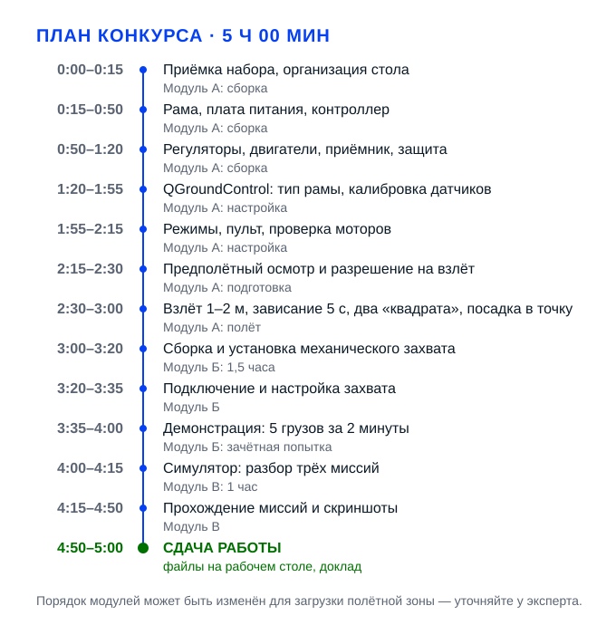
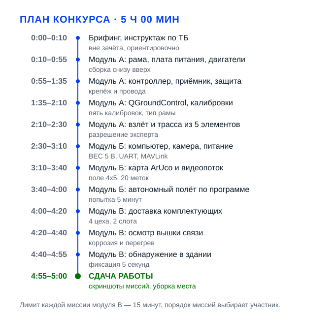
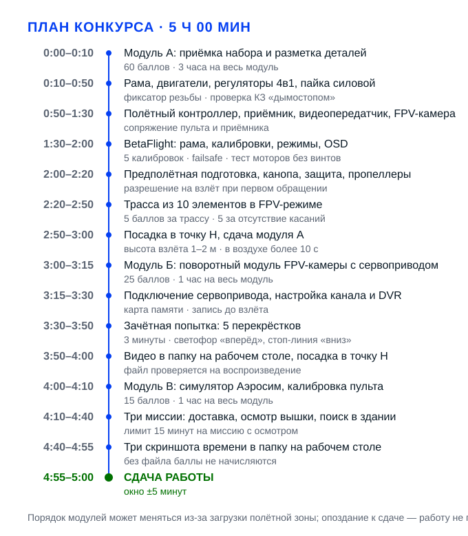

Эксплуатация БАС (Р)
Задания ниже — официальные файлы «Абилимпикс» (источник: abilympics-russia.ru), разложенные по категориям. Решения написаны по тексту задания, регламенту и критериям оценки; в них указано, что именно проверяет эксперт.
Школьник
14–16 лет, базовый уровень заданияВыдержка из официального конкурсного задания: страницы, относящиеся к категории «Школьник» (стр. 5–7 источника).
Пошаговое решение
Конкурсное задание у школьников состоит из трёх модулей и укладывается в пять часов: сборка мультироторного БВС — 2,5 часа, эксплуатация полезной нагрузки — 1,5 часа, отраслевые задачи в симуляторе — 1 час. Собирается набор SKYRIS Техник 4S для беспаечной сборки, затем аппарат настраивается в QGroundControl: тип рамы, калибровка датчиков, полётные режимы, сопряжение пульта, направление вращения моторов. Результат модуля А сформулирован буквально: аппарат собран, настроен и допущен к взлёту, выполнен взлёт на 1–2 метра, зависание в пределах площадки 5 секунд, «квадрат» по часовой стрелке без разворота в углах, «квадрат» против часовой с разворотом и посадка в точку. В модуле Б ставится механический захват: пять грузов за две минуты в грузоприёмник. Модули независимы, порядок их выполнения может меняться, а 30 процентов задания регион вправе изменить. Ниже — порядок работы по модулям.

Задача 1. Собрать раму и бортовую электронику квадрокоптераМодуль А · 2 ч 30 мин на сборку, настройку и полёт
Первая половина модуля А: из набора SKYRIS Техник 4S для беспаечной сборки нужно получить собранный аппарат, в котором силовая часть, полётный контроллер, регуляторы и двигатели стоят на своих местах и подключены строго по инструкции производителя. Паять здесь не нужно и нельзя: всё соединяется разъёмами, и цена ошибки другая — не «подтёк припоя», а перепутанный разъём, перетянутый винт и провод, зажатый между деками. Сборка идёт в жёстком порядке: сначала рама и питание, потом электроника, потом деки, приёмник и защита. Нарушите порядок — придётся разбирать, а время модуля уже уйдёт.
Действие 1.1. Подготовить стол и принять набор
Шаг 1.1.1
Освобождаем стол целиком и ставим лампу так, чтобы свет падал спереди и не давал тени от собственных рук. Раскладываем три лотка: под крепёж, под электронику и под инструмент. Из инструмента нужны шестигранники 1,5–3 мм, крестовая отвёртка, бокорезы, пинцет, стяжки и мультиметр. Крепёж из пакетов сразу пересыпаем в лоток и раскладываем по типоразмерам: винты М3×8 отдельно от М3×12, гайки отдельно от шайб. Набор кладём слева, собираемый аппарат — по центру, чтобы к нему был доступ с трёх сторон.
Модуль А длится 2,5 часа, и в это время входят сборка, настройка в QGroundControl, предполётная подготовка и полёт. Только калибровка датчиков и проверка моторов забирают пятнадцать-двадцать минут, поэтому каждая минута, потраченная на поиск винта, отнимается у настройки. Порядок на столе оценивается отдельным критерием организации рабочего места, и эксперт смотрит на стол в первые же минуты модуля, а не в конце.
На столе три лотка, крепёж разложен по типоразмерам, инструмент под рукой и не лежит на корпусе аппарата, лампа освещает рабочую зону без блика на карбоне. Проверьте себя просто: любой винт из набора вы находите за пять секунд, не перебирая пакеты.
Самая частая ошибка — высыпать весь крепёж одной кучей «чтобы быстрее»: через полчаса в ней не отличить М3×10 от М3×12, а разница в два миллиметра означает либо продавленный карбон, либо винт, который не держит двигатель. Вторая ошибка — работать на краю стола: упавший мотор ловят на полу, и хорошо, если он не попал под ногу.
Эксперт проходит мимо в начале модуля и отмечает, подготовлен ли стол, разложен ли крепёж и лежит ли на виду мультиметр. К этому критерию он возвращается, если видит, что участник постоянно ищет инструмент вместо работы.
Шаг 1.1.2
Сверяем содержимое набора с перечнем инструкции производителя: рама с лучами, плата распределения питания, полётный контроллер, четыре регулятора оборотов, четыре двигателя, радиоприёмник, пропеллеры, защита рамы, крепёж и стяжки. Каждую позицию отмечаем карандашом в перечне. Отдельно проверяем двигатели на парность: в наборе два мотора с правой резьбой и два с левой, и на корпусе это обозначено стрелкой или буквой. Сразу откладываем в сторону то, что вызывает сомнение: погнутый луч, треснувшую деку, двигатель с задиром на обмотке.
Приёмка — единственный момент, когда недокомплект ещё закрывается: после старта замена идёт только через главного эксперта и только если он признает причину уважительной. Сверка по перечню занимает пять-семь минут, а её отсутствие стоит гораздо дороже: нехватку одного винта обнаруживают на этапе установки защиты рамы, когда разбирать уже нечего, а время модуля почти вышло.
Все строки перечня отмечены, расхождения названы точно: чего нет, сколько нет, в каком виде. Если сомневаетесь в детали — сравните её с фотографией в инструкции и покажите эксперту до старта, а не после.
Ошибка новичка — начать сборку, не сверив набор: нехватка выясняется в середине работы, когда менять план поздно. Вторая — увидеть дефект и промолчать «обойдусь»: погнутый луч даст вибрацию, вибрация сорвёт калибровку, и аппарат будет уводить в сторону на висении, а виноватым окажется «кривой полётный контроллер».
Эксперт наблюдает за приёмкой и фиксирует обращения. Спокойный, точный вопрос «в наборе три винта М3×12 вместо четырёх» ценится выше, чем молчаливая попытка собрать на трёх.
Шаг 1.1.3
Читаем инструкцию производителя до первой отвёртки: находим схему подключения электроники, распиновку разъёмов полётного контроллера и порядок сборки. Схему кладём рядом с аппаратом, чтобы не держать её в голове. Сразу выписываем на лист три вещи, которые чаще всего забывают: какой разъём отвечает за питание, куда идёт сигнальный провод от регуляторов и где на корпусе контроллера стрелка «вперёд».
Беспаечная сборка прощает мало: разъёмы вставляются до щелчка и только в одном положении, но перепутать силовой разъём с сигнальным можно за секунду, а последствие — выгоревший регулятор. Инструкция производителя разрешена правилами компетенции, и это единственный документ, на который можно ссылаться при споре с экспертом о порядке действий.
Схема перед глазами, выписанные три пункта на листе, аппарат разложен в порядке сборки: снизу вверх. Проверьте себя: вы можете, не заглядывая в инструкцию, показать, какой разъём куда идёт — если нет, читайте схему ещё раз, а не начинайте наугад.
Частая ошибка — читать инструкцию «по диагонали» и собирать по памяти, потому что набор похож на тот, что был на тренировке. Вторая, более дорогая — использовать свои записи и распечатки: правила компетенции прямо запрещают приносить на рабочее место записи, не оговорённые в задании, и это разбирательство с главным экспертом.
Эксперт смотрит, лежит ли инструкция на столе и сверяется ли участник со схемой при подключении. Работа «по памяти» при первом же перепутанном разъёме читается как неумение работать с документацией.
Действие 1.2. Поставить плату питания и полётный контроллер
Шаг 1.2.1
Берём основную часть рамы — нижнюю деку с установленными лучами — и проверяем её до установки электроники. Прокатываем пальцем кромки карбона: сколы и расслоение чувствуются сразу. Проверяем затяжку винтов крепления лучей: они должны быть затянуты ровно, без продавливания карбона, и все четыре — одинаково. Кладём раму на ровную плитку или металлическую линейку и смотрим на просвет: все четыре луча должны касаться плоскости, перекошенная рама потом не даст ровного висения.
Геометрия рамы — фундамент всей дальнейшей оценки: перекошенная рама даёт постоянный крен, который приходится компенсировать триммерами, а на «квадрате» аппарат уводит в сторону на каждом угле. Проверка занимает две минуты, а исправление потом — разборку всего аппарата, на которую в модуле А просто нет времени.
Рама лежит на плоскости без качания, кромки целые, все винты лучей затянуты с одинаковым усилием, люфта лучей нет. Возьмите раму за два противоположных луча и слегка покрутите в противофазе: скрип и подвижность означают незатянутые винты.
Ошибка — тянуть винты «до упора»: в карбоне резьба срывается раньше, чем чувствуется сопротивление, и луч начинает гулять. Вторая — не проверить раму вовсе: трещина у основания луча проявляется вибрацией на оборотах, аппарат начинает дрожать в висении, и калибровка датчиков уже не помогает.
Эксперт осматривает раму вместе с участником в начале сборки и отдельно проверяет затяжку перед взлётом. Трещина, найденная до старта, — плюс к культуре работы; та же трещина, замеченная после полёта, — минус по безопасности.
Шаг 1.2.2
Ставим плату распределения питания на площадку нижней деки строго по ориентации из инструкции: разъёмы питания должны смотреть в ту же сторону, что и на схеме, иначе провода до регуляторов не дотянутся. Крепим на четыре винта или на штатные стойки, затягиваем по диагонали — сначала наживляем все, потом добираем усилие. Под плату кладём штатную изоляционную прокладку: карбон токопроводящ, и контакт платы с рамой — это короткое замыкание через корпус.
Плата распределения — узел, через который идёт весь ток двигателей, и её перекос или контакт с карбоном выводит из строя сразу всю силовую часть. Ориентация важна не эстетикой: при развороте на 90 градусов провода регуляторов не хватает по длине, начинается натяжение, и разъём выходит из гнезда в полёте.
Плата стоит ровно, не касается карбона, винты затянуты по диагонали и не выступают с обратной стороны деки. Прозвоните мультиметром в режиме прозвонки между площадкой питания и карбоном: звонка быть не должно.
Классическая ошибка — поставить плату без прокладки «она же на стойках»: стойки пластиковые, но край платы всё равно ложится на карбон при подтяжке. Вторая — перетянуть винты и треснуть плату у отверстия: трещина идёт по дорожкам, и питание пропадает на одном из лучей, что выясняется только на проверке моторов.
Эксперт проверяет посадку платы и наличие изоляции. Отдельно смотрит, не выступают ли винты снизу — выступающий винт цепляет стол и царапает покрытие посадочной площадки.
Шаг 1.2.3
Ставим полётный контроллер на штатную площадку. Главное — ориентация: стрелка на корпусе должна смотреть вперёд, в сторону «носа» рамы, того направления, куда аппарат летит при отклонении стика от себя. Крепим через виброразвязку — мягкие демпферы или двустороннюю площадку из набора, но без фанатизма: слишком мягкая развязка даёт раскачку, слишком жёсткая — передаёт вибрацию. Разъёмы оставляем доступными: USB должен смотреть так, чтобы кабель подключался без снятия деки.
Контроллер — «мозг» аппарата, и его ориентация определяет, где у машины перед. Ошибка в 90 или 180 градусов не ловится глазами на столе, но в полёте означает, что аппарат реагирует на стики зеркально, и первый же взлёт заканчивается переворотом. Виброразвязка нужна потому, что акселерометр и гироскоп стоят именно здесь, а вращающиеся моторы дают вибрацию, которая уводит показания и портит висение.
Стрелка смотрит точно вперёд, корпус не касается соседних элементов, демпферы стоят без перекоса, USB доступен. Проверьте доступ: подключите кабель и убедитесь, что он входит до конца и не упирается в деку.
Ошибка — поставить контроллер стрелкой «примерно вперёд» и надеяться исправить ориентацию в программе: это добавляет путаницы и риска, а эксперт видит небрежность сразу. Вторая — затянуть контроллер винтами прямо в карбон, без виброразвязки: вибрация доходит до датчиков, и аппарат дрожит в висении.
Эксперт проверяет ориентацию стрелки до подключения к компьютеру — это один из первых пунктов осмотра. Если стрелка смотрит не туда, дальше всю настройку он рассматривает с сомнением.
Действие 1.3. Установить регуляторы оборотов и двигатели
Шаг 1.3.1
Закрепляем четыре регулятора оборотов на лучах, по одному на луч, ориентируя так, чтобы силовые провода шли к плате питания, а сигнальные — к контроллеру, без натяжения и без петли. Крепим стяжками или штатными площадками: стяжка затягивается так, чтобы регулятор не двигался, но корпус не был сдавлен. Проверяем, что между регулятором и карбоном остаётся зазор: корпус греется под нагрузкой, и прижатый к карбону регулятор работает как радиатор с плохим обдувом.
Регуляторы — самый нагревающийся узел после двигателей, и их тепловой режим напрямую влияет на надёжность висения: перегретый регулятор уходит в защиту и просто отключает мотор, что в воздухе означает кувырок. Аккуратная укладка проводов нужна и для предполётной проверки: провода не должны попадать в зону вращения пропеллеров, и это отдельный пункт задания.
Все четыре регулятора сидят плотно, не болтаются при покачивании пальцем, зазор до карбона есть, провода лежат вдоль лучей и не выходят за габарит рамы. Проверьте стяжки: кончик обрезан под корень, а не оставлен «хвостом» на два сантиметра.
Ошибка — стянуть регулятор так, что треснула термоусадка: корпус оказывается под напряжением, и первый же контакт с карбоном даёт короткое замыкание. Вторая — оставить провода петлёй над лучом: на оборотах их подсасывает к пропеллеру, и перерезанный провод отключает мотор в самый неподходящий момент.
Эксперт осматривает укладку проводов и крепление регуляторов, а на предполётной проверке специально смотрит, не касаются ли провода плоскости вращения винтов.
Шаг 1.3.2
Ставим двигатели на концы лучей: вал вверх, крепёж на четыре винта снизу луча. Сначала наживляем все четыре винта, потом затягиваем по диагонали, не прилагая избыточного усилия. Винты берём только той длины, что указана в инструкции: слишком длинный винт упирается в обмотку статора и перерезает её. Двигатели с правой и левой резьбой ставим по схеме — на диагонально противоположные лучи, иначе гайка крепления пропеллера будет откручиваться в полёте.
Парность резьбы — не формальность: пропеллер, накрученный на вал с «неправильной» резьбой, раскручивается от реактивного момента и слетает именно на оборотах. Длина винтов крепления — вторая по частоте причина выхода из строя двигателей: перерезанная обмотка проявляется как «мотор не запускается» уже на проверке в QGroundControl, когда заменить его нечем.
Все четыре двигателя сидят без люфта, валы вращаются от руки свободно, с одинаковым сопротивлением и без хруста. Покрутите каждый: посторонний звук или заедание — повод заменить двигатель до подключения, а не после.
Ошибка — перетянуть винты крепления: в алюминиевом основании срывается резьба, и двигатель начинает гулять, давая вибрацию. Вторая — поставить мотор с левой резьбой на место правого: аппарат летит, но пропеллер держится только за счёт затяжки, и на разгоне его срывает вместе с гайкой.
Эксперт проверяет парность двигателей по маркировке и свободу вращения валов. Люфт двигателя он находит покачиванием за корпус — это быстрее, чем ждать вибрации в полёте.
Шаг 1.3.3
Подключаем регуляторы: силовые провода — к плате распределения питания, сигнальные — в разъёмы контроллера строго по номерам М1–М4 из схемы. Порядок номеров соответствует не расположению по кругу, а диагоналям: обычно М1 — передний правый, М2 — задний левый, М3 — передний левый, М4 — задний правый, но сверяться нужно со схемой конкретного контроллера. Разъём вставляем до щелчка, проверяя, что сигнальный провод оказался на той ноге, которая обозначена на схеме.
Порядок моторов определяет, как контроллер распределяет крен и тангаж: при перепутанных номерах аппарат при отклонении стика наклоняется не в ту сторону и переворачивается при первом же отрыве от площадки. Проверка направления вращения и порядка моторов есть отдельным пунктом задания, и делается она именно здесь, на столе, а не в воздухе.
Все четыре разъёма на месте и защёлкнуты, номера совпадают со схемой, провода не перетянуты и не перекрещиваются. Потяните каждый разъём легонько назад: он должен сидеть с усилием, а не выходить от касания.
Ошибка — вставить сигнальный разъём со сдвигом на одну ногу: внешне всё на месте, но канал не работает, и при проверке моторов один из них молчит. Вторая — подключить регуляторы по часовой стрелке «как лежат»: аппарат собран, моторы крутятся, но ориентация перевёрнута, и первый взлёт заканчивается на боку.
Эксперт сверяет подключение со схемой до включения питания. Именно на этом шаге он чаще всего находит ошибку, которая иначе стоила бы всего полёта. Отдельно он проверяет, не перепутаны ли номера на разъёмах, — это видно по маркировке.
Действие 1.4. Закрыть раму, поставить приёмник и защиту
Шаг 1.4.1
Ставим нижнюю деку и стойки: стойки вкручиваем в основание до упора, но без усилия, затем укладываем провода так, чтобы они не проходили под стойками и не зажимались между декой и платой. Провода питания и сигнальные жгуты уводим в сторону от отверстий под стойки. Деку ставим ровно, совмещая все четыре отверстия сразу, и только потом наживляем винты.
Зажатый провод — скрытая неисправность: изоляция продавливается о карбон, и короткое замыкание проявляется не сразу, а на вибрации в полёте. Стойки, вкрученные с перекосом, дают перекос всей рамы, а это снова крен и увод. Кроме того, ровно закрытая рама — это и есть тот «собранный аппарат», который принимает эксперт по критерию качества сборки.
Дека лежит без зазоров и перекосов, все винты затянуты, провода не выглядывают из-под кромки и не натянуты. Проверьте рукой: проведите пальцем по стыку деки и стойки — защемлённый провод чувствуется как бугорок.
Ошибка — затянуть деку, не глядя, и придавить жгут: аппарат работает, но при первой же тряске пропадает контакт, и мотор отключается в воздухе. Вторая — поставить деку на три винта из четырёх «потом добавлю»: дека играет, и на вибрации винты выкручиваются сами.
Эксперт осматривает стыки дек и проверяет, не зажаты ли провода. Это одна из типовых ошибок, которую он ищет целенаправленно, потому что снаружи она не видна.
Шаг 1.4.2
Ставим верхнюю деку и проверяем жёсткость получившегося корпуса: берём аппарат за два противоположных луча и слегка скручиваем. Корпус должен вести себя как единое целое, без скрипа и заметной деформации. Сразу проверяем доступ: разъём USB, кнопка включения, место под аккумулятор и площадка под дополнительное оборудование должны оставаться свободными, потому что в модуле Б на аппарат встанет захват.
Жёсткость корпуса — это стабильность висения: любая подвижность дек передаёт вибрацию на датчики и превращает удержание точки в постоянную борьбу. Свободный доступ к USB нужен прямо сейчас, в настройке: если разъём закрыт декой, подключение к QGroundControl занимает минуты вместо секунд, а их в модуле А нет.
Корпус не скрипит и не играет при скручивании, все винты верхней деки на месте, USB и кнопка доступны без разборки, площадка под нагрузку свободна. Подключите кабель к разъёму и убедитесь, что он входит до конца.
Ошибка — закрыть деку и перекрыть USB: потом кабель вставляют с перекосом, разъём разбивается, и связь с компьютером пропадает в самый нужный момент. Вторая — стянуть верхнюю деку стяжками «для надёжности»: это мешает установке захвата в модуле Б, а снять их в полётной зоне уже нечем.
Эксперт проверяет жёсткость корпуса и доступ к разъёмам. Он же напоминает про модуль Б, если видит, что площадка под нагрузку занята проводами. Если участник закрывает деку и не проверяет доступ к USB, он отмечает это как потерю времени на следующем шаге.
Шаг 1.4.3
Ставим радиоприёмник на площадку, указанную в инструкции, подальше от силовых проводов и регуляторов: они дают помехи на приём. Подключаем к полётному контроллеру по схеме — сигнальный провод в указанный порт, питание и земля по распиновке. Антенны выводим наружу через штатные отверстия и разводим под углом примерно 90 градусов друг к другу: две антенны, стоящие параллельно, работают как одна. Затем выполняем биндинг по инструкции производителя: приёмник переводится в режим сопряжения, пульт — в режим поиска, после чего на приёмнике загорается ровный индикатор.
Радиоканал — единственная связь с аппаратом в полёте, и требования к нему жёстче, чем к любому другому узлу: сопряжение пульта и приёмника вынесено в задание отдельным пунктом, а его отсутствие означает, что аппарат не взлетит вообще. Разнесённые антенны и удаление от силовых проводов — не теория: на тренировках именно положение приёмника даёт «дрожание» стиков и внезапные отказы на дальности.
Индикатор приёмника горит ровно, без мигания; в QGroundControl при движении стиков полоски каналов отклоняются плавно и до крайних значений; при выключении пульта приёмник переходит в режим потери сигнала. Антенны выведены наружу и разведены под углом.
Ошибка — оставить приёмник между платой питания и контроллером: помехи дают пропадание канала на нескольких метрах, и аппарат уходит в failsafe прямо над площадкой. Вторая — не выполнить биндинг до настройки: в QGroundControl каналы показываются нулями, и участник начинает «чинить» настройки вместо сопряжения.
Эксперт проверяет сопряжение по индикатору и по отклонению каналов на экране. Отсутствие реакции на стики он фиксирует как незавершённую настройку. Разнесённые антенны он тоже отмечает: это признак понимания, а не случайности.
Шаг 1.4.4
Собираем защиту рамы: четыре дуги или цельное кольцо, в зависимости от набора. Крепим к лучам штатными винтами, ориентируя дуги так, чтобы они поднимались выше плоскости пропеллеров и не мешали их вращению. Сначала наживляем все точки крепления, потом затягиваем. Проверяем симметрию: защита не должна быть перекошена, иначе аппарат будет валиться на одну сторону при посадке на неровную площадку.
Защита рамы — обязательный элемент задания, и её отсутствие видно сразу. Но важнее другое: на «квадрате» аппарат проходит близко к стойкам разметки, и защита — это то, что отделяет зачётный пролёт от сломанного луча. Перекошенная защита смещает центр масс и мешает ровному висению, а выступающая дуга цепляет за элементы трассы.
Все точки крепления на месте, дуги симметричны, пропеллеры при установке не касаются защиты, аппарат стоит на площадке ровно, без наклона. Покачайте аппарат: ничего не должно дребезжать и болтаться. Если что-то дребезжит, найдите источник до взлёта.
Ошибка — поставить защиту после пропеллеров: винты крепления оказываются под плоскостью вращения, и затянуть их нормально уже нельзя. Вторая — затянуть защиту с перекосом: при посадке она цепляет площадку раньше ног, аппарат заваливается на бок, и лопасти ломаются о пол.
Эксперт проверяет наличие и симметрию защиты до взлёта. Именно по этому пункту видно, дочитал ли участник задание до конца. Он же проверяет, не цепляет ли защита за посадочные опоры при наклоне аппарата.
Задача 2. Настроить аппарат в QGroundControlМодуль А · настройка входит в те же 2 ч 30 мин
Собранный аппарат ещё не летает: контроллер не знает, какая у него рама, где верх, где север и на каком канале включаются моторы. Настройка в QGroundControl превращает набор деталей в управляемую машину, и порядок здесь не произвольный: сначала тип рамы, потом калибровка датчиков, потом полётные режимы и пульт, и только в конце проверка моторов. Каждый шаг опирается на предыдущий, а пропущенный пункт проявляется не сообщением об ошибке, а поведением аппарата в воздухе — уводом, дрожанием или переворотом при взлёте.
Действие 2.1. Подключить аппарат и выбрать тип рамы
Шаг 2.1.1
Подключаем аппарат к ноутбуку кабелем USB, пропеллеры при этом сняты — это правило без исключений, потому что любой тест моторов на столе с винтами заканчивается травмой. Запускаем QGroundControl и ждём, пока в верхней панели появится индикатор подключения и номер порта. Если порт не определяется, проверяем кабель (нужен передающий, а не «зарядный»), затем другой USB-разъём на ноутбуке, и только потом лезем в настройки порта вручную.
Вся дальнейшая настройка идёт через эту связь, и потеря порта в середине калибровки означает, что процедуру придётся начинать заново. Кабель без линий данных — самая частая причина «аппарат не видится», и на её поиск уходят минуты, которых в модуле А нет: подключение к QGroundControl стоит отдельным пунктом задания, и его результат проверяется сразу.
В QGroundControl горит зелёный индикатор связи, в списке портов выбран правильный, на вкладке «Настройки» видны параметры аппарата. Проверьте: при отключении кабеля индикатор гаснет, при подключении появляется снова — значит, связь живая, а не «залипла» на последнем состоянии.
Ошибка — искать проблему в настройках, когда виноват кабель: участник меняет порт и скорость, теряет время, а потом выясняется, что провод был зарядный. Вторая — подключаться с установленными пропеллерами: при первом же случайном тесте моторов аппарат прыгает со стола.
Эксперт смотрит, сняты ли пропеллеры при подключении. Это вопрос безопасности, и он проверяется раньше, чем что-либо ещё. Он же следит, чтобы аппарат не был подключён к ноутбуку с включённым питанием моторов.
Шаг 2.1.2
Выбираем тип рамы: в разделе «Airframe» указываем квадрокоптер схемы X — четыре мотора, расположенные по углам. После выбора QGroundControl просит перезагрузку контроллера, и её нужно выполнить, иначе новые параметры не применятся. Сразу после перезагрузки проверяем, что выбранная схема сохранилась и в интерфейсе отображается четыре мотора. После перезагрузки заново откройте раздел и убедитесь, что выбранная схема не сбросилась.
Тип рамы определяет математику микширования: контроллер вычисляет, насколько прибавить тяги на каждом моторе, чтобы наклонить аппарат в нужную сторону. При схеме «плюс» вместо «X» аппарат с четырьмя моторами по углам будет реагировать на стики с ошибкой в 45 градусов, то есть уходить по диагонали вместо прямого движения. Выбор типа рамы — отдельный пункт задания, и он проверяется по факту.
В интерфейсе выбран квадрокоптер X, число моторов — 4, после перезагрузки настройка на месте, ошибок в журнале нет. Проверьте строку состояния: если QGC показывает предупреждение о несоответствии конфигурации, его нужно разобрать сейчас.
Ошибка — выбрать тип рамы и не перезагрузить контроллер: интерфейс показывает новую схему, а в памяти остаётся старая, и аппарат ведёт себя непредсказуемо. Вторая — выбрать «плюс» из-за того, что моторы кажутся стоящими крест-накрест: путаница в названиях схем стоит всего полёта.
Эксперт проверяет выбранный тип рамы на экране и число моторов. Это один из пяти-шести пунктов, которые он фиксирует в настройке. Если схема выбрана неверно, все дальнейшие проверки он считает сомнительными.
Шаг 2.1.3
Проверяем версию прошивки и состояние параметров: QGroundControl показывает версию автопилота и предупреждения о несовпадении. Обновлять прошивку на чемпионате не нужно и опасно — это отдельная процедура с риском «окирпичить» контроллер, а задание её не требует. Если интерфейс предлагает обновление, отказываемся и работаем на той версии, что стоит. Затем сохраняем текущую конфигурацию в файл параметров, если это предусмотрено инструкцией.
Сохранение параметров — страховка: если в середине настройки что-то пойдёт не так и придётся вернуться к исходному состоянию, восстановление занимает минуту вместо повторной калибровки всего. Обновление прошивки в конкурсное время — типичная ловушка: аппарат перестаёт отвечать, и участник остаётся без полёта, хотя задание выполнено на три четверти.
Версия прошивки зафиксирована, предупреждений о несовпадении нет, файл параметров сохранён и лежит в известной папке. Проверьте, что вы помните, куда сохранили: поиск файла по диску в конце модуля — потерянные минуты.
Ошибка — согласиться на обновление «чтобы всё было свежее»: контроллер уходит в перепрошивку, связь пропадает, и восстановление занимает больше времени, чем осталось до конца модуля. Вторая — не сохранить параметры и потерять результат калибровки при случайном сбросе.
Эксперт смотрит, не начато ли обновление прошивки, и фиксирует работу с параметрами. Сохранённый файл он считает признаком зрелой работы. Отдельно он отмечает, что участник не тратит конкурсное время на обновления.
Действие 2.2. Откалибровать датчики
Шаг 2.2.1
Запускаем калибровку акселерометра и последовательно ставим аппарат в шесть положений: на ровную поверхность, на левый бок, на правый бок, на «нос», на «хвост» и вверх ногами. В каждом положении держим аппарат неподвижно, пока QGroundControl не покажет переход к следующему шагу. Держим крепко, двумя руками, не касаясь пропеллеров и не покачивая корпус: любое движение в момент записи портит результат.
Акселерометр измеряет, где низ, и от него зависит, как аппарат понимает горизонт. Кривая калибровка — это постоянный крен: аппарат в режиме удержания начинает «уезжать» в сторону, и участник компенсирует это стиками весь полёт, теряя точность на углах «квадрата». Процедура занимает три-четыре минуты, и это самая дешёвая страховка от увода в полёте.
QGroundControl подтвердил все шесть положений без ошибок, после калибровки на ровной поверхности индикатор горизонта показывает ноль по крену и тангажу. Положите аппарат на стол и посмотрите на модель в интерфейсе — она должна стоять ровно, а не под наклоном.
Ошибка — калибровать, держа аппарат на весу и покачивая: контроллер запоминает наклон, и потом аппарат летит «боком». Вторая — пропустить положение и нажать «дальше» на глаз: часть датчика остаётся неоткалиброванной, и ошибка вылезает при крене больше двадцати градусов, то есть именно на разворотах.
Эксперт наблюдает за калибровкой и за тем, как участник держит аппарат. Ровные показания горизонта после калибровки он проверяет на экране. Если аппарат после калибровки показывает наклон на ровном столе, он просит повторить процедуру.
Шаг 2.2.2
Калибруем компас: уводим аппарат от металлических предметов — от ноутбука, стоек, инструмента, — поднимаем на вытянутых руках и вращаем во всех плоскостях, пока индикатор не заполнится. Вращение должно быть медленным и плавным, без рывков: контроллер собирает точки по всем осям. Если QGroundControl сообщает о большом отклонении, калибровку повторяем в другом месте площадки.
Магнитометр отвечает за удержание курса, и на «квадрате» именно он держит аппарат носом в нужную сторону при развороте в углах. Помехи от металла и электроники дают ошибку курса, из-за которой аппарат медленно поворачивается в висении, а на развороте уходит не в тот угол. В помещениях с металлоконструкциями это самая частая причина «странного» поведения исправного аппарата.
Калибровка завершена без предупреждений, отклонение компаса в допустимых пределах, при повороте аппарата на 90 градусов курс в интерфейсе меняется на те же 90. Проверьте: поставьте аппарат носом на север и сравните с компасом телефона.
Ошибка — калибровать рядом с ноутбуком и металлическим верстаком: калибровка проходит, но с большой ошибкой, и аппарат в висении медленно вращается. Вторая — крутить аппарат быстро и с рывками: точки собираются неравномерно, и контроллер выдаёт предупреждение о низком качестве калибровки, которое участник игнорирует.
Эксперт смотрит на итоговое отклонение компаса и на то, отошёл ли участник от металла. Калибровка «на верстаке» сразу видна по предупреждению. Предупреждение о низком качестве калибровки для него равно её отсутствию.
Шаг 2.2.3
Выполняем калибровку уровня горизонта: аппарат стоит на ровной поверхности, запускаем процедуру и не трогаем его до подтверждения. Затем проверяем гироскоп: аппарат неподвижен, а показания угловых скоростей должны быть близки к нулю и не дрожать. Если в интерфейсе есть график — смотрим, чтобы линия стояла, а не «пилила». Затем проверяем показания барометра: при подъёме аппарата на полметра высота должна измениться.
Уровень горизонта задаёт нулевую плоскость, от которой считается крен: если он записан с наклоном, аппарат будет считать ровным положением наклонное и в висении уйдёт в сторону. Дрожащие показания гироскопа означают вибрацию или плохой контакт, и это важно поймать на столе, а не в воздухе, где вибрация усиливается оборотами.
После калибровки модель в интерфейсе стоит ровно, угловые скорости в покое близки к нулю, при постукивании по столу показания реагируют и возвращаются к нулю. Наклоните аппарат рукой на 10 градусов — модель должна показать те же 10.
Ошибка — калибровать горизонт на кривом столе или на подложенном предмете: нулевая плоскость уходит, и аппарат «думает», что летит ровно, а на самом деле валится в сторону. Вторая — не проверить гироскоп и не заметить, что контроллер касается деки: вибрация передаётся напрямую.
Эксперт проверяет реакцию модели на наклон корпуса рукой — это быстрый и наглядный тест, который показывает, живая ли калибровка. Ровные показания на неподвижном столе для него важнее, чем скорость выполнения.
Действие 2.3. Настроить полётные режимы и пульт
Шаг 2.3.1
Настраиваем полётные режимы на тумблере: в разделе режимов назначаем на один канал три положения — стабилизированный режим, режим удержания высоты и режим удержания позиции. Для школьной категории этого достаточно: взлёт и «квадрат» выполняются в стабилизированном или в режиме удержания высоты, а позиционный нужен, чтобы зависнуть в точке без постоянной работы стиками. После назначения проверяем, что переключение тумблера меняет режим на экране.
Полётные режимы — это то, чем участник реально управляет в полётной зоне, и неправильное назначение означает, что нужный режим не включится в нужный момент. Режим удержания высоты заметно упрощает зависание на 5 секунд в пределах площадки: аппарат сам держит высоту, и участнику остаётся работать только стиками по горизонтали.
Три положения тумблера дают три разных режима, и названия на экране совпадают с ожидаемыми. Проверьте каждое положение отдельно: если два положения показывают один режим, канал назначен неверно. Если режимы не переключаются, вернитесь к назначению канала.
Ошибка — назначить режимы и не проверить их переключением: в полёте выясняется, что тумблер включает не то, и аппарат вместо удержания высоты начинает снижаться. Вторая — поставить на один канал два режима, которые конфликтуют, и получить непредсказуемое поведение при переключении.
Эксперт проверяет назначение режимов на экране и переключение тумблера до взлёта. Это одна из немногих настроек, которую видно целиком. Он может попросить назвать, какой режим включён сейчас, — это простой тест на понимание.
Шаг 2.3.2
Проверяем пульт: заряд аккумулятора не ниже 80 процентов, модель выбрана правильно, стики и тумблеры в исходном положении. Смотрим в QGroundControl на вкладке радио: при движении стиков полоски должны отклоняться плавно, от края до края, без «ступенек» и без самопроизвольного дрожания в покое. Проверяем реверс: стик от себя — аппарат должен наклоняться вперёд, стик вправо — вправо. Если направление обратное, включаем реверс канала в настройках пульта, а не в контроллере.
Каналы и реверс — то, что делает управление предсказуемым: при обратном тангаже аппарат на взлёте уходит назад, и участник, инстинктивно отклоняя стик сильнее, только ускоряет уход. Заряд пульта проверяется отдельным пунктом задания, и это не формальность: при 20 процентах пульт уходит в предупреждение, а затем отключается, и аппарат остаётся без управления.
Все каналы отклоняются до крайних значений, в покое полоски стоят, реверс соответствует направлению движения модели на экране, заряд пульта выше 80 процентов. Проверьте каждый канал по очереди и назовите его вслух — так быстрее найти перепутанный.
Ошибка — оставить реверс «как получилось» и надеяться привыкнуть: в стрессовой ситуации привычка не работает, и первый взлёт заканчивается переворотом. Вторая — не проверить заряд пульта: предупреждение появляется в самый неподходящий момент, и аппарат переходит в failsafe над полётной зоной.
Эксперт смотрит на отклонение каналов вместе с участником и проверяет направление реакции модели. Заряд пульта он спрашивает до взлёта. Он же смотрит, не дрожат ли полоски каналов в покое: это признак помех или изношенного потенциометра.
Шаг 2.3.3
Настраиваем включение и отключение моторов: назначаем тумблер на канал арминга, проверяем, что в выключенном положении моторы не запускаются, а в включённом — запускаются и держат минимальные обороты. Настраиваем failsafe на потерю сигнала: при пропадании связи аппарат должен не «лететь дальше», а выполнить заранее выбранное действие — снижение или посадку. Для школьной категории достаточно посадки на месте.
Арминг — это защита от случайного запуска: без него любой сбой при подключении аккумулятора запускает моторы, и аппарат прыгает со стола. Failsafe на потерю сигнала — требование безопасности, и на предполётной проверке эксперт может попросить показать, что произойдёт при выключении пульта. Настройка включения и отключения моторов вынесена в задание отдельным пунктом.
При выключенном тумблере моторы молчат, при включённом — раскручиваются до минимума и слушаются стика тяги, при выключении тумблера останавливаются. Проверьте failsafe: выключите пульт при снятых пропеллерах и убедитесь, что в интерфейсе появилось сообщение о потере сигнала.
Ошибка — назначить арм на тот же канал, что и полётный режим: переключение режима в полёте выключает моторы. Вторая — не настроить failsafe: при потере сигнала аппарат продолжает лететь по последней команде и уходит за пределы зоны, а это уже разбирательство с главным экспертом.
Эксперт проверяет арм-тумблер до взлёта и может попросить показать реакцию на потерю сигнала. Настроенный failsafe он отмечает отдельно. Он же проверяет, что арм не срабатывает при включении питания без команды с пульта.
Действие 2.4. Проверить моторы и откалибровать регуляторы
Шаг 2.4.1
Открываем в QGroundControl тест моторов и запускаем каждый по очереди на минимальных оборотах, не более 10–15 процентов. Сверяем две вещи: номер мотора совпадает с положением на схеме и направление вращения соответствует схеме — два мотора по диагонали крутятся по часовой стрелке, два других против. Направление смотрим сверху, при снятых пропеллерах, по маркировке на корпусе или по потоку воздуха от вала.
Порядок и направление моторов — самая частая причина переворота при взлёте: если один мотор крутится не в ту сторону, аппарат при отрыве закручивается вокруг своей оси, и удержать его стиками невозможно. Проверка направления вращения моторов вынесена в задание отдельным пунктом именно потому, что исправляется она только до установки пропеллеров.
Каждый мотор запускается со своего номера, вращается в нужную сторону, посторонних звуков нет, обороты нарастают плавно. Проверьте: при тесте соседнего мотора остальные стоят, а не подрагивают. Заодно послушайте: посторонний хруст означает повреждённый подшипник.
Ошибка — запустить тест с установленными пропеллерами «на секундочку»: аппарат подпрыгивает, лопасти бьют по столу и по рукам. Вторая — проверить направление на глаз, не разобравшись, где у аппарата перед: два мотора оказываются перепутанными, и это выясняется на взлёте.
Эксперт присутствует при тесте моторов и следит за тем, сняты ли пропеллеры. Правильный порядок и направление он отмечает по схеме. Если участник запускает моторы по одному, но не сверяет номера, он задаёт вопрос о схеме.
Шаг 2.4.2
Если регуляторы поддерживают калибровку, выполняем её: включаем аппарат с максимальным стиком тяги, ждём серии сигналов, опускаем стик в минимум и ждём подтверждения. Калибровка нужна, когда моторы стартуют неравномерно — один начинает вращаться раньше других или дёргается на малых оборотах. Если набор работает на цифровых регуляторах с заводскими настройками, калибровка не требуется, и это указано в инструкции производителя.
Неравномерный старт моторов — это разница в тяге на малых оборотах, из-за которой аппарат при взлёте валится на один бок. Калибровка выравнивает диапазон сигнала, и моторы начинают раскручиваться одновременно. В задании этот пункт стоит с оговоркой «при необходимости», и это значит, что решение принимается по факту, а не «на всякий случай».
После калибровки все четыре мотора стартуют одновременно, звук ровный, обороты нарастают одинаково. Проверьте: медленно поднимайте тягу и следите, чтобы какой-то мотор не отставал. Если один мотор отстаёт на треть оборота, калибровку стоит повторить.
Ошибка — калибровать регуляторы с установленными пропеллерами: при входе в режим калибровки моторы получают полный газ, и аппарат взлетает со стола. Вторая — калибровать без необходимости и сбить заводские настройки, после чего моторы начинают дёргаться ещё сильнее.
Эксперт смотрит, как стартуют моторы, и оценивает ровность раскрутки. Лишнюю калибровку он не поощряет, а вот валящийся на бок взлёт — фиксирует. Он же смотрит, не гудит ли регулятор после калибровки: гул означает сбитые настройки.
Шаг 2.4.3
Делаем итоговую проверку реакции на стики без пропеллеров: включаем моторы и наклоняем аппарат рукой — контроллер должен увеличивать тягу на моторах той стороны, которая поднялась, то есть пытаться вернуть горизонт. Проверяем реакцию на крен, тангаж и рыскание по очереди. Затем сохраняем параметры и закрываем QGroundControl, отключая кабель только после полного сохранения.
Эта проверка ловит ошибку, которую не видно ни в калибровке, ни в тесте моторов: неверный порядок моторов. Если при наклоне вправо контроллер добавляет тягу правым моторам, аппарат будет валиться, а не выравниваться. Проверка занимает минуту и стоит дешевле любого ремонта после переворота.
При наклоне вправо тяга растёт на правой стороне, при подъёме носа — на передних моторах, при повороте корпуса моторы реагируют на рыскание. Параметры сохранены, при повторном подключении настройки на месте.
Ошибка — пропустить эту проверку, потому что «моторы уже проверены»: тест моторов показывает, что они крутятся, но не показывает, правильно ли контроллер их распределяет. Вторая — выдернуть кабель во время записи параметров: часть настроек теряется, и калибровку приходится повторять.
Эксперт наблюдает за проверкой реакции на наклон. Именно этот тест показывает, понимает ли участник, как работает стабилизация, а не просто повторяет шаги инструкции.
Задача 3. Подготовить аппарат к взлёту и выполнить полётное заданиеМодуль А · финальная часть, полёт в ручном визуальном режиме
Результат модуля А формулируется коротко: аппарат собран, настроен, допущен к взлёту, выполнен взлёт, проверка работоспособности и посадка. Значит, оценивается не только то, что аппарат летает, но и то, как участник к этому полёту пришёл: осмотрел ли раму, проверил ли заряд, поставил ли пропеллеры правильной стороной и получил ли разрешение. Само полётное задание у школьников состоит из четырёх упражнений: взлёт на 1–2 метра, зависание в пределах площадки в течение 5 секунд, «квадрат» по часовой стрелке без разворота в углах, «квадрат» против часовой с разворотом в углах и посадка в точку.
Действие 3.1. Провести предполётный осмотр
Шаг 3.1.1
Обходим аппарат по кругу и проверяем то, что проверяют перед каждым вылетом: целостность рамы и лучей, отсутствие трещин у основания, затяжку винтов крепления двигателей, посадку дек, крепление платы питания и контроллера, целостность изоляции проводов. Отдельно берём каждый луч и покачиваем двигатель пальцем: люфт означает, что винты ослабли или основание треснуло. Проверяем, что защита рамы держится и не мешает вращению.
Предполётный осмотр — отдельный пункт задания, и он оценивается по факту: эксперт видит, обходит ли участник аппарат или сразу тянется к аккумулятору. Люфт двигателя на столе — это вибрация в полёте, а вибрация на «квадрате» превращается в потерю высоты на углах и в дрожание картинки, если стоит камера. Трещина у основания луча при жёсткой посадке ломается полностью, и аппарат остаётся на площадке.
Все четыре луча целые, двигатели не люфтят, деки не играют, провода целые, защита на месте. Пройдите по кругу в одном направлении и назовите вслух каждый пункт — так ничего не выпадает. Особенно внимательно смотрите основание лучей — там трещины появляются первыми.
Самая частая ошибка — проверить только то, что видно сверху: трещина у основания луча снизу остаётся незамеченной, а именно там нагрузка максимальна. Вторая — не проверить затяжку после транспортировки: аппарат несли через площадку, и один винт уже ослаб.
Эксперт наблюдает за осмотром и может задать вопрос по конкретному узлу. Осмотр «для вида», без касания руками, он отличает сразу. Он может попросить показать конкретный винт, который участник только что проверил.
Шаг 3.1.2
Проверяем аккумулятор: напряжение по встроенному индикатору или мультиметром. Для сборки 4S полностью заряженный аккумулятор даёт 16,8 вольта, номинальное напряжение — 14,8, а нижний порог, после которого начинается деградация, — около 13,6–14,0 вольта. На полёт ставим только заряженный, с напряжением не ниже 16,4 вольта на банку в сумме. Проверяем разъём: контакты не подгоревшие, корпус не вздут, провода у разъёма целые.
Просадка напряжения под нагрузкой — главная причина внезапного снижения тяги: контроллер видит падение и уходит в защиту, аппарат садится или падает там, где его застало. Вздутый аккумулятор — это риск возгорания, и на площадке такой не ставится ни при каких условиях. Проверка уровня заряда АКБ вынесена в задание отдельным пунктом.
Напряжение не ниже 16,4 вольта, корпус ровный, разъём чистый, провода целые, крепление аккумулятора надёжное. Покачайте аппарат с установленным аккумулятором: он не должен смещаться в посадочном месте.
Ошибка — поставить аккумулятор «на один полёт, потом заряжу»: на третьей минуте напряжение просаживается, и аппарат теряет тягу именно на развороте. Вторая — закрепить аккумулятор стяжкой «на честном слове»: при резком торможении он смещается, центровка уходит, и аппарат начинает валиться вперёд.
Эксперт проверяет напряжение и крепление аккумулятора до взлёта. Незакреплённый аккумулятор — грубое нарушение, за которое полёт могут не разрешить. Он же смотрит, не греется ли разъём после подключения: нагрев означает плохой контакт.
Шаг 3.1.3
Ставим пропеллеры: на двигатели с правой резьбой — винты, помеченные как вращающиеся по часовой стрелке, на двигатели с левой резьбой — противоположные. Ориентируем лопасти выпуклой стороной вверх, маркировкой наверх, и затягиваем гайку рукой до плотного касания, без инструмента. После установки проверяем зону вращения: провода, стяжки, концы защитных дуг не должны попадать в плоскость, которую описывают лопасти.
Перепутанный пропеллер даёт тягу вниз вместо верха: аппарат при взлёте вдавливается в площадку и заваливается на бок. Провода в зоне вращения — это перерезанная изоляция и отказ мотора в воздухе, и проверка попадания проводов в область вращения пропеллеров есть отдельным пунктом задания. Гайку затягиваем рукой потому, что инструментом её легко перетянуть и сорвать резьбу на валу.
Каждый пропеллер стоит на своём двигателе, маркировка совпадает, лопасти ориентированы одинаково, гайки затянуты. Прокрутите каждый винт рукой на полный оборот: ничего не должно цеплять, слышен только шорох воздуха.
Ошибка — поставить винты «как встали», ориентируясь на цвет: на многих наборах цвет не совпадает с направлением, и аппарат переворачивается на взлёте. Вторая — затянуть гайку ключом: резьба на валу срывается, и мотор приходится менять целиком.
Эксперт проверяет установку пропеллеров и зону вращения до разрешения на взлёт. Это последний рубеж, после которого ошибки исправлять дорого. Он же проверяет, что гайки затянуты рукой, а не ключом, — по следам на гранях.
Действие 3.2. Получить разрешение и выполнить взлёт с зависанием
Шаг 3.2.1
Подходим к эксперту и просим разрешение на взлёт, коротко доложив состояние: аппарат собран, настройка выполнена, аккумулятор заряжен, пропеллеры установлены, зона свободна. Перед этим сами осматриваем полётную зону: нет ли людей, посторонних предметов, не смещена ли разметка. Разрешение — не формальность: взлёт без него считается нарушением, а эксперт в этот момент фиксирует готовность участника.
Получение разрешения на взлёт прямо указано в задании как отдельный шаг, и пропуск его означает, что модуль выполнен не полностью, даже если аппарат летал идеально. Кроме того, доклад вслух проверяет собственную готовность: если нечего сказать по пунктам, значит какой-то из них не сделан. Эксперт в этот момент смотрит, понимает ли участник, чем он управляет.
Разрешение получено, зона осмотрена, аппарат стоит на площадке, пульт включён, тумблер арминга в безопасном положении. Доложите в три фразы — это ровно столько, сколько нужно, чтобы эксперт успел отметить готовность.
Ошибка — молча начать взлёт, считая, что разрешение подразумевается: полёт могут остановить, а баллы за организацию снять. Вторая — доложить «всё готово», не проверив зону: посторонний человек на трассе означает, что полёт придётся прервать на середине.
Эксперт фиксирует факт разрешения и доклад. Он же следит за зоной и может остановить полёт, если увидит опасность. Если доклад сбивчивый, он задаёт уточняющий вопрос по аккумулятору или по зоне.
Шаг 3.2.2
Ставим аппарат на взлётную площадку, носом от себя, чтобы ориентация совпадала с привычной. Включаем пульт, затем аппарат, ждём завершения самотеста и отсутствия предупреждений. Плавно поднимаем тягу до отрыва и набираем высоту 1–2 метра: тяга добавляется малыми шагами, стик не бросаем, корректируем крен короткими импульсами. На высоте удерживаем аппарат в пределах площадки не менее 5 секунд, не давая ему уйти в сторону.
Взлёт на 1–2 метра и зависание 5 секунд — два первых упражнения задания, и они проверяют главное: умеет ли участник удерживать машину в точке. Резкий подъём тяги на взлёте даёт заброс высоты, аппарат уходит выше двух метров, и упражнение считается невыполненным по условию. Пять секунд кажутся мелочью, но именно на них видно, настроена ли стабилизация.
Аппарат висит на высоте около полутора метров, крен и тангаж близки к нулю, смещение от центра площадки не больше полуметра, высота держится без «качелей». Отсчитайте пять секунд вслух — это помогает не сократить упражнение и не растянуть его.
Ошибка — рвать стик тяги вверх: аппарат выскакивает на три метра, и участник начинает бороться с высотой вместо удержания точки. Вторая — держать аппарат стиками на пределе, постоянно подправляя: это признак того, что калибровка или центровка не в порядке, и на «квадрате» такой аппарат будет уводить.
Эксперт смотрит на высоту в момент зависания и на то, остаётся ли аппарат в пределах площадки. Высота выше двух метров — упражнение не зачитывается. Он же отмечает, не «качает» ли аппарат по высоте: это признак грубой настройки.
Шаг 3.2.3
Перед началом «квадрата» проверяем поведение аппарата: слушаем моторы на постоянных оборотах, смотрим, нет ли медленного вращения вокруг оси или сползания в сторону. Если аппарат медленно поворачивается — это ошибка курса, и её нужно компенсировать стиком рыскания, а после посадки разобраться. Одновременно проверяем реакцию на короткие импульсы стиков: аппарат должен отвечать сразу и без запаздывания.
Три-четыре секунды контроля перед упражнением экономят весь пролёт: если аппарат сползает, на «квадрате» это превратится в срез угла и потерю баллов за точность. Проверка поведения на висении — это ещё и оценка работоспособности собранного аппарата, которая прямо названа в результате модуля А.
Аппарат стоит в точке без вращения, реакция на стики мгновенная, моторы звучат ровно, без «плавания» оборотов. Если что-то не так — лучше сесть и поправить настройку, чем ловить аппарат на трассе. Если аппарат вращается, компенсируйте рыскание и после посадки проверьте компас.
Ошибка — сразу начинать упражнение, не проверив поведение: сползание обнаруживается уже на первом угле, и участник всю трассу борется с уводом. Вторая — игнорировать медленное вращение, списывая его на ветер в помещении.
Эксперт наблюдает за висением и за реакцией на стики. Именно здесь видно, насколько качественно сделана настройка, а не только сборка. Если участник сразу начинает упражнение, не проверив висение, он считает это спешкой.
Действие 3.3. Пройти «квадрат» по часовой стрелке без разворота
Шаг 3.3.1
Начинаем облёт по часовой стрелке: от точки висения ведём аппарат вправо до первого угла, затем вперёд, затем влево и снова назад к началу. В углах аппарат не разворачиваем: нос всё время смотрит в одну сторону, а движение по контуру обеспечивается наклоном корпуса — вправо, вперёд, влево, назад. Скорость держим умеренной, чтобы успевать корректировать, и не даём аппарату «заваливаться» в повороте.
Упражнение проверяет управление в двух осях без помощи рыскания: участник показывает, что умеет двигать аппарат боком и назад, а не только вперёд. Разворот в углах здесь запрещён условием, и это принципиально: с разворотом траектория проходится проще, и упражнение теряет смысл. Оценивается точность прохождения контура и сохранение высоты.
Контур замкнут, аппарат вернулся к точке начала, высота изменилась не более чем на полметра, углы не срезаны, нос сохранял направление. Проверьте по разметке: аппарат должен пройти над всеми четырьмя ориентирами.
Ошибка — разворачивать аппарат в углах по привычке: упражнение не зачитывается, даже если контур пройден. Вторая — гнать слишком быстро: на скорости аппарат проскакивает углы и выходит за границы контура, а на исправление уходит больше времени, чем экономится.
Эксперт следит за траекторией и за положением носа аппарата в углах. Разворот он отмечает сразу — это видно по ориентации корпуса. Он же смотрит на высоту в углах: просадка больше полуметра читается как потеря контроля.
Шаг 3.3.2
Завершаем круг в точке начала, гасим скорость и выравниваем аппарат: короткими импульсами убираем остаточный дрейф, возвращаем высоту к полутора метрам. Не начинаем следующий круг сразу — сначала убеждаемся, что аппарат снова стабилен в точке, иначе второй контур пойдёт с накопленной ошибкой. Если аппарат уходит, лучше сделать полный круг заново, чем ловить его на трассе.
Пауза между упражнениями нужна, чтобы не тащить ошибку дальше: если аппарат после круга уходит в сторону, второй контур начнётся со смещения, и оба упражнения будут испорчены. Кроме того, короткая стабилизация — это момент, когда видно, держит ли аппарат точку без постоянных подправлений, а это прямой показатель качества настройки.
Аппарат висит в точке начала, высота около полутора метров, дрейф не больше полуметра, крен и тангаж близки к нулю. Дайте себе две-три секунды покоя перед следующим упражнением. Если дрейф не гасится, проверьте, не сместился ли аккумулятор или захват.
Ошибка — начинать второй контур без стабилизации: аппарат уже смещён, и участник сразу уходит за границы. Вторая — наоборот, слишком долго выравнивать: время полёта ограничено зарядом, и на второе упражнение его может не хватить.
Эксперт смотрит, возвращается ли аппарат в исходную точку и насколько уверенно участник гасит движение. Резкие компенсирующие движения он отмечает как признак нестабильной настройки.
Действие 3.4. Пройти «квадрат» против часовой с разворотом и сесть в точку
Шаг 3.4.1
Проходим контур против часовой стрелки, и теперь в каждом углу разворачиваем аппарат: подходим к углу, гасим движение, коротким импульсом рыскания доворачиваем нос на 90 градусов в сторону следующей стороны контура и только после этого начинаем движение. Разворот делаем на месте, без смещения, и не одновременно с движением — иначе аппарат описывает дугу и срезает угол.
Второе упражнение сложнее первого именно сочетанием: нужно удерживать высоту, гасить инерцию и доворачивать корпус, не теряя точку. Условие «с разворотом в углах» проверяет координацию и понимание того, что рыскание не влияет на тягу, но требует времени. Ровный разворот на месте — признак хорошей настройки и уверенного управления.
В каждом углу нос повёрнут на 90 градусов, аппарат остался в пределах угла, высота не изменилась больше чем на полметра, контур замкнут. Проверьте: если после разворота аппарат сместился на полметра в сторону, угол считается срезанным.
Ошибка — разворачиваться одновременно с движением: аппарат идёт по дуге, и контур превращается в окружность. Вторая — крутить рыскание слишком резко: корпус заваливается, и на компенсацию крена уходит весь запас высоты.
Эксперт смотрит именно на углы: в них видно, умеет ли участник разделять движение и ориентацию. Это ключевой навык упражнения. Он также отмечает, гасит ли участник скорость перед разворотом или разворачивается на ходу.
Шаг 3.4.2
После замыкания второго контура выполняем посадку в область посадочной площадки: подводим аппарат к центру, снижаемся плавно, гася скорость, и касаемся площадки всеми опорами одновременно. Тягу убираем постепенно, не бросая стик: резкое отключение на высоте полуметра даёт удар о площадку. После касания сразу выключаем моторы тумблером арминга, не дожидаясь, пока аппарат начнёт опрокидываться.
Посадка в точку — отдельное упражнение, и оно оценивается по расстоянию от центра площадки: попадание в область засчитывается, попадание в точку оценивается выше. Мягкое касание важно не только изяществом: удар о площадку ломает лучи и выводит из строя аккумулятор, а после жёсткой посадки аппарат может не взлететь в модуле Б.
Аппарат стоит в пределах посадочной площадки, все опоры на полу, наклон отсутствует, моторы выключены. Проверьте расстояние от центра: если аппарат стоит на краю, упражнение засчитано по области, но не по точке.
Ошибка — садиться «куда получилось», не подводя аппарат к центру: теряются баллы за точность. Вторая — бросать стик тяги: аппарат падает с полуметра, ломается луч или защита, и модуль Б начинается с ремонта.
Эксперт измеряет положение аппарата относительно центра площадки и смотрит на мягкость касания. Посадка на край с опрокидыванием фиксируется отдельно.
Задача 4. Установить механический захват и перенести грузыМодуль Б · 1 ч 30 мин
Модуль Б проверяет вторую половину профессии: аппарат должен не просто летать, а работать инструментом. На школьной категории ставится механический захват — устройство, которое берёт груз, удерживает его в полёте и отпускает в грузоприёмник. Порядок жёсткий: собрать и поставить захват, подключить его к свободному каналу и настроить ход, а затем продемонстрировать работу в полётной зоне — пять грузов за две минуты. Установка идёт беспаечным способом, и это значит, что вся надёжность держится на разъёмах, стяжках и правильной центровке.
Действие 4.1. Собрать и установить захват
Шаг 4.1.1
Разбираем комплект захвата по инструкции производителя: корпус, две губки, сервопривод или электромагнит, тяги, крепёж, кабель подключения. Раскладываем детали в том порядке, в котором они собираются, и сверяем с рисунком в инструкции. Проверяем механику до сборки: губки должны двигаться в направляющих без заеданий, тяга — входить в отверстия без люфта, пружина, если она есть, возвращать губки в исходное положение.
Механика захвата — единственный узел, который работает под нагрузкой груза, и любое заедание в направляющих означает, что груз не будет удержан. Проверка до сборки занимает две минуты, а разборка уже собранного захвата на аппарате — десять, и всё это внутри 1,5 часа модуля Б, где ещё нужно успеть выполнить пять переносов за две минуты.
Губки двигаются от руки плавно, без закусывания, все детали комплекта на месте, крепёж подобран по резьбе и не требует усилия. Проверьте ход губок на полную амплитуду: они должны расходиться и сходиться до конца.
Ошибка — собирать захват, не проверив направляющие: заусенец на пластике проявляется под нагрузкой, губки заклинивает, и груз выпадает в полёте. Вторая — взять первый попавшийся винт из лотка: короткий не держит, длинный проходит насквозь и блокирует губку.
Эксперт смотрит, как участник проверяет механику до сборки. Работа с направляющими руками — признак того, что человек понимает устройство, а не просто скручивает детали.
Шаг 4.1.2
Крепим захват на нижнюю часть рамы, на штатную площадку или на лучи, как указано в инструкции. Ставим его строго по центру между лучами: смещение даже на сантиметр уводит центр масс, и аппарат в висении начнёт крениться в сторону захвата. Крепление делаем беспаечным: винты в штатные отверстия, стяжки для проводов, разъём для подключения. Проверяем, что захват не касается пропеллеров и не перекрывает посадочные опоры.
Центровка — то, из-за чего чаще всего валятся задания с полезной нагрузкой: аппарат без груза и аппарат с грузом должны вести себя предсказуемо, а смещённый захват делает поведение разным в зависимости от того, есть ли груз в губках. Установка дополнительного оборудования и его подключение — прямые пункты задания модуля Б, и оценивается не только факт установки, но и аккуратность.
Захват стоит по центру, крепление плотное, при покачивании аппарата захват не двигается, пропеллеры при вращении рукой не задевают его, посадочные опоры свободны. Проверьте зазор до пола: губки не должны касаться площадки при посадке.
Ошибка — поставить захват ближе к одному краю, потому что там удобнее крепить: аппарат с грузом начинает валиться на эту сторону, и удержать его стиками на переносе почти невозможно. Вторая — закрепить захват стяжками через лучи: он играет, и на вибрации губки самопроизвольно расходятся.
Эксперт проверяет положение захвата относительно центра и зазоры до пропеллеров. Смещение он замечает по тому, как аппарат висит с грузом и без. Отдельно он смотрит, не перекрывает ли захват посадочные опоры.
Шаг 4.1.3
Подключаем захват к свободному каналу приёмника: сервопривод — трёхпроводным разъёмом (сигнал, питание, земля), электромагнит — через штатный разъём и, если предусмотрено, отдельное питание. Разъём вставляем до щелчка, соблюдая распиновку: перепутанные питание и земля выводят сервопривод из строя мгновенно. Провод укладываем вдоль луча, крепим стяжками с небольшим провисом, чтобы он не натягивался при деформации рамы.
Свободный канал — это то, чем участник будет управлять захватом в полёте, и правильное подключение определяет, сработает ли механизм вообще. Провис провода нужен потому, что рама играет под нагрузкой, а натянутый провод вырывает разъём из приёмника в самый неподходящий момент. Аккуратность укладки оценивается в критерии качества установки оборудования.
Разъём на месте и защёлкнут, распиновка совпадает со схемой, провод не натянут и не касается плоскости вращения винтов, при покачивании аппарата разъём не выходит. Потяните провод легонько: он должен тянуться с провисом, а не передавать усилие на разъём.
Ошибка — воткнуть разъём со сдвигом на одну ногу: сервопривод либо молчит, либо дёргается в крайнее положение и жужжит, а питание идёт не туда. Вторая — оставить провод свободно болтаться под лучом: на оборотах его подсасывает к пропеллеру, и изоляция перерезается.
Эксперт проверяет подключение и укладку проводов. Перепутанная распиновка видна сразу по поведению механизма при включении. Он же проверяет, что провод не натянут: натянутый провод он считает ошибкой монтажа.
Действие 4.2. Настроить захват и проверить его на столе
Шаг 4.2.1
Назначаем канал управления захватом на свободный тумблер пульта и проверяем ход механизма: при одном положении тумблера губки полностью сходятся, при другом — расходятся до конца. Если ход неполный, корректируем конечные положения в настройках канала (endpoints) или механически, переставив тягу на другое отверстие качалки. Проверяем, что в среднем положении тумблера механизм не «жужжит», пытаясь удержать промежуточное положение.
Полный ход губок — это и надёжный захват, и полное раскрытие для выгрузки: при неполном сведении груз держится за край и выпадает на первом же повороте, а при неполном раскрытии он не выходит из губок над грузоприёмником. Постоянное «жужжание» сервопривода означает, что он упирается в предел, и через несколько минут такой работы сгорит или разрядит аккумулятор.
Тумблер даёт два чётких положения: губки сведены и губки разведены полностью, в крайних положениях механизм молчит, промежуточных «зависаний» нет. Проверьте три раза подряд — механизм должен повторять положение одинаково.
Ошибка — оставить неполный ход и поджать груз «на глаз»: на переносе груз выскальзывает, и цикл приходится повторять, а времени на пять грузов всего две минуты. Вторая — выставить ход так, что сервопривод упирается в предел и гудит: аккумулятор садится быстрее, и на последнем грузе тяги уже не хватает.
Эксперт проверяет ход механизма до полёта и слушает, нет ли гула в крайних положениях. Настроенный захват он отмечает как готовый к демонстрации. Он же слушает, не гудит ли механизм в среднем положении тумблера.
Шаг 4.2.2
Проверяем захват под нагрузкой на столе: кладём в губки груз того же типа и веса, что будет на полигоне, поднимаем аппарат рукой и слегка встряхиваем. Груз должен держаться, губки не расходиться, механизм не проскальзывать. Одновременно смотрим на центр масс: аппарат с грузом не должен заметно перевешивать вперёд или в сторону. Если перевешивает — сдвигаем аккумулятор назад, чтобы компенсировать.
Стол — единственное место, где падение груза ничего не стоит: в полётной зоне оно стоит зачётной попытки. Встряхивание имитирует вибрацию и рывки, которых в полёте будет больше, чем на столе. Смещение центра масс с грузом — причина того, что аппарат «клюёт носом» на переносе и требует постоянной подправки тангажом, а это лишний расход заряда и потеря точности.
Груз держится при встряхивании, губки не расходятся, аппарат с грузом висит в руке без заметного перевеса, аккумулятор закреплён. Проверьте захват на трёх разных грузах — механизм должен вести себя одинаково.
Ошибка — проверить захват без груза и решить, что всё в порядке: пустые губки сходятся идеально, а под нагрузкой механизм проскальзывает. Вторая — не скомпенсировать центровку: аппарат с грузом валится вперёд, и на подлёте к грузоприёмнику участник не успевает его выровнять.
Эксперт может попросить показать захват с грузом на столе. Именно этот тест отличает подготовленную работу от надежды на удачу. Он же смотрит, компенсирована ли центровка: аппарат с грузом не должен клевать носом.
Действие 4.3. Выполнить демонстрацию: пять грузов за две минуты
Шаг 4.3.1
Перед зачётной попыткой осматриваем полигон: где стоит грузоприёмник, как расположены грузы, какое расстояние между точками. Планируем маршрут так, чтобы каждый цикл был коротким и без пересечений с предыдущим: брать груз, идти к приёмнику по прямой, возвращаться по другой стороне. Считаем время: на пять циклов при двух минутах получается около двадцати секунд на цикл, значит на сам перенос — не больше десяти, остальное на захват и выгрузку.
Две минуты на пять грузов — жёсткий норматив, и выигрывается он не скоростью полёта, а коротким маршрутом: лишние метры в каждую сторону съедают по пять-семь секунд, и на пятом грузе времени уже нет. Планирование маршрута до старта — это часть оценки организации работы, и эксперт видит, обдуман ли порядок действий или участник начинает «по интуиции».
Маршрут понятен и назван вслух, точки захода на груз и на выгрузку определены, расстояние между ними оценено. Проверьте: вы можете показать рукой, откуда берёте первый груз и куда его несёте, не задумываясь.
Ошибка — летать «по обстоятельствам»: первые два груза переносятся нормально, а на третьем выясняется, что маршрут длиннее, чем казалось, и время уходит. Вторая — ставить аппарат далеко от первого груза: каждый цикл начинается с лишнего подлёта.
Эксперт наблюдает за осмотром полигона и за первым циклом. По первому циклу видно, спланирован ли маршрут. Он же засекает время первого цикла: если оно больше двадцати секунд, план стоит поменять.
Шаг 4.3.2
Выполняем цикл: подлетаем к грузу на высоту около полуметра, снижаемся так, чтобы губки оказались над грузом, и закрываем захват. Приподнимаем аппарат на десять-пятнадцать сантиметров и держим паузу в секунду — если груз не удержался, он упадёт сразу, а не на середине маршрута. Затем переносим к грузоприёмнику, зависаем над ним, раскрываем губки и, только убедившись, что груз вышел, уходим на следующий круг.
Пауза после захвата — приём, который экономит целый цикл: груз, который держится плохо, отваливается на подъёме, и участник теряет не маршрут, а только секунду. Снижение до полуметра нужно, чтобы видеть положение губок относительно груза и не задеть его лопастями. Выгрузка с подтверждением — защита от того, чтобы унести груз обратно, считая, что он выгружен.
Груз поднят, держится в губках без проскальзывания, перенесён и выгружен точно в грузоприёмник. Проверьте после выгрузки: губки пусты, груз лежит в приёмнике, а не рядом. Если губки пусты, а груз лежит рядом, цикл не засчитывается.
Ошибка — закрывать захват на высоте метра, надеясь «подцепить»: губки проходят мимо, и цикл повторяется. Вторая — раскрывать губки до остановки над грузоприёмником: груз улетает по инерции мимо, и его приходится догонять, теряя время.
Эксперт считает выгруженные грузы и следит за временем. Груз, выпавший вне грузоприёмника, не засчитывается, даже если он был перенесён. Он же смотрит на паузу после захвата: она показывает, понимает ли участник риск потери груза.
Шаг 4.3.3
После пятого груза садимся в посадочную зону, выключаем моторы и докладываем результат: сколько грузов перенесено и за какое время. Сразу снимаем захват с аппарата, если по заданию он не остаётся, убираем провода и приводим рабочее место в порядок. Если времени модуля осталось больше, чем нужно на уборку, проверяем, не сместилась ли центровка и целы ли губки после переносов.
Доклад по результату — это фиксация того, что модуль закрыт: эксперт сверяет слова с протоколом, и расхождение всегда трактуется не в пользу участника. Уборка и снятие оборудования входят в оценку организации, а целые губки и несмещённая центровка нужны, если по регламенту модуль Б выполняется до модуля В или аппарат передаётся дальше.
Грузы посчитаны и названы, время зафиксировано, аппарат сел в зоне, захват снят или оставлен по заданию, стол убран. Сверьте свой счёт с тем, что лежит в грузоприёмнике — цифры должны совпасть. Если цифры расходятся, найдите груз сразу, а не после доклада.
Ошибка — уйти, не доложив результат: эксперт фиксирует только то, что видел сам, и спорные случаи решаются не в пользу участника. Вторая — оставить провода захвата болтаться под лучами при следующем полёте.
Эксперт сверяет доклад с протоколом и осматривает аппарат после модуля. Аккуратно снятое оборудование он отмечает в критерии организации. Он же проверяет, снят ли захват и убраны ли провода, если это предусмотрено заданием.
Задача 5. Выполнить отраслевые миссии в симулятореМодуль В · 1 ч, вариативная часть
Модуль В — вариативная часть, которую регион утверждает под конкретный чемпионат: в симуляторе fpv-полётов (образовательная платформа Аэросим или аналог) нужно пройти отраслевые миссии из перечня задания — доставку грузов, мониторинг объекта или местности, поиск объекта. Из перечня выбираются три миссии с сохранением типа, и лучший результат каждой сохраняется скриншотом с названием миссии и временем прохождения в папку на рабочем столе. Здесь нет сборки и пайки, но есть то, что отличает оператора от новичка: умение читать условие, планировать маршрут и доводить миссию до зачётного результата.
Действие 5.1. Подготовить симулятор и разобрать условие
Шаг 5.1.1
Запускаем симулятор и проверяем, что пульт определяется: стики отклоняются, каналы видны в настройках, назначение соответствует привычной схеме. Выбираем тип аппарата, указанный в задании, и проверяем, что камера и органы управления работают. Затем открываем перечень миссий и выписываем на лист три выбранные: тип, цель, ограничение по времени, критерий зачёта.
Модуль В длится один час, и первые пять-семь минут уходят именно на подготовку: непроверенный пульт даёт обратные стики, и участник разбивает аппарат в симуляторе на первом же повороте, теряя зачётную попытку. Выписанное условие миссии — страховка от самой обидной ошибки: выполнить всё правильно, но не в том порядке, который требуется для зачёта.
Пульт управляет моделью, каналы отклоняются до крайних значений, тип аппарата соответствует заданию, три миссии выписаны с типом и временем. Проверьте управление в свободном полёте тридцать секунд — этого достаточно, чтобы поймать обратный стик.
Ошибка — начинать зачётную миссию без проверки пульта: обратный тангаж обнаруживается на первом развороте, и попытка потеряна. Вторая — выбирать миссии по названию, не читая условие: зачёт идёт по типу миссии, и подмена типа означает, что результат не примут.
Эксперт проверяет, что участник работает в своей учётной записи и на разрешённой платформе. Сторонние программы и готовые файлы запрещены правилами компетенции.
Шаг 5.1.2
Разбираем условие каждой миссии по схеме: где старт, где цель, что считается выполнением, сколько времени даётся и сколько попыток. Для доставки выясняем число слотов и порядок выгрузки, для мониторинга — какие объекты нужно зафиксировать и под каким ракурсом, для поиска — по каким признакам опознаётся объект. Затем проходим миссию один раз в тренировочном режиме, чтобы увидеть полигон своими глазами.
Условие миссии в симуляторе устроено как реальное задание: важен не сам полёт, а выполнение критерия. В доставке груз засчитывается только при выгрузке в приёмник, в мониторинге — только при фиксации объекта в кадре, и пролёт мимо не даёт ничего. Тренировочный проход стоит одной-двух минут и снимает неизвестность полигона, которая иначе съедает зачётные попытки.
Условие разобрано по пунктам, критерий зачёта сформулирован своими словами, полигон осмотрен. Проверьте себя: вы можете назвать, что именно нужно сделать, чтобы миссия засчиталась, одной фразой. Если сформулировать не получается, перечитайте условие ещё раз.
Ошибка — сразу идти на зачёт, экономя время: незнакомый полигон приводит к потере первой попытки, а их число ограничено. Вторая — путать мониторинг и поиск: в первом нужно облететь объекты по порядку, во втором — найти один объект в заданном районе, и тактика у них разная.
Эксперт наблюдает за подготовкой и за тем, читает ли участник условие на экране. Работа «с ходу» он отмечает как слабую подготовку. Он же отмечает, делает ли участник тренировочный проход перед зачётом.
Действие 5.2. Пройти миссии и зафиксировать результат
Шаг 5.2.1
Проходим миссии по очереди, начиная с самой простой по условию. В доставке работаем циклами: загрузка на складе, короткий маршрут до цеха, выгрузка, возврат; маршрут строим так, чтобы не пересекать собственный след и не тратить время на развороты. В мониторинге идём по объектам по порядку, задерживаясь над каждым на две-три секунды, чтобы камера зафиксировала объект целиком. В поиске сначала облетаем район по расширяющейся спирали, а найдя объект, снижаемся и удерживаем его в центре кадра.
Тактика в каждой миссии своя, и оценивается результат, а не красивые пируэты: в доставке выигрывает тот, кто минимизирует путь, в мониторинге — тот, кто не пропускает объекты, в поиске — тот, кто не мечется по району. Задержка над объектом нужна потому, что фиксация идёт по кадрам, и мгновенный пролёт может не дать ни одного зачётного кадра.
Все цели миссии выполнены, объекты зафиксированы, время уложилось в лимит, система показала результат. Проверьте по счётчику на экране: число засчитанных целей должно совпадать с числом в условии. Если счётчик не совпал, вернитесь к пропущенной цели, пока есть время.
Ошибка — лететь к цели по прямой через препятствия и разбиваться: попытка засчитывается как неудачная. Вторая — проскакивать объект мониторинга на скорости: система не фиксирует его, и миссия остаётся невыполненной, хотя участник уверен, что всё облетел.
Эксперт смотрит на экран в момент выполнения и на итоговый результат миссии. Спорные случаи решаются по записи, поэтому попытку не прерывают без причины.
Шаг 5.2.2
Сразу после удачной попытки фиксируем результат: делаем скриншот экрана, на котором видны название миссии и время прохождения, и сохраняем его в папку на рабочем столе. Имя файла делаем понятным: тип миссии и время, например доставка-01-23. Если результат хуже предыдущего, оставляем лучший, а не перезаписываем удачную попытку. Скриншот делается сразу, до следующей попытки: потом экран уже показывает другой результат.
Скриншот — единственное доказательство выполнения модуля В: без файла с названием миссии и временем результат не принимается, даже если эксперт видел полёт. Требование сохранять лучший результат прямо прописано в задании, и перезапись удачной попытки — самая обидная потеря баллов в этом модуле, потому что восстановить её невозможно.
На скриншоте читаются название миссии и время, файл лежит в нужной папке, имя отражает содержимое, по каждому типу миссии есть файл. Откройте папку и пересчитайте: три миссии — три файла, и все три открываются.
Ошибка — сделать скриншот части экрана, где не видно времени: результат не идентифицируется, и его не принимают. Вторая — сохранить файл в папку по умолчанию, а не на рабочий стол: эксперт ищет результат именно там, и поиск по диску в конце модуля отнимает время у всех.
Эксперт проверяет папку с результатами и читаемость скриншотов. Отсутствие времени на снимке он фиксирует как невыполненное требование. Он же проверяет, не перезаписаны ли удачные попытки более слабыми.
Действие 5.3. Сдать результат модуля
Шаг 5.3.1
Проверяем папку с результатами: три файла, у каждого читаемое название миссии и время, формат открывается на компьютере площадки. Переименовываем файлы, если имена получились неинформативными. Рядом, если задание требует, оставляем короткую запись с итогами: какая миссия, сколько времени, какой результат. Если файл не открывается, пересохраните его в распространённом формате.
Сдача результатов — отдельный этап, и он оценивается по факту наличия корректных файлов. Файл с именем вида «Снимок экрана (7).png» не позволяет понять, к какой миссии он относится, и эксперт не обязан догадываться. Порядок в папке — это часть профессиональной привычки: так же потом сдаются полётные задания и материалы съёмки.
Три файла на месте, имена понятные, время читается, файлы открываются. Проверьте папку так, как её увидит эксперт: откройте первый файл и попробуйте по нему назвать миссию и результат. Если название миссии не читается, переименуйте файл, а не оставляйте как есть.
Ошибка — оставить файлы с автоматическими именами: эксперту приходится уточнять, какая миссия где, и на это уходит время обеих сторон. Вторая — сохранить скриншоты в личную папку или на флешку: использование собственных носителей запрещено правилами, и такой результат не принимается.
Эксперт открывает папку и сверяет файлы с протоколом. Полный комплект он отмечает сразу, а разбирательство по каждому файлу — уже потеря. Он же смотрит, лежат ли файлы именно на рабочем столе, а не в личной папке.
Шаг 5.3.2
Докладываем эксперту результат модуля коротко и по делу: какие три миссии выполнены, лучшее время по каждой, где лежат файлы. После доклада закрываем симулятор, выходим из учётной записи, убираем за собой рабочее место: пульт на место, кабели смотаны, лишние листы убраны. Пульт сдаётся вместе с кабелем, если он выдавался в комплекте, а листы с расчётами передаются эксперту, если задание требует отчёта.
Доклад закрывает модуль: эксперт фиксирует результат по вашим словам и файлам, и расхождение между ними трактуется не в пользу участника. Выход из учётной записи и уборка — требования организации, которые входят в общую оценку и влияют на впечатление от всей работы, а не только от этого модуля.
Результат назван, файлы на месте, симулятор закрыт, рабочее место убрано. Проверьте, что пульт выключен и лежит там, где его выдали, — это последний пункт, который смотрят при сдаче. Если пульт остался включённым, выключите его и проверьте индикатор.
Ошибка — уйти, не доложив: результат остаётся только в файлах, и если эксперт не успел их посмотреть, модуль считается несданным. Вторая — оставить включённый пульт и разбросанные кабели: это фиксируется как нарушение организации рабочего места.
Эксперт принимает доклад и осматривает рабочее место. Аккуратно сданный модуль он отмечает отдельно — это последнее, что остаётся в протоколе по вашей работе.
Студент
учащиеся колледжей и техникумовВыдержка из официального конкурсного задания: страницы, относящиеся к категории «Студент» (стр. 5–8 источника).
Пошаговое решение
Задание категории «Студенты» — пять часов и сто баллов. Модуль А (2,5 часа, 50 баллов) — сборка и настройка квадрокоптера SKYRIS Техник 6S, предполётная подготовка и полёт по трассе из пяти элементов в визуальном режиме. Модуль Б (1,5 часа, 35 баллов) — установка одноплатного компьютера с камерой, карта ArUco-меток 4 на 5, программа и автономный полёт с зачётной попыткой 5 минут. Модуль В (1 час, 15 баллов) — три отраслевые миссии в симуляторе Аэросим. Отличие от школьников в том, что сборка идёт на 6S-наборе, пайка разрешена, а полезная нагрузка — вычислитель с компьютерным зрением: нужно создать карту меток, написать программу и показать автономный полёт. Баллы теряются в основном на мелочах: неоткалиброванный компас, винт не по направлению, провод в зоне вращения, несохранённый скриншот миссии. Дальше — по шагам, в том порядке, в котором их удобно выполнять.

Задача 1. Собрать раму и смонтировать силовую частьМодуль А · 24 балла за сборку
Модуль А даёт половину всех баллов конкурса — 50 из 100, и 24 из них приносят руки: рама, плата распределения питания, регуляторы оборотов, двигатели, полётный контроллер, приёмник и защита. Собирать нужно не столько быстро, сколько так, чтобы каждый пункт критериев был виден эксперту без объяснений: затянутый крепёж, промаркированные разъёмы, провода, убранные из зоны винтов. Порядок работ идёт снизу вверх — сначала основная часть рамы, потом силовая часть, потом электроника, и только в конце деки и защита, иначе к плате питания уже не подлезть.
Действие 1.1. Разложить набор и собрать основную часть рамы
Шаг 1.1.1
Распаковываем набор SKYRIS Техник 6S и раскладываем детали по группам: лучи, нижняя и верхняя деки, стойки, винты M3 разной длины, плата распределения питания, четыре регулятора оборотов, четыре двигателя, полётный контроллер, радиоприёмник, дуги защиты. Рядом кладём инструкцию производителя и открываем её на схеме сборки, а не на общем виде — именно на схеме видно, какой винт куда идёт. Винты раскладываем по длине в отдельные ячейки лотка: M3×6 под двигатели, M3×8 под лучи и деки, M3×12 под стойки, потому что перепутанная длина — самая частая причина пробитой платы питания.
Критерий «Рама собрана полностью» стоит 2 балла, и он выставляется по факту наличия всех элементов, а не по внешнему виду собранного коптера. Разложенные по группам детали дают ещё и скорость: на 2,5 часа модуля А приходится вся сборка, настройка и полёт по трассе, и каждая минута, потраченная на поиск нужного винта, вычитается из полётной части. Инструкция производителя на площадке разрешена — ею и надо пользоваться, а не памятью.
На лотке лежат четыре луча, две деки, четыре двигателя, четыре регулятора, плата питания, полётный контроллер, приёмник и комплект дуг защиты — всё по количеству из инструкции. Лишних или недостающих деталей нет; если чего-то не хватает, это выясняется сейчас, а не через сорок минут, когда рама уже собрана.
Типичная ошибка — высыпать весь крепёж в одну кучу и брать винты на глаз: два винта одной резьбы разной длины отличаются на четыре миллиметра, и длинный пробивает плату распределения питания насквозь. Вторая — не открыть схему: посадочные отверстия под регуляторы на лучах разные, и перепутанный луч разбирают заново.
Эксперт подходит к столу в первые минуты и смотрит, как организовано место: разложены ли детали, открыта ли инструкция, нет ли крепежа, рассыпанного по столу.
Шаг 1.1.2
Собираем основную часть рамы: укладываем четыре луча в посадочные места нижней деки метками вверх и отверстиями под двигатели наружу, наживляем винты M3×8 от центра к краям, а затем затягиваем крест-накрест — сначала два противоположных, потом два оставшихся. Тянем до ощутимого упора, но без усилия, от которого сминается карбон: резьба в алюминиевых стойках мягкая, и сорванная резьба уже не держит. Под головки винтов, если они идут в комплекте, ставим шайбы — они распределяют нагрузку и не дают карбону треснуть по отверстию.
За «Крепёж конструктивных элементов» 1 балл, за «Элементы оборудования надёжно закреплены» — 2, и оба проверяются руками: эксперт берёт раму за лучи и пробует на скручивание. Рама с недотянутыми винтами на столе выглядит нормально, но в полёте даёт вибрацию, и коптер «гуляет» по высоте. Крест-накрест затягивать нужно потому, что при последовательной затяжке по кругу дека ведёт винтом и один луч встаёт с перекосом.
Рама лежит на ровном столе без качания: нажмите поочерёдно на каждый луч — люфта и щелчка быть не должно. Все винты нижней деки на месте, шляпки утоплены, диагонали между концами противоположных лучей равны с точностью до пары миллиметров, а сами лучи лежат в одной плоскости.
Самая частая ошибка — затянуть винты «покачивая» раму в руках: перекос в два-три градуса не виден глазом, но именно он потом даёт постоянный крен. Вторая — поставить лучи метками вниз: тогда отверстия под регуляторы оказываются с другой стороны, и провода двигателей приходится тянуть через деку.
Эксперт проверяет раму на скручивание и осматривает шляпки винтов: следы смятого карбона и выдавленные шайбы читаются как перетяжка, а выступающий винт — как недотяжка.
Шаг 1.1.3
Ставим на нижнюю деку четыре стойки и проверяем, что они одной высоты: приложите линейку или приложите деку к столу — все четыре опоры должны касаться поверхности одновременно. Стойки вкручиваем от руки до упора, затем дотягиваем ключом на четверть оборота, не больше. Если в комплекте есть резиновые демпферы под полётный контроллер, их ставим сразу, пока дека открыта и доступ свободен.
Стойки задают жёсткость всей рамы и высоту внутреннего объёма: на 6S-сборке внутри проходят силовые провода и разъёмы XT60, и если стойки перепутаны по высоте, верхняя дека ляжет на разъёмы и передавит провод. Ровные стойки — это ещё и ровная плоскость для калибровки уровня горизонта, которую придётся делать в этом же модуле: коптер калибруют на столе, и перекошенная рама сразу даёт ошибку по крену.
Все четыре стойки закручены до одинаковой высоты, дека не качается, зазор между стойками и краем платы питания не меньше двух миллиметров. Проверьте пальцем: выступающих концов резьбы внутри корпуса быть не должно, они цепляют провода.
Ошибка — закрутить стойки с разным усилием и оставить одну недокрученной на два оборота: верхняя дека встанет с перекосом, и при затяжке треснет карбон у отверстия. Вторая ошибка — поставить стойки после монтажа платы питания, когда ключом уже не подлезть.
Эксперт смотрит на раму сбоку, на уровне стола: перекошенная дека видна по зазору между лучами и плоскостью стола. Отдельно он проверяет, не качается ли рама на столе: качание выдаёт перекошенные стойки.
Действие 1.2. Установить плату питания, регуляторы и двигатели
Шаг 1.2.1
Укладываем плату распределения питания на нижнюю деку разъёмами в сторону хвоста и крепим её на двусторонний скотч или на штатные стойки из набора. Перед приклеиванием обезжириваем обе поверхности спиртовой салфеткой и прикатываем плату с усилием — скотч держит не за счёт площади, а за счёт прижима. Разъёмы XT60 и балансировочный вывод разворачиваем так, чтобы аккумулятор потом заходил сзади и не упирался в стойки.
«Плата распределения питания установлена» — 1 балл, но фактически от неё зависит вся силовая часть: на ней сходятся четыре регулятора и питание полётного контроллера. Ориентация разъёмов в хвост — не эстетика, а требование безопасности: при подключении аккумулятора рука не должна проходить над вращающимися винтами, а сам разъём должен вставляться одним движением, без натяга провода.
Плата сидит без люфта, при нажатии пальцем не отклеивается, разъёмы смотрят в хвост, провода от неё не пересекают площадку под полётный контроллер. Проверьте, что скотч не вылезает за габарит платы — липкая кромка собирает на себя стружку и пыль.
Частая ошибка — приклеить плату на холодный скотч без обезжиривания: через двадцать минут она отходит, и вместе с ней натягиваются провода регуляторов. Вторая — развернуть плату разъёмами вперёд, к камере: тогда аккумулятор приходится вставлять над передними винтами.
Эксперт проверяет крепление платы покачиванием и смотрит, доступны ли разъёмы для подключения аккумулятора без снятия деки. Он же смотрит, не вылезает ли скотч за габарит платы: липкая кромка собирает стружку.
Шаг 1.2.2
Ставим четыре регулятора оборотов на лучи, разъёмами к центру рамы, и фиксируем каждый двумя стяжками или полоской термоусадки. Провода двигателей укладываем вдоль луча, с запасом в один-два сантиметра у разъёма 3,5 мм: натянутый провод при вибрации вырывает контакт из гнезда. Силовые провода от платы питания заводим под лучи и притягиваем стяжками так, чтобы они не касались карбона в местах выхода из платы.
Критерии «Регуляторы оборотов установлены» (2 балла), «Питание к регуляторам оборотов подключено» (1 балл) и «Двигатели к регуляторам оборотов подключены» (1 балл) проверяются визуально и прозвонкой. Стяжки на луче — не украшение: болтающийся регулятор в полёте сдвигается и меняет натяжение провода, а разъём 3,5 мм под нагрузкой греется и подплавляет изоляцию. Запас провода нужен, чтобы при замене мотора не резать его под корень.
Каждый регулятор не двигается на луче при попытке сдвинуть его пальцем, разъёмы двигателей защёлкнуты до упора, провод не натянут «в струну» и не касается карбона по всей длине. Проверьте прозвонкой: между разъёмом платы и разъёмом двигателя три цепи, и все три звонятся.
Ошибка — затянуть стяжку прямо по проводам: изоляция передавливается, и в полёте при вибрации провод отламывается у самого разъёма. Вторая — оставить провод в натяг: при первом же касании луча он выдёргивает контакт, мотор останавливается, коптер переворачивается.
Эксперт тянет каждый провод и смотрит на разъёмы: расстыкованный или вставленный до половины разъём виден сразу и стоит балла в этом же критерии. След от стяжки поперёк провода читается как грубая ошибка монтажа.
Шаг 1.2.3
Ставим двигатели по нумерации схемы «квадрокоптер X»: первый — передний правый, второй — задний левый, третий — передний левый, четвёртый — задний правый. Крепим четырьмя винтами M3×6, нанося на резьбу каплю фиксатора, и тянем крест-накрест. Проверяем зазор между колоколом мотора и торцом луча: он должен быть не меньше миллиметра, иначе колокол при вращении цепляет карбон и мотор греется.
«Двигатели установлены» — 2 балла, а «Двигатель №1–4 подключен верно» — по баллу за каждый, итого 4. Нумерация не формальность: полётный контроллер в режиме X считает момент от каждого мотора по своему номеру, и перепутанные номера дают коптер, который при даче газа складывается набок. Фиксатор резьбы нужен потому, что винты двигателя работают на откручивание от вибрации — без него они выходят за десять минут налёта.
Все четыре двигателя стоят по схеме, винты затянуты, колокол вращается от руки свободно, без заеданий и без люфта по оси. Провода двигателей идут к регуляторам без перекрёстков: провод первого мотора — к первому регулятору, и так далее по всем четырём.
Самая дорогая ошибка — поставить двигатели по часовой стрелке, не глядя на схему: внешне всё собрано, но при первом взлёте коптер заваливается, и теряются баллы и за полёт, и за трассу. Вторая — не проверить зазор: колокол цепляет луч, мотор греется, регулятор уходит в защиту.
Эксперт сверяет номера двигателей со схемой в инструкции и проверяет затяжку винтов отвёрткой — именно на этом пункте чаще всего находят перепутанные моторы.
Действие 1.3. Установить полётный контроллер и радиоприёмник
Шаг 1.3.1
Кладём полётный контроллер на виброгасящую площадку в центре рамы, стрелкой или меткой вперёд, и крепим штатными винтами или скотчем через демпферы. Разъёмы контроллера разворачиваем к носу, чтобы кабели не изгибались под острым углом. Стрелка ориентации обязана совпадать с продольной осью рамы: отклонение даже на десять градусов потом проявится как постоянный увод при полёте вперёд.
«Полётный контроллер установлен» — 1 балл, «Элементы оборудования и электроники надёжно закреплены» — 2 балла, и оба снимаются визуально. Виброгасящая площадка нужна не для красоты: акселерометр измеряет ускорения, и жёстко прикрученный контроллер ловит вибрацию рамЫ, из-за которой коптер «плывёт» по высоте и кренится в зависании. Ориентация метки вперёд — база для всех калибровок следующей задачи.
Контроллер не двигается при нажатии пальцем, метка смотрит вперёд по оси рамы, разъёмы доступны и не упираются в стойки. Плата не касается карбона углами: между ней и декой виден зазор или демпфер по всей площади.
Ошибка — поставить контроллер меткой назад, «чтобы провода не мешали»: коптер в режиме стабилизации начинает вести себя зеркально, и участник ищет причину в настройках, теряя время модуля. Вторая — затянуть винты прямо в плату без демпферов и треснуть карбоном по дорожкам.
Эксперт смотрит на ориентацию метки и на наличие демпферов: это первый признак того, что участник понимает, зачем нужен полётный контроллер, а не просто прикручивает плату.
Шаг 1.3.2
Ставим радиоприёмник на двусторонний скотч между деками, подальше от силовых проводов и от платы питания, антенны разводим под прямым углом друг к другу — одну вертикально, вторую горизонтально. Сигнальный провод SBUS или CRSF заводим в соответствующий порт контроллера, соблюдая порядок контактов: питание, земля, сигнал. Антенны не должны касаться карбона: углепластик экранирует радиосигнал, и дальность связи падает в разы.
«Радиоприёмник установлен» — 1 балл и «Радиоприёмник подключен верно» — ещё 1, плюс 2 балла за сопряжение пульта и приёмника. Приёмник — единственный канал управления, и ошибка в один контакт означает, что пульт не увидит борт: коптер не армится, и весь модуль А останавливается на этапе, где уже потрачено полтора часа. Разведённые под девяносто градусов антенны — поляризационная развязка: связь держится при любом положении коптера.
Приёмник держится на месте, разъём вставлен до щелчка, антенны целые и разведены под углом, светодиод приёмника после подачи питания горит ровно, без мигания. Проверьте, что провод не натянут: при повороте рамы он не должен выдёргиваться из порта.
Ошибка — приклеить приёмник вплотную к плате питания: помехи от силовых цепей дают пропадания сигнала на нескольких метрах, и коптер уходит в failsafe прямо над трассой. Вторая — перепутать порядок контактов и подать питание на сигнальный вывод: приёмник выходит из строя, а замены на площадке может не быть.
Эксперт осматривает расположение приёмника и антенн, а затем проверяет реакцию борта на отклонение стиков — это и есть критерий «Сопряжение пульта и приёмника» на 2 балла.
Шаг 1.3.3
Подключаем питание полётного контроллера: силовой модуль или BEC ставим между платой распределения питания и контроллером, соблюдая полярность, и до подачи аккумулятора проверяем цепи мультиметром в режиме прозвонки. Питание на контроллер должно приходить на тот порт, который указан в инструкции, а не на любой свободный: на некоторых платах рядом стоит вывод телеметрии с другим напряжением.
«Питание к полётному контроллеру подключено верно» — 1 балл, и это тот балл, который нельзя получить «примерно»: переполюсовка выжигает стабилизатор платы за секунду, и запасного контроллера на площадке обычно нет. Прозвонка до подключения — единственная страховка: она показывает и замыкание, и перепутанные плюс с минусом, пока ток ещё не пошёл. Мультиметр в наборе участника есть по перечню оборудования.
Прозвонка показывает отсутствие короткого замыкания между плюсом и минусом, полярность на разъёме совпадает с маркировкой, напряжение на выходе BEC в пределах 5,0–5,3 В. После подачи питания контроллер запускается, светодиод мигает, QGroundControl видит плату.
Ошибка — подключить питание «на глаз», ориентируясь на цвет провода: в дешёвых наборах цвет не гарантирует полярность, и один неверный контакт стоит сгоревшей платы. Вторая — подать питание, не проверив, не замкнуты ли рядом стоящие контакты разъёма.
Эксперт наблюдает за моментом первого подключения аккумулятора: порядок «проверил мультиметром — подключил» виден и оценивается в критерии по технике безопасности.
Действие 1.4. Закрыть раму деками и поставить защиту
Шаг 1.4.1
Ставим верхнюю деку на стойки и наживляем винты M3×12 по углам, проверяя на просвет, что винт не упирается в плату питания или в разъём. Затем затягиваем крест-накрест до упора, без усилия. Перед закрытием ещё раз проверяем, что все кабели уложены внутрь и не попали под деку: прижать провод декой — значит передавить изоляцию и получить короткое замыкание в полёте.
Закрытая рама даёт жёсткость: две деки и четыре стойки работают как коробка, и без верхней деки лучи играют на кручение, а полётный контроллер ловит вибрацию. Критерий «Крепёж конструктивных элементов в наличии» (1 балл) и «Рама собрана полностью» (2 балла) проверяются именно на закрытой раме: эксперт считает винты и смотрит, все ли стойки закрыты.
Все четыре винта верхней деки на месте, дека прилегает к стойкам без зазора, рама не играет при скручивании двумя руками. Через вентиляционные окна видно, что провода лежат внутри и ни один не выходит наружу под декой.
Ошибка — взять винты M3×12 и затянуть их в стойки, не проверив длину: кончик выходит внутрь и упирается в разъём, раздавливая его. Вторая — закрыть деку, не уложив провода: они оказываются снаружи и попадают в зону винтов.
Эксперт проверяет раму на жёсткость и заглядывает под деки: торчащие провода и следы пережатой изоляции видны сразу. Заодно он смотрит, не упираются ли винты деки в разъёмы: раздавленный разъём виден по трещине.
Шаг 1.4.2
Собираем защиту рамы: четыре дуги ставим на лучи так, чтобы они охватывали винты по радиусу с зазором не меньше десяти миллиметров, и крепим штатными винтами. Дуги должны стоять симметрично: если одна выше другой, коптер при касании пола заваливается набок. Проверяем целостность каждой дуги — трещин и белых заломов на пластике быть не должно, потому что защита работает только целой.
«Защита собрана полностью, целостность не нарушена» — 2 балла, и это самые «дешёвые» баллы модуля при аккуратности. Защита нужна не только для сохранности коптера: на трассе из пяти элементов касание стойки или сетки фиксируется отдельным критерием, а с дугами касание часто превращается в скольжение без потери хода. Симметрия дуг влияет на балансировку: перекошенная защита смещает центр масс.
Все четыре дуги на месте, зазор до плоскости винта одинаковый по кругу, пластик целый, крепление не шатается. Поставьте коптер на стол и покачайте: он должен опираться на все четыре дуги одновременно, без стука.
Ошибка — поставить дуги после установки пропеллеров: винты защиты и винты пропеллеров оказываются в одной зоне, и ключом не подлезть без снятия винта. Вторая — крепить защиту на два винта из четырёх: при касании она проворачивается и цепляет пропеллер.
Эксперт осматривает защиту на целостность и симметрию, а затем проверяет, не выступают ли концы винтов защиты в плоскость вращения винтов. Трещина у основания дуги — частая находка после жёсткой посадки.
Задача 2. Настроить БВС в QGroundControlМодуль А · 11 баллов за настройку
Настройка — это 11 баллов из 50 в модуле А, и они самые «дешёвые» при аккуратности: пять калибровок по баллу, выбор типа рамы, полётные режимы, режим аварийного отключения моторов, правильно установленные пропеллеры и убранные из зоны вращения провода. Ошибка здесь не видна на столе, но проявляется сразу в полёте: коптер уводит в сторону, он не держит высоту, мотор крутится не в ту сторону. Поэтому настройку ведём строго по порядку QGroundControl и после каждого шага проверяем результат на экране, а не «на глаз».
Действие 2.1. Подключить борт и выбрать тип рамы
Шаг 2.1.1
Подключаем полётный контроллер к ноутбуку кабелем USB, запускаем QGroundControl и ждём, пока в верхней строке появится название платы и версия прошивки. Если плата не определилась, проверяем порт вручную: скорость 115200, порт вида COM3 или /dev/ttyACM0, и только потом нажимаем «Подключить». Кабель берём короткий и исправный — на длинном или повреждённом связь рвётся посреди калибровки.
Без устойчивого соединения не работает ни один следующий шаг: калибровки и настройка режимов идут через QGroundControl, и обрыв связи посреди калибровки компаса обнуляет её результат. Проверка версии прошивки нужна, чтобы понимать, какие пункты меню вообще есть в этой сборке: наборы SKYRIS идут с разными версиями ArduPilot, и названия пунктов в них отличаются.
В строке состояния видно название платы, версию прошивки и уровень связи, параметры загружаются без ошибок. В разделе «Настройка» доступны пункты калибровки датчиков, а на карте появляется значок борта.
Ошибка — подключать через USB-хаб вместе с другими устройствами: питание просаживается, и плата отваливается в момент записи параметров. Вторая — не проверить версию прошивки и искать пункт меню, которого в этой сборке нет.
Эксперт смотрит, как участник работает с программой: спокойно ли открывает разделы, читает ли подсказки на экране, не перезапускает ли программу через каждые полминуты.
Шаг 2.1.2
В разделе «Настройка рамы» выбираем класс «Квадрокоптер» и схему X, затем применяем и ждём перезагрузки контроллера. После перезагрузки проверяем в параметрах, что класс рамы и тип рамы записались, а не сбросились к значению по умолчанию. Если набор идёт с шестибаночной силовой частью, дополнительно проверяем, что параметры контроля напряжения соответствуют 6S, а не 4S.
«Рама выбрана верно» — 1 балл, но от неё зависит геометрия микширования: при схеме X контроллер распределяет момент на четыре мотора под сорок пять градусов, и неверный класс рамы даёт коптер, который при даче газа уходит в сторону. Параметры контроля напряжения нужны, чтобы борт правильно показывал заряд и не уходил в аварийный режим раньше времени: порог на 4S для шестибаночной батареи — это ложное срабатывание посреди трассы.
В параметрах стоит класс «Квадрокоптер» и тип X, после перезагрузки значения сохранились. На вкладке состояния борт показывает напряжение батареи, близкое к реальному: для заряженной 6S это около 25 В, а не 16.
Ошибка — выбрать схему «плюс» вместо «X»: коптер взлетает, но плохо слушается по рысканью, и на трассе его разворачивает. Вторая — применить настройки и не дождаться перезагрузки: часть параметров не запишется, и следующий шаг пойдёт по старым значениям.
Эксперт проверяет выбранный тип рамы на экране и сверяет его с реальной геометрией собранного коптера — это одна из проверок, которую делают прямо у стола.
Действие 2.2. Откалибровать датчики
Шаг 2.2.1
Запускаем калибровку компаса и медленно поворачиваем коптер во всех плоскостях: вокруг вертикальной оси, вокруг продольной и вокруг поперечной, пока программа не покажет заполненные сферы по всем трём осям. Держим коптер на вытянутых руках подальше от стола, металлических предметов, ноутбука и телефона — всё это искажает магнитное поле. На всю процедуру уходит двадцать-тридцать секунд, если вращать плавно, без рывков.
«Калибровка компаса произведена» — 1 балл, и без неё борт не армится в режимах с удержанием курса. Компас определяет, куда смотрит нос, и при смещённой калибровке коптер в зависании медленно закручивается по кругу, а на трассе уходит не в тот элемент. Металл рядом — главная причина неудачной калибровки: стол с металлическим каркасом и ноутбук дают поле сильнее земного, и калибровка записывается с ошибкой.
Программа показала завершение калибровки и оценку качества: смещение не должно быть помечено красным. После калибровки в разделе состояния курс совпадает с реальным поворотом коптера на столе — проверьте, повернув раму на девяносто градусов.
Ошибка — калибровать компас на столе рядом с ноутбуком: калибровка проходит, но с большим смещением, и коптер в полёте «ведёт» по курсу. Вторая — вращать коптер слишком быстро и пропустить часть сферы: программа принимает неполные данные.
Эксперт наблюдает за процедурой и смотрит на итоговую оценку качества в окне программы: красная отметка смещения — прямой минус балл. Калибровка рядом с ноутбуком и металлическим столом не засчитывается.
Шаг 2.2.2
Калибруем акселерометр: ставим коптер последовательно в шесть положений — на ровную поверхность, на бок, на другой бок, носом вверх, носом вниз и вверх дном, — и в каждом положении держим неподвижно, пока программа не попросит следующее. Коптер должен лежать на ровной плоскости без покачивания; если положить его на неровный стол, калибровка запишет наклон как «горизонт».
«Калибровка акселерометра произведена» — 1 балл. Акселерометр — единственный датчик, который знает, где низ: по нему борт понимает крен и тангаж, и ошибка в два градуса превращается в постоянный увод при зависании. Шесть положений нужны, чтобы откалибровать все три оси с обеих сторон; пропущенное положение оставляет ось с нулевой коррекцией, и коптер плохо держит высоту.
После калибровки в окне состояния углы крен и тангаж на ровном столе близки к нулю — отклонение не больше одного-двух градусов. При наклоне рамы рукой углы меняются пропорционально и возвращаются к нулю, когда рама снова на столе.
Ошибка — калибровать, держа коптер в руках: руки дрожат, и программа записывает случайные ускорения. Вторая — пропустить положение «вверх дном», посчитав его лишним: именно на нём проверяется ось Z. Программа при этом записывает случайные ускорения как наклон.
Эксперт смотрит, кладёт ли участник коптер на стол в каждом положении и ждёт ли подсказки программы, а не щёлкает «далее» наугад. Небрежная калибровка видна по тому, что крен на ровном столе сразу уходит от нуля.
Шаг 2.2.3
Выполняем калибровку уровня горизонта на той же ровной поверхности: ставим коптер, нажимаем калибровку и не трогаем его до окончания. Плоскость должна быть действительно ровной — проверьте строительным уровнем или хотя бы покачайте раму: она не должна стучать углами. Калибровку горизонта делают после акселерометра, иначе она запишет старые поправки.
«Калибровка уровня горизонта произведена» — 1 балл, и она напрямую влияет на поведение в режиме удержания высоты: если горизонт выставлен с наклоном, коптер в зависании медленно уезжает в сторону, и участник компенсирует это стиками, теряя точность на элементах трассы. Порядок «акселерометр, потом горизонт» важен потому, что горизонт считается от уже откалиброванных осей.
После калибровки коптер на ровном столе показывает крен и тангаж в пределах одного градуса, а в режиме удержания не уезжает без команды. Проверьте: поставьте раму на другой край стола — показания не должны меняться скачком.
Ошибка — калибровать горизонт на столе, который стоит с наклоном: коптер будет считать наклонным положением ровное и в полёте всё время кренится. Вторая — трогать коптер во время калибровки, поправляя его положение.
Эксперт проверяет показания крена и тангажа на ровном столе сразу после калибровки — это быстрый и наглядный тест. Если на столе борт показывает полтора-два градуса, калибровка сделана на неровной поверхности.
Шаг 2.2.4
Калибруем пульт: включаем аппаратуру управления, в QGroundControl запускаем калибровку радио и поочерёдно отклоняем стики в крайние положения, удерживая каждый на два-три секунды, пока полоса не заполнится до конца. После этого проверяем центровку: при отпущенных стиках значения должны стоять в середине шкалы, а не смещаться к краю. Тумблеры прогоняем по всем положениям, чтобы программа записала их диапазоны.
«Калибровка пульта произведена» — 1 балл, и от неё зависит вся управляемость: борт считает диапазон стика от минимума до максимума, и неоткалиброванный пульт даёт запоздалую или чрезмерную реакцию. Центровка важнее диапазона: смещённый центр означает, что коптер уже получает команду, когда стик отпущен, и в зависании уезжает. Тумблеры калибруются вместе со стиками, потому что на них висят полётные режимы.
Все каналы двигаются на полный ход, при отпущенных стиках значения в середине, переключатели показывают устойчивые положения без дребезга. Проверьте порядок каналов: газ, рыскание, тангаж, крен — в том порядке, который ждёт контроллер.
Ошибка — калибровать пульт с включённым микшированием или с триммерами, сдвинутыми в край: программа записывает смещённый центр. Вторая — не прогонять тумблеры, из-за чего полётные режимы переключаются рывком.
Эксперт смотрит на экран калибровки и на реакцию полос: плавность и полнота хода — это и есть проверяемый признак. Отдельно он просит отпустить стики и смотрит на центр шкалы: смещённый центр — команда без пилота.
Действие 2.3. Настроить режимы, моторы и аварийное отключение
Шаг 2.3.1
Настраиваем полётные режимы: в разделе режимов назначаем на тумблеры три рабочих положения — стабилизация, удержание высоты и удержание позиции, — и записываем их в параметры. Проверяем, что переключение тумблера меняет индикацию режима в QGroundControl без задержки. Лишние положения, которые не используются, оставляем пустыми, а не заполняем «чем-нибудь».
«Полётные режимы установлены» — 1 балл, и это балл за управляемость на трассе. Стабилизация нужна на взлёте и на точных элементах, удержание высоты — на проходах, удержание позиции — на зависании и посадке в точку. Если режимы не назначены, переключатель не работает, и участник летит всю трассу в одном режиме, теряя устойчивость на элементах с разворотом.
Тумблер последовательно включает три режима, и в окне состояния название режима меняется мгновенно, без промежуточных значений. На каждом положении борт ведёт себя предсказуемо: в удержании высоты не «дышит» по вертикали.
Ошибка — назначить режимы, которые борт не поддерживает без GPS: в помещении такой режим не включится, и коптер останется в стабилизации. Вторая — повесить два режима на одно положение тумблера, из-за чего переключение идёт через пустое положение.
Эксперт просит участника показать переключение режимов до взлёта: видно и назначение, и понимание, какой режим для чего нужен. Одинаковый режим на всех положениях тумблера балла не приносит.
Шаг 2.3.2
Настраиваем аварийное отключение моторов: назначаем отдельный тумблер или кнопку на функцию аварийной остановки, проверяем, что она срабатывает независимо от полётного режима, и запоминаем её положение наизусть. Проверяем работу до взлёта — на столе, с установленными пропеллерами, но при снятом питании двигателей или в тесте моторов на минимальном газе. Порядок действий при аварии — сначала обнулить газ, затем аварийная остановка.
«Режим аварийного отключения моторов установлен» — 1 балл, но реальная цена выше: это единственный способ остановить коптер, который цепляет сетку или уходит в стену. На чемпионате аварийная остановка требуется и при штатной посадке: по требованиям охраны труда после посадки выполняют kill switch, затем disarm, и только потом отключают аккумулятор.
Тумблер аварийной остановки срабатывает мгновенно и в любом режиме, а его положение отличается от остальных тумблеров на ощупь или по маркировке. Проверьте, что после срабатывания моторы не запускаются повторно без перезагрузки или повторного армирования.
Ошибка — назначить аварийную остановку на тот же тумблер, что и режимы: в панике участник переключает режим вместо остановки. Вторая — не проверить работу до взлёта и обнаружить, что функция не назначена, когда коптер уже в воздухе.
Эксперт спрашивает, где аварийная остановка, и смотрит на проверку до взлёта: уверенный ответ и показанная проверка — это и есть балл. Отдельно фиксируется, выполняется ли disarm после каждой посадки.
Шаг 2.3.3
Проверяем направление вращения моторов в тесте двигателей: снимаем пропеллеры, поочерёдно запускаем каждый мотор на пяти-десяти процентах газа и смотрим, в какую сторону крутится колокол. По схеме X моторы 1 и 3 вращаются в одну сторону, 2 и 4 — в другую, и направление указано в инструкции. Если мотор крутится не туда, меняем два любых провода местами в разъёме регулятора.
Критерий «Двигатель №1–4 подключен верно» даёт по баллу за каждый мотор, итого 4 балла из 50 в модуле. Неверное направление — самая коварная ошибка: коптер взлетает, но рыскает и не держит курс, потому что реактивный момент не компенсируется. Проверка без пропеллеров обязательна по технике безопасности: запуск мотора с винтом на столе — это порезы и разбитое оборудование.
Каждый мотор крутится в сторону, указанную на схеме, порядок запуска в тесте совпадает с нумерацией 1–2–3–4, обороты на десяти процентах ровные, без треска и заеданий. Проверьте на слух: все четыре мотора звучат одинаково.
Ошибка — проверять направление с установленными пропеллерами: поток воздуха сдувает мелочь со стола, а случайное касание даёт травму. Вторая — поменять местами провода не у того мотора и запутать нумерацию ещё сильнее.
Эксперт присутствует при тесте моторов и сверяет направление каждого с инструкцией: это одна из самых наглядных проверок модуля А. Запуск винта на столе по технике безопасности запрещён и фиксируется как нарушение.
Действие 2.4. Установить пропеллеры и убрать провода
Шаг 2.4.1
Ставим пропеллеры по маркировке: на моторы, вращающиеся по часовой стрелке, — винты с маркировкой CW, на остальные — CCW. Надеваем винт на вал так, чтобы метка на винте совпала с направлением вращения мотора, и затягиваем гайку от руки до упора, затем подтягиваем ключом на четверть оборота. Гайки с левой резьбой затягиваются против часовой стрелки — перепутать легко, поэтому проверяем каждую.
«Пропеллеры установлены верно» — 2 балла, и это прямой критерий безопасности: винт, поставленный не по направлению, при первом же импульсе газа срывает поток и коптер переворачивается на месте. Перетянутая гайка деформирует ступицу, недотянутая — откручивается на вибрации, и винт улетает. Четверть оборота ключом — то усилие, которое держит винт и не сминает пластик.
Каждый винт стоит по метке, гайка затянута, винт не шатается на валу и проворачивается вместе с мотором без проскальзывания. Проверьте рукой: при покачивании винта вдоль оси люфта быть не должно. На ступице не должно быть белых следов перетяжки.
Ошибка — поставить все винты одинаково, «чтобы красиво смотрелось»: коптер не взлетит или перевернётся, и теряются баллы и за пропеллеры, и за полёт. Вторая — затянуть гайку ключом «до хруста»: ступица трескается, и винт разрушается в воздухе.
Эксперт проверяет маркировку на каждом винте и затяжку гаек — обычно это делается перед разрешением на взлёт, вместе с осмотром. Винт не по направлению он находит первым делом: метка на лопасти видна.
Шаг 2.4.2
Убираем провода из зоны вращения винтов: все свободные концы притягиваем стяжками к лучам, разъёмы укладываем внутрь рамы, антенны приёмника отводим в сторону от плоскости винтов. Проверяем зазор между проводом и плоскостью вращения — не меньше пятнадцати миллиметров по всей окружности. Отдельно смотрим на балансировочный провод аккумулятора: он не должен болтаться под винтом.
«Возможность попадания проводов и конструктивных элементов в пропеллеры отсутствует» — 1 балл, и это критерий, который проверяют буквально рукой: эксперт прокручивает винт и смотрит, не задевает ли он провод. Задетый провод в полёте означает обрыв питания или короткое замыкание, то есть падение коптера и потерю всех баллов за полёт. Пятнадцать миллиметров зазора — запас на прогиб рамы и на вибрацию.
При прокрутке каждого винта рукой ни один провод не задевается и не поднимается потоком воздуха. Все стяжки обрезаны под корень, без острых концов, разъёмы зафиксированы и не выходят за габарит рамы. Балансировочный провод аккумулятора уложен внутрь рамы.
Ошибка — оставить провод «на потом» и вспомнить о нём уже в полётной зоне: там перекладывать провода рядом с вращающимися винтами запрещено. Вторая — стянуть провода так, что они натянуты и передают вибрацию на полётный контроллер.
Эксперт проверяет зону вращения до разрешения на взлёт и отдельно смотрит на концы стяжек: острые кромки рядом с винтом — риск, который фиксируется в критерии по ТБ.
Задача 3. Пройти предполётную подготовку и трассу из пяти элементовМодуль А · 15 баллов за полёт
Пятнадцать баллов модуля А даются за предполётную подготовку и полёт: разрешение на взлёт с первого обращения, проверенный заряд, высота больше метра, не меньше десяти секунд в воздухе, пройденная трасса из пяти элементов, отсутствие касаний и посадка в точку Н. Это единственная часть задания, где баллы теряются необратимо: задевший сетку или упавший коптер уже не переиграть, повторная попытка не предусмотрена. Поэтому сначала осмотр и разрешение, потом взлёт, и только после устойчивого зависания — вход в трассу.
Действие 3.1. Осмотреть борт и получить разрешение на взлёт
Шаг 3.1.1
Обходим коптер по кругу и проверяем по порядку: рама без трещин, все винты крепежа на месте, лучи не имеют люфта, деки не разошлись, защита целая. Затем берём каждый мотор за колокол и покачиваем — осевого люфта и заеданий быть не должно, провода у регуляторов не натянуты и не тёрты. Отдельно проверяем, что разъёмы двигателей защёлкнуты, а аккумуляторный отсек свободен и ничто не мешает установке батареи.
«Соблюдение ТБ при предполётной подготовке» — 1 балл, но этим же осмотром предотвращается большинство отказов в полёте: ослабший винт двигателя на вибрации выходит за десять секунд, потёртый провод замыкает на карбон. Требования охраны труда прямо перечисляют условия допуска к полётам: аппарат полностью исправен, элементы конструкции надёжно закреплены, изоляция не нарушена, попадание любой части в зону винтов исключено.
Осмотр закончен по всем четырём сторонам, замечаний нет, люфтов нет, защита целая, провода целые. Если нашли дефект — устраняете его сейчас, до разрешения: после разрешения и подключения аккумулятора любая работа в полётной зоне запрещена.
Ошибка — осмотреть только сверху, не проверяя низ и лучи: трещина у основания луча снизу не видна, а именно она даёт разрушение рамы в полёте. Вторая — оставить «потом подтяну» ослабший винт защиты: на вибрации он выходит, и дуга отваливается.
Эксперт обходит коптер вместе с участником и фиксирует, какие дефекты тот нашёл сам: осмотр, сделанный формально, виден по тому, что участник не трогает лучи и моторы.
Шаг 3.1.2
Проверяем заряд: измеряем напряжение аккумулятора 6S — полностью заряженный даёт около 25,2 В, а на 3,5 В на банку, то есть примерно 21,0 В, борт уже нельзя выпускать, потому что под нагрузкой напряжение просядет и сработает защита. Проверяем заряд пульта по индикатору и заряд приёмника, если он отдельный. Подключаем аккумулятор последним: сначала включаем пульт, ставим стик газа в ноль, убеждаемся, что тумблеры в исходных положениях, и только потом вставляем разъём.
«Уровень АКБ проверен и достаточен для выполнения упражнения» — 1 балл, и порядок «пульт, потом борт» прописан в требованиях безопасности: если подключить аккумулятор при выключенном пульте, приёмник не получит сигнала, борт уйдёт в failsafe, а при неверных настройках может запустить моторы. Стик газа в нуле при подключении — такое же жёсткое требование, потому что контроллер при старте читает положение газа как нулевое.
Напряжение не ниже 23 В на заряженной батарее, индикатор пульта показывает не меньше двух делений из трёх, стик газа внизу, тумблеры в исходных положениях. После подключения борт издаёт характерную последовательность сигналов, а не прерывистый писк ошибки.
Ошибка — поставить разряженную батарею «на один полёт хватит»: на третьем элементе трассы срабатывает защита по напряжению, коптер снижается или падает, и теряются баллы и за трассу, и за посадку. Вторая — подключить аккумулятор с включённым газом: моторы получают команду сразу после армирования.
Эксперт смотрит на мультиметр или индикатор в руках участника и на порядок включения: пульт, газ в ноль, затем разъём — это проверяемый элемент безопасности.
Шаг 3.1.3
Подходим к эксперту за разрешением на взлёт один раз и сразу с готовым бортом: собранным, настроенным, с проверенным зарядом и установленными пропеллерами. Коротко называем, что собрано и что проверено, показываем, что аварийная остановка назначена и работает. Разрешение даёт эксперт, и до его слова взлёт запрещён даже в огороженной зоне; заходить в полётную зону при включённых винтах нельзя.
«Разрешение на взлёт получено при первом обращении к экспертам» — 1 балл, и этот балл теряется при повторных подходах: каждое обращение «а теперь можно?» означает, что участник подошёл неготовым. Одновременно это проверка организации: всё, что нужно для взлёта, должно быть готово к моменту обращения, включая винты, заряд и аварийную остановку.
Разрешение получено, эксперт видел борт и подтвердил допуск, участник знает границы зоны и правило «три метра от аппарата». Обращение было одно, и после него сразу началась подготовка к взлёту, а не поиск ключа или батареи.
Ошибка — подойти за разрешением с недособранным бортом, чтобы «потом донести винты»: эксперт отправит обратно, и второй подход уже не будет первым. Вторая — начать взлёт без разрешения, «пока эксперт смотрит в другую сторону»: это нарушение, за которое снимают баллы по безопасности.
Эксперт отмечает время и содержание обращения: готовность борта, наличие винтов, ответ на вопрос об аварийной остановке. Отмечается и время обращения: подошёл ли участник сразу или искал батарею.
Действие 3.2. Выполнить взлёт и пройти трассу
Шаг 3.2.1
Ставим коптер на взлётную площадку точкой Н под центром рамы, отходим на три метра, включаем моторы и плавно поднимаем газ до отрыва. Взлёт выполняем на высоту полтора метра — так, чтобы был уверенный запас над полом, но элементы трассы оставались в поле зрения. Взлетев, не трогаем стики три-четыре секунды и даём коптеру стабилизироваться, затем проверяем реакцию на каждый канал коротким импульсом.
«Взлёт выполнен» (1), «Высота более 1 м» (1) и «Коптер находился в воздухе более 10 с» (1 балл) — три балла, которые берутся спокойным началом. Резкий газ на взлёте даёт заброс высоты и раскачку, а на 6S-сборке запас тяги большой, и коптер легко уходит под потолок сетки, где его нельзя ни поймать, ни посадить без касания. Проверка каналов до входа в трассу нужна, чтобы не выяснять на первом элементе, что реверс тангажа перевёрнут.
Коптер висит на высоте около полутора метров, держит точку в пределах полуметра, реагирует на все четыре канала в ожидаемом направлении. Время в воздухе уже больше десяти секунд, касаний пола и сетки нет.
Ошибка — взлетать «сразу на трассу», не проверив каналы: на первом элементе обнаруживается, что коптер уходит не туда, и участник теряет ориентацию. Вторая — держать газ на максимуме и уйти выше сетки, где любое движение ведёт к касанию.
Эксперт фиксирует высоту и время в воздухе по внешнему наблюдению, а также смотрит, проверил ли участник каналы до входа в трассу. Смотрит он и на проверку каналов до входа в трассу.
Шаг 3.2.2
Проходим первые три элемента трассы по порядку: заходим в створ на высоте около полутора метров, проходим элемент на постоянной скорости, выходим и перестраиваемся на следующий. Скорость держим в пределах скорости идущего человека, стики двигаем плавно, без рывков и без ухода в крайние положения. Развороты выполняем заранее, до входа в элемент, чтобы внутри элемента коптер шёл уже в нужной ориентации.
«Трасса пройдена» — 5 баллов, самый весомый одиночный критерий модуля А, и он выставляется за прохождение всех пяти элементов. Резкие движения стиками запрещены требованиями безопасности: на 6S-сборке резкий импульс даёт крен, коптер цепляет элемент и теряет ход. Заранее выполненные развороты — приём, который экономит секунды и снижает риск касания.
Элементы пройдены в заданном порядке, касаний нет, коптер не разворачивает на элементах, высота держится ровно. После третьего элемента участник находится в той же точке полётной зоны, откуда удобно заходить на четвёртый.
Ошибка — проходить элементы на максимальной скорости «чтобы успеть»: на выходе коптер не успевает погасить инерцию и цепляет стойку. Вторая — разворачивать внутри элемента, из-за чего меняется габарит и происходит касание.
Эксперт считает пройденные элементы и отмечает касания: задетый элемент виден по колебанию коптера и по звуку, даже если участник этого не заметил. Звук касания слышен даже при уверенном проходе.
Шаг 3.2.3
Проходим четвёртый и пятый элементы, затем выходим из трассы в свободную часть зоны и гасим скорость. Если на элементе коптер пошёл не туда, не дёргаем стики на себя — выравниваем плавным движением и продолжаем с ближайшей точки, а не с начала трассы: повторный проход элемента не запрещён, но время модуля ограничено. Заходим на посадку только после того, как убедились, что трасса пройдена полностью.
Пятый элемент замыкает критерий «Трасса пройдена» на 5 баллов, а «Касания элементов трассы, пола и сетки отсутствуют» добавляет ещё 1 балл. Восстановление после ошибки плавным движением — это и есть управляемость, которую оценивают: резкая компенсация обычно приводит к раскачке и второму касанию. Возврат с ближайшей точки экономит время, которого на пять элементов и посадку остаётся немного.
Все пять элементов пройдены, касаний не было, коптер управляем и находится в устойчивом зависании над свободной частью зоны. Участник знает, где точка Н, и готов заходить на посадку. Проверьте также, что в кадре видна точка Н: заход на посадку будет проще.
Ошибка — после сбоя начинать трассу заново, теряя минуту-полторы: времени на посадку может не остаться. Вторая — компенсировать уход резким движением стика в край, из-за чего коптер заваливается и цепляет сетку.
Эксперт наблюдает за восстановлением после ошибки: умение выйти из сбоя без касания отмечается отдельно, потому что именно оно отличает уверенного пилота.
Действие 3.3. Сесть в точку Н и закрыть модуль
Шаг 3.3.1
Заходим на точку Н с наветренной стороны на высоте около метра, гасим горизонтальную скорость и зависаем точно над меткой. Убедившись, что коптер стоит над точкой, плавно снижаем газ и садимся вертикально, не подправляя положение на последних сантиметрах. После касания сразу обнуляем газ и ждём, пока моторы остановятся сами, не хватая коптер рукой.
«Произведена посадка» — 1 балл и «Произведена посадка в точку Н» — ещё 1 балл, то есть два балла за аккуратность в конце. Посадка с горизонтальной скоростью на 6S-сборке даёт опрокидывание: инерция переворачивает коптер через дугу защиты, и вместе с посадкой теряется целостность защиты. Вертикальное снижение с метра — самый предсказуемый способ попасть в точку, потому что коптер не смещается в стороны.
Коптер стоит всеми дугами на площадке, центр рамы над меткой Н, наклон не больше десяти градусов, моторы остановлены. Касания сетки и элементов при заходе не было. Проверьте, что коптер не проехал по площадке после касания.
Ошибка — садиться «в движение», не погасив скорость: коптер проскакивает точку и опрокидывается. Вторая — ловить коптер рукой до остановки моторов: это нарушение техники безопасности и риск пореза. Третья — сесть на край площадки, мимо метки Н.
Эксперт смотрит на точку касания относительно метки Н и на поведение коптера после посадки: опрокидывание фиксируется как потеря баллов за посадку. Опрокидывание фиксируется как потеря баллов.
Шаг 3.3.2
После посадки выполняем штатную последовательность: kill switch, затем disarm удержанием стика рыскания влево-вниз на три секунды, затем отключаем аккумулятор и только после этого выключаем пульт. Снимаем пропеллеры, если по регламенту модуль закончен, и убираем борт со взлётной площадки. Инструмент и снятые винты складываем в лоток, а не на площадку.
«Соблюдение ТБ во время полётов» — 1 балл, и он ставится за всю последовательность действий после посадки, а не только за полёт. Порядок «kill switch, disarm, аккумулятор, пульт» прописан в требованиях охраны труда: если выключить пульт первым, борт уйдёт в failsafe и может запустить моторы, пока аккумулятор ещё подключён. Снятые винты убирают главный риск на столе, где рядом работают другие участники.
Моторы остановлены, борт обесточен, пульт выключен, пропеллеры сняты и убраны. На площадке не осталось инструмента, а разъём аккумулятора не висит на проводе. Пропеллеры сложены в лоток и не лежат на площадке.
Ошибка — выдернуть разъём аккумулятора, не выполнив disarm: контроллер не сохраняет часть данных, а в следующий раз может не армиться без перезагрузки. Вторая — оставить пропеллеры на столе рядом с чужим рабочим местом.
Эксперт смотрит на последовательность после посадки: kill switch и disarm должны быть видны, а не заменены выдёргиванием разъёма. Выдёргивание разъёма вместо disarm видно сразу и отмечается отдельно.
Задача 4. Смонтировать и настроить полезную нагрузкуМодуль Б · 12 баллов за монтаж и настройку
Модуль Б даёт 35 баллов, и первые 12 из них приносят монтаж, питание, сопряжение и настройка одноплатного компьютера с камерой. Задание выполняется на коптере с преднастроенным для автономного полёта по полю ArUco-меток полётным контроллером, поэтому ваша задача — не перепрошивать борт заново, а аккуратно встроить вычислитель: механически, электрически и программно. Ошибка здесь стоит не только баллов, но и всей зачётной попытки, потому что без работающего зрения автономный полёт не выполняется.
Действие 4.1. Смонтировать компьютер и камеру
Шаг 4.1.1
Крепим одноплатный компьютер на площадку между деками или на верхнюю деку, ближе к центру масс и подальше от силовых проводов. Под плату ставим виброразвязку — четыре резиновых демпфера или толстый двусторонний скотч, — и фиксируем двумя стяжками крест-накрест, чтобы плата не могла сдвинуться при касании. Проверяем, что разъёмы USB и питания доступны без снятия деки.
«Оборудование установлено на БВС согласно инструкции производителя» — 2 балла, и этот критерий смотрят руками: эксперт пробует сдвинуть плату. Смещённый центр масс на 6S-сборке с батареей и вычислителем уводит коптер вперёд или назад, и автопилот компенсирует это постоянным креном, теряя точность позиционирования над метками. Виброразвязка нужна ещё и потому, что камера на жёсткой плате ловит дрожание и метки распознаются срывами.
Плата не двигается при нажатии, стоит ровно, разъёмы доступны, центр масс смещён незначительно: при подвешивании коптера за центральную стойку он не заваливается носом или хвостом больше чем на десять градусов.
Ошибка — прикрутить плату винтами прямо к карбону: жёсткий контакт передаёт вибрацию, и камера «плывёт» на изображении. Вторая — поставить компьютер на задний край деки, нарушив центровку. В обоих случаях коптер в автономном полёте уводит в сторону.
Эксперт проверяет крепление покачиванием и смотрит на расположение платы относительно центра рамы — смещение видно на глаз. Смещение платы к краю деки он отмечает как нарушение центровки.
Шаг 4.1.2
Ставим камеру на кронштейн так, чтобы объектив смотрел вниз-вперёд под углом около сорока пяти градусов: так в поле зрения попадают и метки на полу, и препятствия по курсу. Камеру фиксируем винтом кронштейна и дополнительно контрим гайкой, чтобы угол не уходил от вибрации. Шлейф или кабель укладываем с петлёй-разгрузкой и притягиваем стяжкой к раме в двух точках.
«Оборудование сопряжено с компонентами БВС» — 3 балла, и здесь оценивают именно работоспособность связки: камера должна давать картинку, по которой распознаются метки. Угол наклона определяет, на каком удалении метка ещё видна: при взгляде строго вниз поле зрения заканчивается под коптером, и для облёта четырёх меток его не хватает. Петля на шлейфе гасит натяжение, иначе при вибрации контакт отходит и видеопоток пропадает в полёте.
Камера держится жёстко, угол не меняется при нажатии, шлейф имеет свободную петлю, изображение на экране ровное, без полос и засветки. Метка, положенная на пол в двух метрах, видна в кадре целиком. Угол наклона не меняется, если покачать раму рукой.
Ошибка — закрепить камеру на двусторонний скотч без контровки: за десять минут полёта угол уходит на десять градусов, и карта меток перестаёт совпадать. Вторая — натянуть шлейф: контакт отходит, и распознавание пропадает на середине миссии.
Эксперт смотрит на изображение с камеры до полёта и проверяет, видит ли система метку на полу, — это прямой признак сопряжения. Он же проверяет, не натянут ли шлейф при повороте рамы.
Шаг 4.1.3
Подводим питание: берём отдельный BEC на пять вольт с достаточным током и питаем компьютер от платы распределения питания, а не от полётного контроллера. Провода припаиваем или подключаем через разъём, соблюдая полярность, и до включения проверяем мультиметром выход BEC и отсутствие короткого замыкания. Провода укладываем вдоль луча, подальше от плоскости винтов, и фиксируем стяжками.
«Питание к оборудованию подключено» — 2 балла и «Соблюдение ТБ при монтаже» — ещё 2 балла, и это самые частые потери модуля Б. Питание от полётного контроллера недопустимо: компьютер потребляет ток рывками, стабилизатор контроллера просаживается, и борт перезагружается в воздухе. Пайка в этой категории разрешена, но выполняется с подставкой, вытяжкой и защитными очками, а после неё руки моют с мылом — это прописано в требованиях охраны труда.
На выходе BEC стабильные 5,0–5,3 В под нагрузкой, компьютер загружается и не перезагружается при подключении камеры. Провода не проходят через зону вращения винтов, все соединения заизолированы, паяные точки не висят на весу.
Ошибка — запитать компьютер от того же BEC, что и приёмник: при пиковой нагрузке напряжение проседает, приёмник теряет связь, и борт уходит в failsafe. Вторая — оставить паяное соединение без термоусадки: от вибрации провод отламывается.
Эксперт осматривает паяные соединения и измеряет напряжение: неаккуратная пайка и отсутствие изоляции фиксируются в критерии по технике безопасности. Отсутствие термоусадки видно сразу.
Действие 4.2. Сопрячь компьютер с бортом и настроить систему
Шаг 4.2.1
Соединяем компьютер с полётным контроллером по UART: сигнальные провода TX и RX крест-накрест, земля общая, питание не соединяем, если контроллер уже запитан. В параметрах борта включаем протокол MAVLink на выбранном порту и ставим скорость 921600, затем проверяем, что компьютер видит порт и получает телеметрию. Порт проверяем командой в терминале и по появлению данных о положении борта.
«Оборудование сопряжено с компонентами БВС» — 3 балла, и без этого канала автономный полёт невозможен: программа на компьютере отдаёт команды через MAVLink, а без связи остаётся только ручное управление. Перекрёстное соединение TX и RX — классическая точка ошибки: при прямом соединении данные идут в обе стороны в одну линию и связи нет. Общая земля обязательна, иначе уровни сигналов не совпадают и порт «шумит».
В терминале видны входящие сообщения телеметрии, координаты и режим борта обновляются, команда армирования проходит. Скорость порта совпадает на обеих сторонах: 921600 в параметрах и в настройках программы.
Ошибка — соединить TX с TX: связи нет, и участник ищет причину в программе, теряя полчаса. Вторая — не соединить землю: телеметрия идёт рывками или пропадает при подключении камеры. Третья — не включить MAVLink на порту и искать связь в программе.
Эксперт проверяет наличие телеметрии на экране компьютера и смотрит на распиновку в инструкции: соответствие контактов — часть критерия сопряжения. Перекрёстное соединение TX и RX он проверяет по схеме.
Шаг 4.2.2
Загружаем выданный образ операционной системы, при необходимости меняем сетевые настройки и запускаем программу распознавания. Открываем видеопоток с камеры, убеждаемся, что картинка идёт без задержки, и подносим к объективу метку ArUco — в окне должен появиться её номер и координаты. Настройки сохраняем в конфигурационный файл, чтобы после перезагрузки ничего не пришлось повторять.
«Оборудование настроено и способно выполнять заявленный функционал» — 3 балла, и проверяется это демонстрацией: эксперт должен увидеть метку на экране. Сохранение конфигурации важно потому, что перезагрузка компьютера между попытками — обычное дело, и настройки, сделанные только в памяти, теряются. Задержка видеопотока напрямую влияет на точность: при запаздывании в полсекунды коптер проходит над меткой, не успев её обработать.
Метка распознаётся устойчиво с расстояния от полуметра до трёх метров, номер и координаты выводятся в окне, задержка потока не больше 0,2 секунды. После перезагрузки компьютера система поднимается сама и снова видит метку.
Ошибка — настроить всё в интерактивном режиме и не сохранить: после перезапуска программа стартует с пустым конфигом. Вторая — оставить высокое разрешение камеры при слабом компьютере: обработка не успевает, и метки теряются.
Эксперт просит показать распознавание метки и перезагрузить систему: способность восстановиться после перезагрузки — часть оценки настройки. Перезагрузка перед показом — часть проверки настройки.
Действие 4.3. Создать карту ArUco-меток
Шаг 4.3.1
Генерируем карту меток для поля 4 на 5: двадцать маркеров словаря DICT_4X4_50 с номерами от нуля до девятнадцати, каждый размером около пятнадцати сантиметров. Раскладываем или распечатываем их в том порядке, который задан на полигоне, и измеряем рулеткой расстояния между центрами соседних меток — они должны совпадать с шагом сетки. Записываем шаг и ориентацию поля в конфигурацию.
Карта — это система координат для автопилота: по ней программа понимает, где находится коптер и куда лететь. Если шаг сетки в конфигурации не совпадает с реальным, коптер будет считать, что пролетел нужное расстояние, а на самом деле остановится в полуметре от метки, и облёт четырёх точек не засчитается. Словарь и размер маркера должны совпадать с теми, что в программе распознавания, иначе метки просто не определяются.
Все двадцать меток распознаются по номерам, шаг сетки в конфигурации совпадает с измеренным, ориентация поля задана. При поднесении метки под разными углами номер остаётся устойчивым. Сверьте номера на экране с номерами, напечатанными на самих метках.
Ошибка — взять словарь DICT_5X5 вместо DICT_4X4: программа не видит ни одной метки, и участник ищет проблему в камере. Вторая — измерить шаг «на глаз»: ошибка в пять сантиметров даёт промах на полметра при облёте.
Эксперт сверяет распознанные номера с картой полигона и проверяет, что шаг сетки в конфигурации соответствует реальному. Расхождение шага сетки с реальным он видит по промаху при облёте.
Шаг 4.3.2
Загружаем карту в программу и проверяем её целиком: проходим с коптером над полем или прокручиваем поле перед камерой, добиваясь, чтобы система показала все двадцать меток и построила сетку без разрывов. Проверяем, что координаты меток на экране растут в том же направлении, что и на полигоне. Сохраняем карту и делаем резервную копию конфигурации на рабочий стол.
Целостная карта — условие выполнения всех пяти упражнений модуля Б: без неё программа не построит маршрут облёта, а критерии «Выполнено упражнение 1–5» дают по 3 балла каждый, то есть 15 баллов из 35. Проверка направления осей нужна потому, что перевёрнутая карта даёт зеркальный маршрут: коптер уходит в противоположную сторону и касается препятствия. Резервная копия спасает, если файл будет случайно изменён между попытками.
Система видит все двадцать меток, сетка на экране совпадает с расположением на полигоне, направление осей не зеркальное. Карта сохранена, копия лежит в папке на рабочем столе. Файл карты открывается программой без ошибок.
Ошибка — проверять карту по четырём меткам и считать, что остальные на месте: пропущенная метка обнаруживается в полёте, когда маршрут обрывается. Вторая — не сохранить копию и потерять конфигурацию при сбое питания.
Эксперт смотрит на экран с построенной сеткой и на совпадение номеров меток с полигоном: расхождение видно сразу и стоит баллов за настройку. Зеркальная карта видна по обратному порядку номеров.
Задача 5. Написать программу и выполнить автономный полётМодуль Б · 23 балла за полёт с нагрузкой
Полётная часть модуля Б — 23 балла: 2 за взлёт с установленным оборудованием, по 3 за каждое из пяти упражнений, 2 за отсутствие касаний, по 1 за посадку и точку Н и 2 за технику безопасности в полётах. Программа автономного полёта пишется в Blockly или на Python и должна уложиться в зачётную попытку 5 минут: взлёт с зависанием над точкой взлёта на 3 секунды, облёт четырёх указанных меток, автономная посадка. Коптер летит сам, поэтому ошибки логики проявляются не сразу, а на конкретном участке маршрута.
Действие 5.1. Подготовить борт к автономному режиму
Шаг 5.1.1
Проверяем, что полётный контроллер готов к автономному полёту в помещении: включён режим, в котором борт принимает команды позиции от компьютера, выставлены ограничения скорости и высоты, а домашняя точка задана по метке, а не по GPS. Ограничение скорости ставим около одного метра в секунду, максимальную высоту — в пределах полутора метров, чтобы коптер не ушёл под сетку. Параметры записываем и перезагружаем контроллер.
Переход к автономному полёту без GPS — отдельный критерий готовности: в помещении спутники не видны, и борт должен брать позицию из системы распознавания меток. Ограничение скорости — страховка от ошибки в программе: если координаты поедут, коптер уйдёт на метр в секунду, а не на три, и эксперт успеет остановить попытку. Это же ограничение помогает уложиться в 5 минут зачётной попытки.
В параметрах стоит нужный режим, лимиты скорости и высоты записаны, домашняя точка определяется по метке. После перезагрузки значения сохранились, а борт в ручном режиме ведёт себя как раньше. Параметры сохраняются и после полного выключения питания.
Ошибка — оставить лимит скорости по умолчанию: при ошибке в маршруте коптер проскакивает метку и цепляет препятствие. Вторая — не задать домашнюю точку, из-за чего программа не может армироваться и запуск срывается.
Эксперт проверяет лимиты в параметрах и спрашивает, откуда борт берёт позицию: ответ показывает, понимает ли участник, как работает автономный режим. Ответ показывает понимание режима.
Шаг 5.1.2
Проверяем переход в автономный режим до зачётной попытки: запускаем программу в щадящем варианте — только армирование и короткое зависание на высоте полуметра, — и смотрим, принимает ли борт команды. Если борт не входит в режим, проверяем готовность системы: связь по MAVLink, распознавание меток, отсутствие ошибок по датчикам. Тест делаем в полётной зоне, с разрешения эксперта и без людей рядом.
«Выполнен взлёт с установленной полезной нагрузкой, оборудование способно выполнять заявленный функционал в полёте» — 2 балла. Тест перехода нужен, чтобы не тратить зачётную попытку на выяснение, работает ли связка: попытка одна и длится 5 минут, и если первые две уходят на отладку, упражнения не выполняются. Проверка ошибок по датчикам важна потому, что борт с неоткалиброванным компасом в автономный режим не переходит вовсе.
Борт армируется по команде программы, поднимается на полметра, висит заданное время и садится. В логе нет сообщений об ошибках, режим отображается как автономный, а не как стабилизация. В логе нет сообщений об ошибках датчиков и связи.
Ошибка — проверять автономный режим сразу на полной программе: при ошибке в логике коптер уходит по маршруту и цепляет препятствие на первой же метке. Вторая — тестировать при незакрытой деке или снятой защите.
Эксперт наблюдает за пробным запуском и фиксирует, перешёл ли борт в автономный режим: индикация режима на экране — прямой признак. Индикация режима на экране — прямой признак перехода.
Действие 5.2. Написать и отладить программу полёта
Шаг 5.2.1
Пишем программу по шагам: подключение к борту, армирование, взлёт на полтора метра, зависание над точкой взлёта ровно 3 секунды, затем облёт четырёх указанных меток в заданном порядке, возврат к точке взлёта и посадка. В Blockly собираем последовательность блоков, в Python используем библиотеку для MAVLink. Каждое перемещение задаём координатами метки, а не «на глаз», и после каждого перелёта добавляем паузу на стабилизацию.
Критерии «Выполнено упражнение 1–5» дают по 3 балла, итого 15 из 35 в модуле Б, и каждое упражнение — это отдельный элемент маршрута: взлёт, зависание, облёт, возврат, посадка. Зависание именно 3 секунды прописано в задании, и отклонение в меньшую сторону не засчитывается. Пауза после перелёта нужна потому, что коптер гасит скорость не мгновенно, и команда на следующую точку, отданная сразу, даёт срез угла и промах.
Программа запускается без ошибок, последовательность шагов совпадает с заданием, все четыре метки названы своими номерами. В логе видно, что зависание длится три секунды, а не «примерно». Номера меток в программе совпадают с номерами на полигоне.
Ошибка — задать маршрут в порядке обхода по часовой стрелке, не сверившись с заданием: упражнение считается невыполненным, даже если коптер облетел все метки. Вторая — не поставить паузы, из-за чего коптер «срезает» углы.
Эксперт смотрит на текст программы или схему блоков и сверяет порядок точек с заданием: это проверяется до полёта, у стола. Порядок точек он сверяет с заданием до полёта, у стола.
Шаг 5.2.2
Отлаживаем программу без риска: сначала прогоняем логику в симуляторе или в режиме без моторов, проверяя последовательность команд и тайминги, затем добавляем защиту — таймаут на всю миссию, остановку при потере связи и команду посадки при ошибке распознавания. Проверяем, что при потере метки программа не продолжает движение вслепую, а зависает и ждёт. Отдельно считаем, сколько времени занимает весь маршрут.
Таймаут и обработка потери метки — это то, что спасает попытку: зачётная попытка длится 5 минут, и программа, которая при сбое продолжает лететь по последней координате, уходит в стену и теряет все упражнения сразу. Расчёт времени нужен, чтобы уложиться в лимит с запасом: облёт четырёх меток с паузами занимает около двух-трёх минут, и запас остаётся на повторный заход.
Прогон проходит без ошибок, все ветки обработки сбоя срабатывают, расчётное время маршрута не превышает четырёх минут. При отключении камеры программа переходит в зависание, а не продолжает полёт. Таймаут срабатывает и останавливает миссию, а не ждёт бесконечно.
Ошибка — не поставить таймаут: программа зависает на ожидании метки, и попытка заканчивается по времени без результата. Вторая — обрабатывать потерю метки командой «лететь дальше»: коптер уходит по инерции в препятствие.
Эксперт спрашивает, что произойдёт при потере метки, и смотрит на код обработки ошибки: наличие защиты от сбоя — часть оценки настройки оборудования. Наличие защиты от сбоя — часть оценки.
Действие 5.3. Выполнить зачётную попытку
Шаг 5.3.1
Запускаем программу в полётной зоне с разрешения эксперта, отходим на три метра и не вмешиваемся в управление, пока коптер идёт по маршруту. Всё внимание — на экран с телеметрией и на коптер: если он идёт не к той метке или теряет высоту, немедленно останавливаем попытку аварийной остановкой, а не пытаемся «дожать» маршрут. Следим за таймером: на всю попытку отведено 5 минут.
Пять упражнений и 15 баллов набираются только в том случае, если коптер проходит маршрут целиком и садится сам. Вмешательство в управление при автономном полёте фиксируется и оценивается как невыполнение упражнения, поэтому лучше остановить попытку и начать заново, чем тянуть сбойный маршрут. Аварийная остановка при потере контроля — требование безопасности: коптер в помещении не должен уходить в сетку или в людей.
Коптер проходит все четыре метки, зависает над точкой взлёта, садится, моторы останавливаются. Время попытки в пределах пяти минут, касаний пола, сетки и элементов нет. Вмешательства стиками в полёт не было.
Ошибка — бросаться «спасать» коптер стиками при малейшем отклонении: автономный полёт превращается в ручной, и упражнения не засчитываются. Вторая — тянуть до последней секунды, когда коптер уже потерял метку и уходит в сторону.
Эксперт фиксирует время попытки и вмешательства: любое движение стиками во время автономного полёта отмечается отдельно. Считается и время попытки: оно фиксируется по секундомеру.
Шаг 5.3.2
После попытки разбираем лог: смотрим, какие упражнения выполнены, где коптер отклонился от маршрута и сколько времени занял каждый участок. Если попытка провалилась по технической причине, а не по логике программы, готовим повторный запуск: проверяем питание, связь и распознавание, при необходимости меняем аккумулятор. Повторную попытку выполняем только с разрешения эксперта.
«Касания пола и сетки отсутствуют» — 2 балла, «Произведена посадка» и «посадка в точку Н» — по 1 баллу. Разбор лога нужен, чтобы не повторять ту же ошибку: по логу видно, была ли потеря метки, просадка напряжения или ошибка координат, и именно от этого зависит, стоит ли повторять попытку сразу или сначала исправить причину. Замена аккумулятора перед повтором — обычная практика, потому что активная миссия сажает батарею заметно.
Лог разобран: известно, какие упражнения засчитаны и на каком участке произошёл сбой. Причина сбоя названа конкретно, а не «что-то пошло не так», и понятно, что менять перед повтором. Понятно, что менять перед повтором: питание, связь или координаты.
Ошибка — повторять попытку, не поняв причину: тот же сбой повторяется на той же метке, а время модуля заканчивается. Вторая — менять сразу всю программу, теряя рабочие участки маршрута. Третья — менять параметры по одному и не записывать, что уже проверено.
Эксперт смотрит на разбор лога и на осмысленность повторного запуска: осознанная правка одного параметра ценится выше, чем переписывание всей программы.
Задача 6. Выполнить отраслевые миссии в симулятореМодуль В · 15 баллов за миссии
Модуль В — 15 баллов за три миссии в симуляторе Аэросим: доставка комплектующих, осмотр вышки сотовой связи и обнаружение людей в здании. За каждую миссию дают 2 балла за факт выполнения и 3 балла за выполнение за наименьшее время, то есть ровно половина баллов модуля зависит от скорости. Порядок миссий и распределение времени участник выбирает сам, а лимит каждой миссии — 15 минут, после чего она завершается автоматически.
Действие 6.1. Выполнить миссию «Доставка комплектующих»
Шаг 6.1.1
Начинаем с разведки: поднимаем дрон у площадки «склад» и облётом находим все четыре площадки цехов, запоминая их расположение и то, какие предметы на каждой требуются. Записываем на лист или в блокнот последовательность: цех, предмет, предмет. На разведку отводим не больше двух-трёх минут из пятнадцати — остальное время уйдёт на рейсы, а слоты на дроне всего два.
«Доставка выполнена» — 2 балла, «Доставка выполнена за наименьшее время» — 3 балла, и время здесь решается именно разведкой: без карты потребностей пилот летает наугад и делает лишние рейсы. Два слота означают, что за один вылет можно закрыть только два предмета, а в каждый цех нужно доставить по два, то есть минимально четыре рейса при идеальном планировании. Миссия завершается автоматически по выполнении всех задач или по истечении 15 минут.
На листе выписаны четыре цеха и по два предмета на каждый, маршрут рейсов понятен и не содержит возвратов «через всё поле». Время разведки уложилось в три минуты. Все четыре цеха найдены с первого облёта, без блуждания по полигону.
Ошибка — начать возить груз без разведки: выясняется, что часть цехов требует не то, что взято, и рейсы приходится переделывать. Вторая — потратить на разведку половину лимита, оставив на доставку семь минут.
Эксперт смотрит на записи участника и на порядок действий: наличие плана видно по тому, что дрон летит к цеху без кругов над полигоном. План виден по тому, что дрон летит к цеху без кругов над полигоном.
Шаг 6.1.2
Планируем рейсы: группируем цеха по географической близости так, чтобы каждый вылет закрывал два соседних, и строим кольцевой маршрут без возврата в исходную точку между рейсами. Стараемся, чтобы последний рейс заканчивался у ближнего к складу цеха — так короче путь за следующей партией. Считаем число рейсов и прикидываем время: при четырёх рейсах по полторы минуты укладываемся в лимит с запасом.
Баллы за наименьшее время — это соревнование маршрутов: два участника, выполнившие доставку, получают 2 балла, но 3 балла за скорость достаётся только тому, кто сделал это быстрее. Кольцевой маршрут экономит десятки секунд на каждом рейсе, а группировка по близости убирает перелёты через весь полигон. Планирование на бумаге занимает минуту и окупается на первом же вылете.
Маршрут состоит из четырёх рейсов, каждый закрывает два соседних цеха, возвратов через всё поле нет. Расчётное время доставки — не больше восьми минут, то есть в лимит укладываемся с запасом на ошибку.
Ошибка — возить по одному предмету за рейс: число вылетов удваивается, и время вырастает вдвое. Вторая — строить маршрут «по часовой стрелке» через весь полигон, хотя цеха стоят парами. Третья — не учесть, что слотов на дроне всего два.
Эксперт наблюдает за траекторией: лишние круги и возвраты видны на экране и прямо влияют на итоговое время миссии. Лишние круги и возвраты видны на экране и влияют на время.
Шаг 6.1.3
Выполняем рейсы: на складе загружаем два предмета, летим к первому цеху, сбрасываем груз в приёмник, переходим ко второму цеху, выгружаем и возвращаемся за следующей партией. Сброс делаем с зависания, точно над приёмником, не касаясь конструкции. После последнего рейса сохраняем скриншот с временем прохождения миссии в папку на рабочем столе, дав файлу понятное имя.
Скриншот времени — обязательный результат миссии: без него выполнение не подтверждается, даже если груз доставлен. Сброс с зависания нужен потому, что касание приёмника конструкцией дрона в симуляторе фиксируется как столкновение и может обнулить результат. Понятное имя файла экономит время на сдаче: эксперту нужно найти скриншот сразу, а не разбирать папку.
Все четыре цеха укомплектованы, на экране видно сообщение о выполнении миссии, скриншот сохранён с временем и названием. Файл открывается и читается. Имя файла содержит название миссии и время прохождения.
Ошибка — сбрасывать груз на ходу: предмет улетает мимо приёмника, и рейс приходится повторять. Вторая — забыть сохранить скриншот и потерять подтверждение выполненной миссии. Третья — сбросить груз мимо приёмника и не заметить этого.
Эксперт проверяет наличие скриншота и его имя: отсутствие файла означает, что миссия не подтверждена. Отсутствие файла означает, что миссия не подтверждена, сколько бы груза ни было доставлено.
Действие 6.2. Выполнить миссию «Осмотр вышки сотовой связи»
Шаг 6.2.1
Подлетаем к вышке на безопасное расстояние и начинаем осмотр с одной стороны, медленно перемещаясь по высоте. Для фиксации участка коррозии нужно точно стабилизировать дрон напротив цели — на одной линии с ней, — и удерживать положение, пока система не зафиксирует дефект. Осмотр ведём полосами: снизу вверх по одной грани, затем переходим на следующую.
«Мониторинг выполнен» — 2 балла, «Мониторинг выполнен за наименьшее время» — 3 балла. Ограничение миссии жёсткое: обнаружение и фиксация возможны только при точной стабилизации напротив цели, а при отклонении фиксация прерывается и начинается заново. Поэтому полосовой осмотр выгоднее хаотичного: он исключает повторные проходы по уже проверенным участкам. Миссия завершается автоматически после всех задач или через 15 минут.
Каждый участок коррозии зафиксирован, индикатор фиксации сработал, счётчик выполненных задач растёт. Дрон не смещается в момент фиксации, изображение не «плывёт». Число закрытых задач совпадает с числом дефектов на вышке.
Ошибка — вести осмотр, не останавливаясь: фиксация постоянно прерывается, и время уходит впустую. Вторая — приблизиться вплотную к вышке, из-за чего в кадр попадает только часть конструкции и дефекты остаются незамеченными.
Эксперт смотрит на стабильность удержания: пауза напротив цели и уверенная фиксация видны по индикатору и по счётчику задач. Отмечается и число прерванных фиксаций: каждая означает потерю времени.
Шаг 6.2.2
Переключаемся в режим тепловизора и проходим вышку повторно, отмечая участки перегрева: они видны как яркие зоны на фоне холодной конструкции. Держим дистанцию, при которой в кадр попадает целая секция, и фиксируем каждый участок так же, как коррозию, — с остановкой и удержанием. После обхода всех граней сохраняем скриншот времени миссии. Найденные участки записываем, чтобы не проходить их повторно.
Перегрев определяется только тепловизором, и это отдельная задача миссии: без переключения режима часть задач остаётся невыполненной, и «Мониторинг выполнен» не засчитывается. Расположение дефектов меняется при каждом запуске, поэтому запоминать прошлые координаты бессмысленно — нужен полный обход. Дистанция выбирается так, чтобы тепловая картина была читаемой, а не размытой.
Участки перегрева зафиксированы, счётчик задач закрыт полностью, в тепловизоре видна разница температур. Скриншот с временем сохранён в папку на рабочем столе. Число зафиксированных участков совпадает с числом дефектов на конструкции.
Ошибка — искать перегрев в обычном режиме камеры: дефект не виден, и задача остаётся невыполненной. Вторая — пройти вышку один раз, не обходя все грани, и пропустить дефекты с обратной стороны. Третья — не сохранить скриншот времени миссии.
Эксперт проверяет, переключался ли участник в тепловизор, и смотрит на полноту обхода: непройденная грань означает незакрытую задачу. Непройденная грань означает незакрытую задачу миссии.
Действие 6.3. Выполнить миссию «Обнаружение в здании»
Шаг 6.3.1
Облетаем здание по фасаду на расстоянии от одного до пяти метров, осматривая окна и возможные входы. Движемся последовательно, сторону за стороной, не пропуская углы: цели могут стоять как у окна, так и в глубине помещения, и с одного ракурса видны не все. При обнаружении открытого проёма залетаем внутрь и осматриваем помещение, если это возможно без потери ориентировки.
«Обнаружение объекта выполнено» — 2 балла, «за наименьшее время» — 3 балла. Расположение людей меняется при каждом запуске миссии, поэтому заученный маршрут не помогает: выигрывает тот, кто осматривает системно и быстро. Мирные жители в здании тоже есть, и фиксировать их не требуется — на это не нужно тратить время. Лимит миссии — 15 минут, после чего она завершается автоматически.
Все стороны здания осмотрены, углы и проёмы проверены, карта обхода понятна. Счётчик найденных целей растёт, ложных фиксаций мирных жителей нет. Обойдены все четыре стороны, включая углы и открытые проёмы.
Ошибка — облетать только фасад с одной стороны: часть целей остаётся незамеченной, и миссия не закрывается. Вторая — тратить время на фиксацию мирных жителей, которые не требуются. Третья — пропустить углы и открытые проёмы на обратной стороне.
Эксперт смотрит на последовательность обхода: систематичность видна по траектории и по числу закрытых задач. Отмечается и число ложных фиксаций: мирные жители не должны считаться целями.
Шаг 6.3.2
При обнаружении вооружённого человека зависаем точно напротив цели на одной линии с ней и удерживаем дрон в фиксации 5 секунд, пока не появится индикатор захвата. Не двигаем дрон в момент фиксации и не пытаемся совместить поиск следующей цели с удержанием текущей. После появления индикатора переходим к следующей стороне и продолжаем обход. Найденные цели записываем, чтобы не возвращаться к ним повторно.
Фиксация засчитывается только при точной стабилизации напротив цели, и при отклонении она прерывается и начинается заново — так устроены ограничения миссии. Пять секунд удержания кажутся долгими, и именно на них теряется время у тех, кто пытается «поймать» цель в движении. Спокойное зависание в одной точке даёт фиксацию с первой попытки.
Индикатор захвата появился, цель отмечена на карте миссии, дрон в момент фиксации не смещался. Все обнаруженные вооружённые лица зафиксированы, счётчик закрыт. Число фиксаций совпадает с числом целей, о которых сообщила система.
Ошибка — приближаться к цели в движении: фиксация срывается, и пять секунд отсчитываются заново. Вторая — прекращать обход после первой цели, хотя вооружённых лиц может быть несколько. Третья — не заметить цель в глубине помещения у дальней стены.
Эксперт смотрит на индикатор захвата и на то, доведена ли миссия до конца: незакрытые цели означают невыполненную задачу. Отмечается и число целей: система сообщает, сколько их всего.
Действие 6.4. Сдать результаты модуля
Шаг 6.4.1
Приводим в порядок папку на рабочем столе: три скриншота с временем прохождения миссий, имена файлов содержат название миссии и время, лишние копии удалены. Проверяем, что каждый файл открывается и на нём читается время. Если какая-то миссия не сохранена, сразу сообщаем эксперту, а не надеемся, что «и так засчитают». Затем убираем рабочее место: закрываем симулятор, убираем пульт и записи.
Скриншот — единственное подтверждение выполнения миссии в модуле В: по нему эксперт видит и факт выполнения, и время, от которого зависят 3 балла за скорость. Отсутствие файла означает, что миссия не подтверждена, даже если участник её прошёл. Порядок на рабочем месте входит в общую оценку организации работы и проверяется в конце конкурса.
В папке ровно три файла, имена понятные, время на каждом читается. Рабочее место убрано, пульт на месте, симулятор закрыт, записи сданы. Каждый файл открывается, лишних копий и черновиков в папке нет.
Ошибка — сохранять скриншоты с именами по умолчанию: эксперту трудно соотнести файл с миссией, а время может быть не видно на кадре. Вторая — уйти с рабочего места, не проверив папку. Третья — оставить в папке черновики и скриншоты других попыток.
Эксперт открывает папку и сверяет файлы с миссиями: это последняя проверка модуля В, и она делается до объявления результатов. Сверка идёт до объявления результатов, и переделывать файлы потом уже нельзя.
Специалист
работающие профессионалыВыдержка из официального конкурсного задания: страницы, относящиеся к категории «Специалист» (стр. 5–24 источника).
Пошаговое решение
Разбор конкурсного задания регионального чемпионата «Абилимпикс» 2026 по компетенции «Эксплуатация БАС (Р)» для категории «Специалисты». На три модуля отведено 5 часов и 100 баллов: модуль А — сборка БВС мультироторного типа с FPV-системой на наборе SKYRIS Пилот FPV, 3 часа и 60 баллов, включая полёт по трассе из 10 элементов в очках; модуль Б — эксплуатация полезной нагрузки, 1 час и 25 баллов, где ставится поворотный модуль камеры с сервоприводом и за три минуты снимаются пять перекрёстков макета автодорог; модуль В — три миссии в симуляторе Аэросим, 1 час и 15 баллов. У специалистов почти всё соединяется пайкой, настройка идёт в BetaFlight, а проверка заканчивается полётом в FPV. Баллы разложены дробно, поэтому порядок работ важнее скорости.

Задача 1. Собрать БВС с FPV-системой и настроить его в BetaFlightМодуль А · 60 баллов · 3 часа
Модуль А — самая дорогая часть задания у специалистов: 60 баллов из 100 и три часа времени. Собирается набор SKYRIS Пилот FPV, и отличие от других категорий в том, что здесь почти всё соединяется пайкой: силовые провода, моторные площадки регулятора 4-в-1, видеопередатчик, приёмник и камера. Настройка идёт в BetaFlight Configurator, а проверка заканчивается прохождением трассы из 10 элементов в FPV-режиме и посадкой в точку Н. Баллы дробные: по одному за калибровку и каждый верно подключённый двигатель, по два за передатчик и камеру, пять за трассу и пять за отсутствие касаний.
Действие 1.1. Подготовить место, инструмент и пайку
Шаг 1.1.1
Надеваем халат из смесовой ткани, защитные очки оптического класса 1 и бесшовные антистатические перчатки, волосы убираем под головной убор. Стол разворачиваем так, чтобы вытяжка или настольный вентилятор забирал дым от флюса в сторону от лица, а паяльник стоял на подставке справа от ведущей руки — тогда к нему не тянутся через плату с уже впаянными проводами. На столе оставляем только лоток с набором, паяльную станцию, мультиметр и ноутбук, всё остальное убираем в ящик.
Техника безопасности при монтаже — измеримый критерий модуля А, и проверяется он по факту, а не по словам: надеты ли очки, лежит ли паяльник на подставке, нет ли рядом открытой банки с флюсом и обрезков припоя. Кроме того, очки оптического класса 1 не искажают картинку, и в них можно работать всю смену, не снимая, — а брызги флюса при пайке силовых площадок летят именно в лицо.
Очки сидят плотно и не сползают при наклоне головы, перчатки не мешают держать пинцет, паяльник в держателе, рядом с ним влажная губка. Проверьте расстояние до вытяжки: дым от капли флюса должен уходить в сторону, а не подниматься вам в лицо. Если вентилятор дует на плату — разверните его, иначе он остужает жало и пайка становится тусклой.
Работать без очков «потому что мешают» — самая частая потеря баллов на старте: эксперт фиксирует это в первые минуты, и вернуть балл потом невозможно. Вторая ошибка — положить паяльник на стол вместо подставки: жало прожигает провод или канопу, а иногда и кожу на руке.
Эксперт проходит по рабочим местам в начале модуля и смотрит именно на эти три вещи: очки, подставка, порядок на столе. Дальше он возвращается к столу в момент пайки силовых проводов.
Шаг 1.1.2
Вскрываем упаковку набора и раскладываем содержимое по группам: рама и крепёж, четыре двигателя, регуляторы оборотов 4-в-1, полётный контроллер, радиоприёмник, видеопередатчик, FPV-камера, канопа, провода и разъёмы. Каждую позицию сверяем с перечнем в инструкции производителя и отмечаем карандашом прямо в списке. Винты раскладываем по размеру в отдельные ячейки лотка: M3×8 и M3×10 внешне почти не отличаются, а разница в два миллиметра решает, упрётся ли винт в обмотку двигателя.
Инструкция производителя — единственный разрешённый источник по сборке на площадке, и вся последовательность в ней привязана к комплектности набора. Если детали не хватает, замена возможна только до начала пайки и только через эксперта: после первых паяных соединений претензию не примут. Разложенный набор экономит десять-пятнадцать минут поиска, а это время потом уходит на OSD и проверку видеопотока.
Все строки перечня отмечены, лишних деталей нет, крепёж разложен по размерам. Проверьте себя простым способом: назовите вслух, где лежит каждая из восьми групп, и убедитесь, что рука находит нужное без перебора. Если чего-то нет — идите к эксперту сразу, не дожидаясь пайки.
Ошибка новичка — высыпать весь крепёж одной кучей и собирать на глаз: винт на два миллиметра длиннее проходит сквозь статор и замыкает обмотку, мотор умирает на первом же тесте в конфигураторе. Вторая ошибка — начать пайку, не сверив комплектность: не хватает конденсатора или разъёма XT60, и силовую часть собрать нечем.
Эксперт подходит к столу в первые десять минут и смотрит, разложен ли набор и сверяется ли участник с инструкцией. Отдельно фиксируется, не валяются ли винты и обрезки провода на плате распределения питания.
Шаг 1.1.3
Собираем паяльный узел: паяльник мощностью не менее 80 Вт с максимальным напряжением до 26 В, жало средней ширины, подставка, влажная губка, припой с флюсом внутри и отдельный флюс-гель. Ставим температуру 350 градусов для сигнальных проводов и 380–400 для силовых площадок регулятора и разъёма питания, ждём выхода на режим по индикатору. Мультиметр переводим в режим прозвонки и проверяем, что щупы целы: короткое замыкание щупов должно давать устойчивый писк.
Паяльник на 80 Вт нужен не для красоты: силовая площадка регулятора 4-в-1 имеет большую тепловую массу, и маломощным жалом её не прогреть — припой садится «на соплю» и отваливается в полёте. Проверка прозвонкой до начала работы экономит нервы: если щупы или батарейка мультиметра неисправны, вы узнаете об этом на проверке короткого замыкания, когда плата уже спаяна.
Жало облужено, припой плавится за секунду-полторы, на кончике держится капля. Прозвонка щупов даёт писк и ноль на индикаторе. Если припой на жале не держится и скатывается — жало окислено, его нужно зачистить и облудить заново, иначе пайка пойдёт комками.
Ставить 250–300 градусов «чтобы не спалить плату» — типичная ошибка: припой не растекается, пайка получается матовой и рыхлой, и такой контакт греется в полёте. Обратная ошибка — держать жало на площадке по пять секунд: отслаивается медная фольга, и площадка отрывается вместе с проводом.
Эксперт смотрит на паяльную станцию и на первую пайку: температуру, время касания, аккуратность. Оценивается именно техника безопасности при монтаже, а не скорость.
Действие 1.2. Собрать раму
Шаг 1.2.1
Берём нижнюю деку, четыре стойки и винты крепления стоек. Стойки вкручиваем в нижнюю деку по схеме инструкции: у FPV-рамы они разной длины, и короткие идут вперёд, под камеру, а длинные назад, под аккумулятор. На резьбу наносим каплю фиксатора, затягиваем от руки, а потом дотягиваем ключом на четверть оборота — до плотного контакта, без усилия, от которого срывается резьба в карбоне.
Рама собрана полностью — два балла, и это первый по порядку критерий модуля А. Стойки разной длины задают геометрию: если перепутать передние и задние, площадка под камеру встанет под неправильным углом, а верхняя дека ляжет с перекосом, и дальше придётся разбирать уже собранный борт. Фиксатор резьбы нужен потому, что вибрация от моторов откручивает винты за десять минут полёта.
Все четыре стойки стоят вертикально, дека не шатается, винты утоплены заподлицо. Поставьте раму на ровный стол и нажмите поочерёдно на каждый луч: люфта и скрипа быть не должно. Проверьте, что головки винтов не выступают снизу — иначе они будут цеплять за площадку при посадке.
Перепутать длину стоек — самая частая ошибка на этом шаге, и она видна только при установке канопы, когда перебирать уже дорого. Вторая ошибка — затянуть винты «до упора»: в карбоне срывается резьба, стойка начинает проворачиваться, и балл за полностью собранную раму уже не вернуть.
Эксперт проверяет раму один раз, но внимательно: покачивает её за лучи и смотрит на просветы между декой и стойками. Это первый из шестидесяти баллов модуля А.
Шаг 1.2.2
Примеряем верхнюю деку и площадку под камеру, но пока не затягиваем: сначала нужно убедиться, что все отверстия совпадают, а между деками свободно проходят провода. Прокладываем в раму две стяжки под будущую укладку силовых и сигнальных проводов, разводим их по разным сторонам: силовые идут вдоль левого луча, сигнальные — вдоль правого. Так провода не перехлёстываются и не трутся друг о друга.
Верхняя дека закрывает доступ к электронике, и снимать её на этапе настройки придётся ещё не раз. Примерка без затяжки — это способ поймать несовпадение отверстий до того, как в раме появятся двигатели и регуляторы. Разведённые по сторонам провода дают ровно то, за что дают балл «элементы оборудования и электроники надёжно закреплены»: они не болтаются и не попадают в зону вращения пропеллеров.
Дека ложится без зазоров и перекосов, все четыре отверстия совпадают, провода проходят свободно и не зажаты между деками. Проверьте рукой: потяните каждый провод вдоль рамы — он должен идти с небольшим натягом, но не быть натянутым в струну.
Затянуть верхнюю деку сразу — потом придётся откручивать её на каждом этапе настройки, и на это уйдёт по две-три минуты четыре-пять раз. Вторая ошибка — провести силовые провода рядом с антенной видеопередатчика: помехи портят картинку, и в FPV-полёте это выглядит как снег на экране.
Эксперт берёт раму в руки и покачивает её за лучи, проверяя просветы между декой и стойками. Это первый из шестидесяти баллов модуля А и самый быстрый его тест: перекошенная дека видна сразу, без всяких измерений.
Шаг 1.2.3
Проверяем геометрию собранной рамы: кладём её на ровную поверхность и измеряем диагонали между центрами будущих моторных площадок — они должны быть равны с точностью до двух-трёх миллиметров. Проверяем, что все лучи находятся в одной плоскости: приложите линейку ребром к двум противоположным лучам, просвет должен быть одинаковым. Затем проходим по всем винтам и убеждаемся, что крепёж в наличии и затянут.
Крепёж конструктивных элементов в наличии — отдельный балл, а ровная геометрия — условие того, что полётный контроллер откалибруется корректно и коптер не будет уводить в сторону на висении. Перекошенная рама с разницей диагоналей в сантиметр заставляет триммировать борт вручную, а на трассе из десяти элементов это лишние секунды и лишние касания.
Диагонали равны, лучи в одной плоскости, все винты на месте и затянуты. Возьмите раму за два противоположных луча и слегка скрутите в разные стороны: жёсткость должна быть такой, чтобы не было слышно щелчков.
Пропустить проверку диагоналей, потому что «рама заводская и не может быть кривой»: после неудачной посадки на предыдущей тренировке лучи гнутся, и коптер начинает уводить. Вторая ошибка — оставить один винт недокрученным: он выпадет в полёте и попадёт в пропеллер.
Эксперт сжимает раму за противоположные лучи и слушает, нет ли щелчков, а затем сверяет диагонали рулеткой или линейкой. Проверка занимает полминуты, но именно здесь он начисляет балл за наличие крепежа.
Действие 1.3. Установить двигатели и регуляторы 4-в-1, спаять силовую часть
Шаг 1.3.1
Ставим четыре двигателя на лучи: два с правой резьбой идут на передние лучи, два с левой — на задние, либо по маркировке производителя, если она отличается. Перед установкой проверяем длину винтов: приложите винт к площадке и посмотрите на просвет — он не должен выступать с обратной стороны больше чем на миллиметр. Затягиваем крест-накрест, по половине оборота, чтобы не повести статор.
Двигатели установлены — два балла, и это второй критерий модуля А. Правая и левая резьба нужны для того, чтобы гайка пропеллера затягивалась направлением вращения, а не откручивалась. Слишком длинный винт — самая дорогая ошибка сборки: он упирается в обмотку и замыкает её, мотор сгорает вместе с регулятором, а замена на площадке не всегда возможна.
Все четыре мотора стоят ровно, вал вращается от руки без заеданий и без хруста, между статором и колоколом нет перекоса. Потяните колокол вверх: осевой люфт должен быть минимальным. Проверьте, что провода выходят из мотора в сторону регулятора, а не в противоположную.
Перепутать направление резьбы: гайка откручивается в полёте, пропеллер слетает, и коптер падает — это минус баллы за трассу и за касания. Вторая ошибка — затянуть винты с усилием: колокол ведёт, мотор начинает греться и гудеть уже на тесте.
Эксперт прокручивает каждый мотор рукой и слушает. Хруст или заедание означают, что винт задел обмотку, и балл за установку двигателей снимается. Отдельно он смотрит, выходят ли провода в сторону регулятора.
Шаг 1.3.2
Укладываем регуляторы оборотов 4-в-1 на нижнюю деку так, чтобы разъём подключения к полётному контроллеру смотрел назад, а силовые площадки — в сторону разъёма аккумулятора. Под плату кладём двухстороннюю ленту или тонкий слой виброизоляции, притягиваем двумя стяжками через отверстия в раме. Проверяем, что плата не касается карбона металлическими частями: контакт с карбоном даёт короткое замыкание по корпусу.
Регуляторы оборотов 4-в-1 установлены — один балл, и это единственная компоновка, при которой четыре регулятора занимают место одного. Ориентация разъёмом назад важна для доступа к нему при настройке: иначе каждый раз придётся снимать верхнюю деку. Изоляция от карбона — не формальность: карбон токопроводящий, и продавленная изоляция провода о раму выводит из строя всю силовую часть.
Плата сидит плотно, не шатается, стяжки затянуты, разъём доступен без разборки. Проверьте зазор между платой и карбоном — он должен быть виден на просвет по всему периметру. Прозвоните площадки питания на корпус рамы: мультиметр должен молчать.
Притянуть плату прямо к карбону без прокладки — короткое замыкание проявится только при подключении аккумулятора, и тогда сгорит и регулятор, и полётный контроллер. Вторая ошибка — положить регуляторы разъёмом вперёд: доступ к нему закрыт, и настройка моторов превращается в разборку борта.
Эксперт смотрит на посадку платы и на наличие прокладки между ней и карбоном, затем проверяет, не выступают ли стяжки в зону пропеллеров. Оба замечания фиксируются сразу и стоят балла за надёжное крепление.
Шаг 1.3.3
Лудим четыре моторные площадки на регуляторе и три провода каждого двигателя: наносим флюс, прижимаем жало на одну-две секунды, подаём припой и снимаем жало, не отрывая провод. Припаиваем провода по схеме: мотор 1 — левый передний, мотор 2 — правый передний, мотор 3 — правый задний, мотор 4 — левый задний, как указано в инструкции производителя. Длину проводов подрезаем так, чтобы они лежали вдоль лучей без петель.
Двигатели к регуляторам подключены — один балл, плюс по баллу за каждый верно подключённый двигатель, то есть ещё четыре. Нумерация в BetaFlight привязана к физическим выходам, и если перепутать порядок, коптер при добавлении газа начнёт кувыркаться на месте: контроллер будет поднимать не тот угол. Петли провода — это будущий обрыв от вибрации и попадание в пропеллер, за которое отдельно снимают балл.
Пайка блестящая, ровная, без шариков и наплывов, провод не шевелится при потягивании. Прозвоните каждую пару соседних площадок: короткого замыкания быть не должно. Проверьте, что провода не касаются карбона по всей длине.
Пайка «холодным» жалом: припой ложится матовой кашей, контакт держится на честном слове и отваливается на первом же резком манёвре, а это потеря управления в FPV-полёте. Вторая ошибка — перепутать порядок моторов: исправляется в конфигураторе, но время уже ушло, и появляется риск ошибиться в направлении вращения.
Эксперт осматривает пайку вблизи и тянет каждый провод пинцетом: матовая каша вместо блестящей пайки видна сразу. Отдельно он сверяет нумерацию моторов со схемой в инструкции.
Шаг 1.3.4
Паяем силовую часть: провод питания от регуляторов к разъёму XT60, электролитический конденсатор на 35 В и 1000 мкФ прямо на входные площадки, соблюдая полярность — минус помечен полосой на корпусе конденсатора. Длина силовых проводов — ровно до места установки аккумулятора, с запасом в два-три сантиметра на изгиб. После пайки проверяем мультиметром сопротивление между плюсом и минусом: оно не должно быть нулевым, а в режиме прозвонки прибор должен молчать.
Питание к регуляторам оборотов подключено — один балл, но ставка выше: переполюсовка сжигает регуляторы, полётный контроллер и видеопередатчик одновременно, и модуль А заканчивается, не начавшись. Конденсатор гасит выбросы напряжения при резком газе, без него видеопередатчик даёт полосы на картинке именно в момент разгона, то есть на трассе.
Сопротивление между плюсом и минусом — сотни килоом и больше, прозвонки нет. Конденсатор стоит плюсом к плюсу. Проверьте полярность ещё раз по маркировке разъёма и по цвету проводов, а потом подключите аккумулятор через предохранитель-«дымостоп»: если он сработал, ищите замыкание, а не меняйте предохранитель.
Перепутать полярность конденсатора — он вздувается и лопается при первом подключении, а вместе с ним уходит регулятор. Вторая ошибка — подключить аккумулятор напрямую, без «дымостопа»: любое замыкание мгновенно выжигает дорожки платы, и восстановить их на площадке нечем.
Эксперт присутствует при первом подключении питания — это самый опасный момент модуля. Он смотрит, проверено ли сопротивление до подключения и используется ли защита.
Действие 1.4. Установить полётный контроллер, приёмник, видеопередатчик и FPV-камеру
Шаг 1.4.1
Ставим полётный контроллер на виброизолирующие прокладки, стрелкой вперёд по оси рамы, и притягиваем четырьмя винтами через мягкие втулки. Разъём для подключения к компьютеру оставляем доступным: он должен смотреть в бок или вверх, но так, чтобы кабель USB входил без перекоса платы. Подключаем кабель от регуляторов 4-в-1 в соответствующий разъём контроллера и проверяем, что он защёлкнулся до конца.
Полётный контроллер установлен — один балл, а правильная ориентация стрелкой вперёд — условие того, что гироскоп и акселерометр будут считать оси правильно. Если плата стоит боком, коптер при подаче газа уходит в сторону, и лечится это только переворотом платы на 90 градусов в конфигураторе, что легко забыть. Мягкие втулки гасят вибрацию, из-за которой гироскоп начинает «плыть» и коптер дёргается.
Плата сидит ровно, не касается стоек металлом, стрелка смотрит вперёд по оси рамы, разъём доступен. Покачайте плату пальцем: она должна пружинить на втулках, но не болтаться. Проверьте, что кабель регуляторов не натянут и не передавлен декой.
Притянуть контроллер винтами без втулок — вибрация передаётся напрямую, и на оборотах выше среднего коптер начинает раскачиваться. Вторая ошибка — поставить плату стрелкой вбок и не указать это в конфигураторе: исправление занимает минуту, но найти причину «коптер летит боком» под давлением времени сложно.
Эксперт смотрит на ориентацию платы стрелкой вперёд, на наличие виброизоляции и на то, не зажаты ли провода декой. Всё это видно без подключения к компьютеру, и каждый пункт — отдельный балл.
Шаг 1.4.2
Припаиваем радиоприёмник к контроллеру по схеме: питание 5 В, земля, и два сигнальных провода на указанные в инструкции площадки UART. Антенну приёмника выводим из рамы так, чтобы она не экранировалась карбоном и не пересекалась с антенной видеопередатчика под прямым углом — разносим их хотя бы на два сантиметра. Провод приёмника укладываем вдоль правого луча и фиксируем стяжкой.
Радиоприёмник установлен и подключён верно — два отдельных балла, и это канал управления: без него борт не взлетит вообще. Антенна — самая уязвимая часть: карбон экранирует радиосигнал, и приёмник, зажатый между деками, теряет связь на десяти метрах. Разнесённые антенны приёмника и передатчика нужны потому, что на близких частотах они мешают друг другу.
Питание на приёмник приходит, светодиод приёмника после подачи питания горит или мигает согласно инструкции, антенна выведена наружу и закреплена. Проверьте мультиметром напряжение на площадке 5 В — оно должно быть в пределах 4,8–5,2 В, а не 4,2 В от просаженной шины.
Припаять питание приёмника к площадке батареи вместо 5 В — приёмник сгорает от 25 вольт при первом подключении. Вторая ошибка — спрятать антенну под канопу: связь пропадает при развороте борта кормой к пилоту, и это выглядит как отказ аппаратуры в самый неподходящий момент.
Эксперт проверяет, подключён ли приёмник по схеме, и смотрит на разводку антенн. Верное подключение приёмника — отдельный балл, а сопряжение с пультом — ещё два.
Шаг 1.4.3
Припаиваем видеопередатчик: питание берём с площадки батареи через фильтр или с выхода контроллера, если он рассчитан на ток передатчика, землю — на общую землю, видеосигнал — на площадку видеовыхода контроллера. Антенну прикручиваем до упора, но без усилия, и выводим вертикально вверх или назад под углом, закрепив стяжкой. Перед подачей питания проверяем, что антенна на месте: включение передатчика без антенны выжигает выходной каскад за несколько секунд.
Видеопередатчик установлен — один балл, подключён — два. Это глаза пилота в FPV-режиме, и на нём держится весь полёт по трассе из десяти элементов. Питание с батареи через фильтр нужно потому, что просадки при резком газе дают полосы и рябь на картинке, а пилот в очках в этот момент проходит ворота. Работа без антенны — самая быстрая известная смерть передатчика: выходной каскад перегревается и сгорает.
Передатчик закреплён, антенна накручена и затянута, видеосигнал приходит на очки. Проверьте нагрев передатчика после минуты работы: он должен быть тёплым, но не обжигающим. Убедитесь, что провод питания не тоньше рекомендованного и не греется под нагрузкой.
Забыть накрутить антенну перед включением — передатчик выходит из строя в первые секунды, и запасного на площадке обычно нет. Вторая ошибка — взять питание с шины 5 В, рассчитанной на приёмник: передатчик потребляет больше, шина просаживается, и вместе с картинкой пропадает связь.
Эксперт смотрит на пайку питания и обязательно проверяет, накручена ли антенна до первого включения: включение без антенны выжигает выходной каскад, и запасного передатчика на площадке нет.
Шаг 1.4.4
Устанавливаем FPV-камеру в корпус-канопу: объектив выводим в проём, плату крепим на штатные стойки, угол наклона выставляем примерно 20–25 градусов вверх — под полёт с поступательной скоростью. Паяем питание камеры и видеосигнал, причём сигнал идёт либо напрямую на передатчик, либо через контроллер, если в инструкции указана такая схема. Включаем питание и смотрим картинку в очках: она должна появиться без вмешательства в настройки канала.
FPV-камера установлена — один балл, подключена — два, видеопоток получен — ещё один. Это четыре балла из шестидесяти, но без них не будет ни трассы, ни пяти баллов за её прохождение. Угол наклона камеры — настройка, которая решает, видите ли вы ворота: при нулевом наклоне на скорости виден только пол, при слишком большом — только небо.
Картинка в очках чистая, без полос и снега, объектив не заслонён краем канопы, наклон камеры выставлен и зафиксирован. Проверьте, что при покачивании борта рукой картинка не дёргается относительно корпуса — это признак плохо закреплённой платы камеры.
Поставить камеру с нулевым наклоном «чтобы видеть землю»: на трассе в FPV вы не увидите ворота и будете проходить их на ощупь, теряя и пять баллов за трассу, и баллы за касания. Вторая ошибка — зажать провод камеры декой: изображение пропадает при вибрации.
Эксперт надевает очки или смотрит на монитор и оценивает картинку: есть ли видеопоток, читается ли он, не закрыт ли объектив краем канопы. Отдельно фиксируется выставленный угол наклона камеры.
Действие 1.5. Настроить борт в BetaFlight Configurator
Шаг 1.5.1
Подключаем борт к ноутбуку кабелем USB, запускаем BetaFlight Configurator и ждём соединения. На первой вкладке выбираем тип рамы — квадрокоптер с расположением моторов по схеме X, и проверяем порядок моторов в разделе конфигурации: при повороте борта на экране должна двигаться модель, а не «прыгать» в противоположную сторону. Проверяем версию прошивки и не меняем её без указания производителя: набор уже прошит под свою аппаратуру.
Рама выбрана верно — один балл, и это фундамент всей настройки: при неверной схеме контроллер смешивает каналы не тем моторам, и борт кувыркается при первом же добавлении газа. Проверка модели на экране занимает полминуты и ловит ошибку ориентации платы до того, как она проявится в полёте. Перепрошивка «на всякий случай» — риск получить несовместимые настройки и потерять время модуля.
Модель на экране повторяет движения борта в руках без задержки и без инверсии осей, порядок моторов соответствует схеме X. В статусе нет предупреждений о несоответствии прошивки и конфигуратора, а при повороте борта вокруг оси курса модель поворачивается в ту же сторону.
Оставить тип рамы по умолчанию — при схеме X и другом выбранном типе коптер при взлёте переворачивается, и хорошо, если на земле. Вторая ошибка — обновить прошивку перед соревнованием: настройки сбрасываются, и восстанавливать их приходится по памяти под таймер.
Эксперт заходит на вкладку конфигурации и смотрит выбранный тип рамы и порядок моторов. Это быстрый и однозначный критерий: балл ставится или не ставится за десять секунд.
Шаг 1.5.2
Выполняем калибровки по очереди: акселерометр — на горизонтальной поверхности, не касаясь борта руками; компас — с поворотом борта вокруг всех осей по подсказкам конфигуратора; уровень горизонта — на той же ровной плоскости, после акселерометра. Калибровку пульта делаем отдельно: все стики в центр, тумблеры в исходное положение, затем полный ход каждого канала до упоров. После каждой калибровки ждём подтверждения, а не закрываем окно сразу.
Каждая калибровка — отдельный балл: компас, гироскоп, акселерометр, уровень горизонта, пульт, то есть пять баллов из шестидесяти. Акселерометр и уровень горизонта задают ноль наклона: без них борт в режиме стабилизации считает ровным положением наклон и уползает в сторону. Калибровка пульта нужна, чтобы крайние положения стиков совпадали с крайними значениями каналов — иначе не сработает арминг и не включится аварийное отключение.
После калибровок в конфигураторе нет предупреждений, значения акселерометра на ровном столе близки к нулю, стики показывают 1000 и 2000 в крайних положениях и 1500 в центре. Проверьте, что при наклоне борта вперёд модель наклоняется вперёд, а не назад.
Калибровать акселерометр, держа борт в руке — ноль наклона уезжает, и коптер в стабилизации постоянно тянет в одну сторону, что на трассе выглядит как борьба с ветром. Вторая ошибка — калибровать пульт, не поставив стики в центр: центр смещается, и арминг не срабатывает в нужный момент.
Эксперт смотрит на список выполненных калибровок и проверяет одну-две из них повторно, наклоняя борт. Пять баллов здесь берутся дисциплиной, а не умением.
Шаг 1.5.3
Настраиваем режимы и защиту: назначаем тумблер на арминг, второй тумблер на выбор режима полёта — угол и акробатический, третий на включение звукового маяка. В разделе failsafe выставляем аварийное отключение моторов по потере сигнала и проверяем, что при выключенном пульте моторы останавливаются. Затем переходим к тесту моторов: снимаем пропеллеры, по одному поднимаем каждый мотор ползунком и проверяем направление вращения по схеме производителя.
Полётные режимы установлены — балл, режим аварийного отключения моторов установлен — балл. Это те два пункта, которые превращают собранный борт в управляемый: без арминга он не запустится, без failsafe при потере связи улетит в стену на полном газе. Проверка направления вращения на этом этапе бесплатна, а в полёте стоит мотора и регулятора.
Арминг срабатывает и снимается с назначенного тумблера, в статусе появляется соответствующая надпись. При выключении пульта моторы останавливаются, а не продолжают вращаться. Каждый мотор вращается в свою сторону: два по часовой, два против, по диагонали одинаково.
Проверять направление вращения с надетыми пропеллерами — самая опасная ошибка всего модуля: при неверном направлении борт переворачивается и бьёт по рукам. Вторая ошибка — не настроить failsafe: потеря связи на трассе означает неуправляемый борт и потерю всех баллов за полёт.
Эксперт присутствует при тесте моторов и первым делом смотрит, сняты ли пропеллеры. В этот же момент видно, правильно ли подключены двигатели по номерам и в какую сторону каждый вращается.
Задача 2. Подготовить борт к взлёту и пройти трассу из 10 элементов в FPV-режимеМодуль А · вторая половина, до 20 баллов
Вторая половина модуля А — проверка того, что собранный борт летает. Баллы идут за целостность рамы, заряд аккумулятора и пульта, верно установленные пропеллеры, разрешение на взлёт при первом обращении, высоту не ниже метра и время в воздухе больше десяти секунд, а затем за трассу из 10 элементов в FPV-режиме и посадку в точку Н. Трасса и отсутствие касаний стоят по пять баллов каждая — это самые дорогие отдельные пункты модуля. Берутся они дисциплиной: разведка трассы, ровный газ и умение не геройствовать там, где элемент уже пройден.
Действие 2.1. Проверить борт до установки винтов
Шаг 2.1.1
Обходим борт по кругу и проверяем раму: лучи на просвет, карбон без белых полос от расслоения, стойки не провернуты, все винты на месте. Отдельно смотрим места пайки силовых проводов — они не должны быть натянуты и не должны тереться о кромку карбона. Провод от аккумулятора укладываем так, чтобы разъём XT60 выходил назад и не мог попасть в плоскость пропеллеров.
Целостность рамы и крепления электроники — измеримые критерии модуля А, и эксперт проверяет их до взлёта, потому что в воздухе уже ничего не исправить. Расслоение карбона на луче — это трещина, которая раскроется при первом же резком манёвре, а натянутый силовой провод отламывается от площадки вместе с фольгой и уносит с собой питание всего борта.
Рама жёсткая, лучи без трещин, все винты на месте, провода лежат свободно. Возьмите борт за два луча и слегка скрутите: слышимых щелчков быть не должно. Проверьте пальцем каждый паяный узел — он не должен шевелиться.
Пропустить осмотр, потому что борт только что собран своими руками: именно на свежей сборке чаще всего остаётся незатянутый винт. Вторая ошибка — уложить силовой провод под деку «чтобы не мешал»: он перетирается о карбон за десять минут вибрации.
Эксперт осматривает раму до взлёта, покачивая борт за лучи, и смотрит места пайки силовых проводов. Это момент, когда видно, понимает ли участник, что именно он ищет.
Шаг 2.1.2
Проверяем крепление всей электроники: полётный контроллер, регуляторы, видеопередатчик, приёмник и камера должны сидеть плотно, без люфта. Особое внимание — проводам: ни один из них не должен выходить за габарит луча в зону, где будет вращаться пропеллер. Провода фиксируем стяжками к раме, антенны разводим в стороны и закрепляем так, чтобы они не могли попасть в винт при вибрации.
Отсутствие возможности попадания проводов и конструктивных элементов в пропеллеры — отдельный балл, но последствия хуже балла: провод, пойманный винтом, обрывается и уносит питание камеры или приёмника, и борт теряет управление на высоте. Надёжно закреплённые элементы оборудования — ещё два балла, и они снимаются именно здесь, на осмотре, а не в полёте.
Все узлы сидят без люфта, провода притянуты стяжками, антенны выведены и зафиксированы. Покрутите каждый пропеллер пока рукой — точнее, проведите пальцем по окружности, которую он опишет: ничто не должно пересекать эту окружность ни в одной точке.
Оставить провод «на весу», потому что он короткий и кажется, что не дотянется: при вибрации он распрямляется и достаёт. Вторая ошибка — закрепить антенну стяжкой в натяг: она ломается у основания, и картинка пропадает в самый нужный момент.
Эксперт проводит рукой над лучами, проверяя, нет ли провода в зоне винта, и покачивает антенны. Этот тест занимает у него секунды, а стоит балла за отсутствие попадания проводов в пропеллеры.
Шаг 2.1.3
Проверяем питание: измеряем напряжение аккумулятора мультиметром или смотрим на вольтметр балансира. Для сборки на 6S полностью заряженный аккумулятор даёт 25,2 В, а опускаться ниже 3,5 В на банку, то есть ниже 21 В, ему нельзя — иначе просадка под газом выключит борт в воздухе. Отдельно проверяем заряд пульта по индикатору и убеждаемся, что в очках показывается напряжение борта, а не прочерки.
Уровень заряда АКБ проверен и достаточен — балл, уровень заряда пульта — тоже отдельный пункт. Логика простая: на трассе из десяти элементов средний расход идёт быстро, и аккумулятор, который на земле показывает 24,5 В, под нагрузкой просаживается до 19 В, а контроллер при этом уходит в защиту и выключает моторы.
Напряжение не ниже 24,5 В на 6S, индикатор пульта показывает не меньше половины, в OSD видно напряжение и оно совпадает с измеренным. Проверьте напряжение под небольшой нагрузкой — включите передатчик и камеру, посмотрите, насколько просела цифра.
Поставить аккумулятор, который «ещё летал вчера», — именно на нём борт выключается в середине трассы, и теряются пять баллов за трассу, пять за касания и все баллы за посадку. Вторая ошибка — не проверить пульт: разряженный пульт уходит в отказ на второй минуте полёта.
Эксперт спрашивает напряжение аккумулятора и смотрит на индикатор пульта до разрешения на взлёт. Ответ «не мерил» стоит балла, а цифра ниже 24,5 вольта на 6S означает, что взлёт отложат.
Действие 2.2. Установить канопу, защиту и пропеллеры
Шаг 2.2.1
Ставим канопу на место и притягиваем штатными винтами, следя, чтобы провода камеры и передатчика не оказались зажаты между канопой и рамой. Собираем защиту рамы: кольца или дуги ставятся на лучи симметрично, крепёж затягивается так, чтобы защита не проворачивалась от нажатия пальцем. Проверяем, что защита не перекрывает обзор камеры и не касается пропеллеров.
Защита собрана полностью и её целостность не нарушена — два балла, и это не формальность: на трассе из десяти элементов касания неизбежны, и защита принимает их на себя вместо лучей и камеры. Канопа защищает электронику от пыли и влаги, а заодно удерживает камеру под нужным углом. Зажатый провод под канопой — это потеря видеосигнала при вибрации.
Канопа сидит без зазоров, все винты на месте, защита симметрична и не проворачивается. Прокрутите каждый пропеллер вручную (пока они не установлены, проверьте зазор по окружности) — ни защита, ни канопа не должны попадать в плоскость вращения.
Притянуть канопу, не проверив провода, — самый частый способ потерять видеосигнал уже в полёте, причём выглядит это как отказ камеры. Вторая ошибка — поставить защиту только на два луча: при касании борт заваливается на незащищённую сторону и бьёт камеру.
Эксперт нажимает на защиту и проверяет её симметричность, а также зазор до плоскости винтов. Перекошенная или недокрученная защита стоит двух баллов, и это видно без запуска моторов.
Шаг 2.2.2
Ставим пропеллеры по направлению вращения: два с маркировкой по часовой стрелке идут на моторы, которые крутятся по часовой, два против — на остальные, строго по схеме производителя. Ориентируемся не на цвет, а на маркировку и на надпись на лопасти. Гайки затягиваем от руки до плотного контакта, проверяя, что резьба совпадает с направлением вращения мотора.
Пропеллеры установлены верно — два балла, и это самый коварный пункт: при одном перевёрнутом пропеллере борт не переворачивается сразу, а теряет управление при первом резком газе, потому что тяга одного угла направлена вниз. Направление резьбы гайки подобрано так, чтобы поток от винта её затягивал, а не откручивал.
Все четыре винта смотрят вверх передней кромкой, маркировка совпадает со схемой, гайки затянуты. Прокрутите каждый винт рукой: он должен вращаться свободно, без задевания за защиту и канопу. Проверьте, что гайка не откручивается от лёгкого усилия против направления вращения мотора.
Поставить винты по цвету, а не по маркировке — на части наборов цвета не совпадают с направлением, и борт переворачивается при взлёте. Вторая ошибка — недотянуть гайку: винт слетает на первом разгоне, и борт падает с высоты метра.
Эксперт разворачивает пропеллеры пальцем и сверяет маркировку со схемой производителя. Ошибка видна сразу и стоит двух баллов, а в полёте — мотора и регулятора.
Шаг 2.2.3
Делаем последний круг перед обращением к эксперту: борт стоит на площадке, аккумулятор закреплён ремнём и не двигается при наклоне, разъём доступен, очки надеты, пульт включён, тумблер арминга в нижнем положении. Проверяем, что в зоне взлёта нет людей и посторонних предметов, а вы сами стоите за пределами трассы. Если рядом летает другой участник, ждём его посадки.
Соблюдение техники безопасности при предполётной подготовке — балл, который снимается за конкретные вещи: незакреплённый аккумулятор, тумблер арминга в верхнем положении при подключении питания, пилот внутри трассы. Незакреплённый аккумулятор смещается в манёвре и меняет центровку, из-за чего борт валится на развороте.
Аккумулятор не двигается при покачивании борта, ремень затянут, разъём не мешает винтам. Тумблеры в исходном положении, очки на голове, пульт включён и показывает заряд. Зона взлёта свободна, вы стоите за границей трассы и видите площадку не только в очках.
Подключать аккумулятор с поднятым тумблером арминга — моторы запускаются сразу, и борт прыгает из рук. Вторая ошибка — стоять внутри трассы при взлёте: это нарушение, которое фиксируется и стоит балла за безопасность полётов.
Эксперт наблюдает за тремя вещами до взлёта: закреплён ли аккумулятор, в каком положении тумблер арминга и где стоит пилот. Замечание делается один раз, балл снимается без обсуждения.
Действие 2.3. Получить разрешение и выполнить взлёт
Шаг 2.3.1
Подходим к эксперту и просим разрешение на взлёт одной короткой фразой: «Борт собран, настроен, аккумулятор 25,1 вольта, прошу разрешение на взлёт». Если эксперт задаёт вопросы про калибровки или пропеллеры, отвечаем по существу и показываем, где это видно в конфигураторе. Не начинаем взлёт, пока не получили явное «разрешаю», и не надеваем очки до ответа.
Разрешение на взлёт получено при первом обращении — отдельный балл, и он снимается, если участник подходит второй раз или взлетает без разрешения. Смысл не в формальности: эксперт должен успеть посмотреть борт до полёта, потому что после посадки часть нарушений уже не восстановить, а часть просто исчезнет.
Разрешение получено словами, эксперт кивнул или сказал «взлетайте». Если он молча смотрит на борт, это не разрешение. Держите в голове напряжение аккумулятора и заряд пульта — их спросят первыми, и ответ должен быть точным, а не примерным.
Подойти с вопросом «я готов, можно?» и начать взлетать, не дождавшись ответа: балл снимается, а в худшем случае полёт останавливают. Вторая ошибка — подойти к эксперту с уже надетым и включённым бортом и крутящимися от арминга моторами.
Эксперт фиксирует факт первого обращения и его содержание: названы ли напряжение и готовность. Один балл, но именно он открывает полётную часть модуля А.
Шаг 2.3.2
Перед взлётом проверяем канал: включаем очки, находим свою частоту по таблице каналов, убеждаемся, что картинка именно с вашего борта — наведите камеру на руку и посмотрите, совпадает ли изображение. Включаем запись DVR, если очки её поддерживают, и проверяем, что индикатор записи горит. Садимся или встаём в отведённой зоне пилота и надеваем очки так, чтобы видеть пространство вокруг.
Видеопоток получен — балл, и он же условие прохождения трассы. Чужой канал — редкая, но обидная ошибка на площадке, где рядом летают другие участники: вы видите чужой борт и ведёте не свою машину. Включённая запись нужна и для разбора, и потому что в модуле Б именно файл с очков является доказательством работы.
Картинка с вашего борта, частота совпадает с таблицей, индикатор записи горит, в кадре видна рука, которой вы машете. Проверьте, что очки не отключаются при наклоне головы и кабель питания не натянут.
Лететь на канале, который не проверили, — на площадке с несколькими участниками картинка может оказаться чужой, и вы теряете борт из вида на первом же элементе. Вторая ошибка — не включить запись: в модуле Б без файла нет доказательства, и баллы за упражнение не начисляются.
Эксперт проверяет, что участник видит картинку со своего борта, и смотрит на индикатор записи. В модуле Б он первым делом спросит про файл с очков, и отсутствие записи обнулит упражнения.
Шаг 2.3.3
Взлетаем плавно: короткий импульс газа до отрыва, затем добавляем до высоты 1–2 метра и держим борт на месте пять секунд, корректируя положение короткими движениями стика. Убеждаемся, что борт реагирует на все четыре канала: чуть вперёд, чуть вправо, разворот по курсу. В воздухе держимся не меньше десяти секунд, считая их про себя, и только потом идём к первому элементу.
Взлёт выполнен, высота взлёта более метра, коптер в воздухе более десяти секунд и управляемость продемонстрирована — четыре отдельных пункта, причём за управляемость дают сразу четыре балла в категории школьников и студентов; у специалистов это условие прохождения трассы. Плавный отрыв нужен потому, что резкий газ на земле опрокидывает борт до того, как он наберёт высоту.
Борт висит на высоте около метра, не уползает в сторону, реагирует на каждый канал. В очках видно горизонт и площадку, картинка без полос. Отсчитайте пять секунд висения и только потом начинайте движение по трассе.
Дать полный газ с земли — борт переворачивается, и модуль А заканчивается на ремонте. Вторая ошибка — взлететь и сразу рвануть к первому элементу, не проверив управляемость: если один канал инвертирован, вы узнаете об этом у первой стены.
Эксперт смотрит на высоту и на устойчивость висения и считает секунды в воздухе. Взлёт ниже метра — потеря балла, а борт, уползающий в сторону, означает, что калибровки выполнены формально.
Действие 2.4. Пройти трассу из 10 элементов и сесть в точку Н
Шаг 2.4.1
До взлёта проходим трассу пешком и запоминаем порядок элементов: где ворота, где флаги, где нырок, в какую сторону разворот после каждого элемента. Отмечаем для себя два-три ориентира, которые видно в очках с высоты метра, и примерную высоту прохождения каждого элемента. Если трасса размечена по номерам, запоминаем последовательность чисел, а не общую картину.
Трасса пройдена — пять баллов, самые дорогие во всём модуле А, и берутся они планированием, а не реакцией. Ошибка в порядке элементов стоит не только времени: возврат назад на трассе почти всегда означает касание или потерю картинки. Ориентиры нужны потому, что с высоты метра площадка выглядит иначе, чем с уровня глаз.
Вы можете перечислить все десять элементов по порядку и показать рукой направление выхода из каждого. Проверьте себя двумя вопросами: какой элемент идёт сразу после третьего и какой перед последним. Если ответа нет, трассу надо пройти ещё раз.
Лететь «как получится», разглядывая трассу уже в воздухе: на развороте теряется ориентация, и борт уходит в сетку. Вторая ошибка — запоминать трассу по общему виду, не отмечая, где именно заканчивается один элемент и начинается следующий.
Эксперт видит, обходил ли участник трассу до взлёта, и по первым двум элементам понимает, запомнен ли порядок. Пять баллов за прохождение начисляются только за все десять элементов.
Шаг 2.4.2
Проходим первую половину трассы на ровном газе, не гоняясь за скоростью: ворота берём по центру, змейку — плавными перекладками без остановок, высоту держим на уровне середины элемента. Стик газа двигаем мелкими шагами, развороты делаем заранее, до того как элемент остался позади. Смотрим не на борт, а на следующий элемент — так же, как водитель смотрит не на капот.
Отсутствие касаний элементов — пять баллов, столько же, сколько за саму трассу, и это самая частая потеря у участников, которые торопятся. Касание ворот или флага обычно не роняет борт, но снимает баллы и сбивает траекторию, а на восстановлении теряется время. Ровный газ нужен потому, что при резком добавлении борт просаживается и цепляет нижнюю перекладину.
Борт проходит элементы по центру, без касаний стоек и флагов, высота стабильна, картинка не теряется за элементами. Если чувствуете, что элемент идёт криво, лучше сбросить газ и пройти медленнее, чем цеплять.
Гнать на полном газе через змейку — борт не успевает перекладываться, и первое же касание обнуляет пять баллов. Вторая ошибка — смотреть на сам борт вместо следующего элемента: траектория становится ломаной, и на развороте теряется пространственная ориентация.
Эксперт стоит у трассы и считает касания, а второй наблюдатель смотрит картинку с ваших очков по видеовыходу. Совпадение двух отчётов и определяет, сохранены ли пять баллов за отсутствие касаний.
Шаг 2.4.3
Проходим вторую половину трассы: сложные элементы берём с запасом по высоте, развороты выполняем с креном, но без резких сбросов газа. После последнего элемента сразу выходим на прямую к точке Н, снижаемся плавно и садимся точно в центр маркировки, удерживая борт от сноса короткими подруливаниями. Касание земли — мягкое, без отскока, после касания сразу снимаем арминг.
Касания пола и сетки отсутствуют — балл, посадка произведена — балл, посадка в точку Н — балл. Точка Н проверяется визуально: борт должен стоять в границах маркировки, а не рядом с ней. Мягкая посадка без отскока нужна потому, что отскок часто переходит в опрокидывание и ломает защиту или камеру.
Борт стоит в границах точки Н, моторы остановлены, аппарат не наклонён. В очках видно маркировку под бортом. Проверьте, что после снятия арминга пропеллеры не вращаются и борт не «дышит» газом, а защита не касается пола в перекос.
Садиться «примерно туда» — балл за точку Н теряется, хотя полёт был хорошим. Вторая ошибка — садиться с ходу на скорости: борт проскакивает маркировку и цепляет защитой за пол, что снимает ещё и балл за касания.
Эксперт подходит к месту посадки и смотрит положение борта относительно маркировки, а также фиксирует, снят ли арминг. Точка Н проверяется визуально, по границам разметки.
Задача 3. Поставить поворотный модуль FPV-камеры и снять перекрёстки полигонаМодуль Б · 25 баллов · 1 час
Модуль Б у специалистов — установка поворотного модуля FPV-камеры, управляемого сервоприводом. Он стоит 25 баллов и час времени: два за установку по инструкции, один за питание, два за сопряжение с бортом, два за настройку, один за технику безопасности при монтаже, по два за каждое из пяти упражнений, три за отсутствие касаний и по баллу за взлёт, посадку и точку Н. Зачётная попытка длится три минуты: снять на DVR сигнал светофора на каждом из пяти перекрёстков и пересечение стоп-линии в момент этого сигнала, управляя камерой вручную, и вернуться на исходную точку.
Действие 3.1. Собрать и поставить поворотный модуль
Шаг 3.1.1
Разбираем комплект поворотного модуля: сервопривод на 9 граммов, качалка, кронштейн поворотной платформы, крепление камеры и винты. Собираем по инструкции производителя: качалку ставим на вал сервопривода в среднем положении, кронштейн соединяем с качалкой тягой, камеру крепим на платформу так, чтобы объектив смотрел вдоль оси поворота. Перед сборкой проверяем, что вал сервопривода стоит в среднем положении — иначе при первом включении механизм уйдёт в упор.
Оборудование установлено на БВС согласно инструкции производителя — два балла, и это первый критерий модуля Б. Среднее положение вала — главная тонкость: если собрать качалку при крайнем положении, рабочий ход разделится неравномерно, и камера не сможет смотреть вниз на стоп-линию, а именно это требуется для зачёта.
Качалка сидит на валу без люфта, тяга не закусывает, платформа поворачивается от руки на весь рабочий угол. Проверьте, что камера не задевает кронштейн ни в одном положении и объектив не перекрыт элементами крепления.
Собрать модуль, не выставив вал в среднее положение: при включении сервопривод уходит в упор, тяга гнётся, и поворот работает только в одну сторону — половина упражнений не выполняется. Вторая ошибка — затянуть винты качалки до упора, смяв шлицы вала.
Эксперт проверяет модуль до включения питания: собран ли он по инструкции, свободно ли ходит механика, стоит ли качалка в среднем положении. Это два балла за установку оборудования.
Шаг 3.1.2
Ставим модуль на борт: кронштейн крепим к раме или к площадке канопы так, чтобы ось поворота была горизонтальной и перпендикулярной оси борта, а камера в положении «вперёд» смотрела строго по курсу. Проверяем, что модуль не мешает посадке и не выходит за габарит защиты, иначе при касании он сломается первым. Провода сервопривода укладываем вдоль рамы и фиксируем стяжкой с запасом на поворот.
Сопряжение с компонентами борта — два балла, и здесь же начинается техника безопасности при монтаже, за которую дают ещё один балл. Горизонтальная ось поворота нужна для того, чтобы камера поворачивалась в вертикальной плоскости: только так можно смотреть вниз на стоп-линию и вперёд на светофор. Модуль, выходящий за габарит защиты, при первом касании полигона отрывается вместе с куском рамы.
Ось поворота горизонтальна, камера в среднем положении смотрит по курсу борта, модуль не выступает за защиту. Покачайте борт: модуль не должен дребезжать. Проверьте, что провод сервопривода не натягивается при полном повороте платформы.
Поставить модуль так, что камера смотрит вбок — картинка «вперёд» оказывается под углом, и светофоры уходят из кадра. Вторая ошибка — оставить модуль выступать за защиту: он ломается о первый же элемент полигона, и модуль Б заканчивается.
Эксперт осматривает посадку модуля и проверяет габарит относительно защиты. Модуль, выступающий за защиту, при первом касании полигона отрывается вместе с куском рамы, и это видно заранее.
Шаг 3.1.3
Проверяем механику на сухую, без питания: платформа поворачивается от руки от положения «вперёд» до положения «вниз» и обратно, примерно на 90 градусов, без закусываний и щелчков. Смотрим на тягу — она не должна упираться в раму в крайних положениях. Проверяем люфт платформы: покачайте камеру пальцем, ход должен быть меньше миллиметра, иначе на видео будет дрожание.
Люфт и закусывание — причина того, что камера на записи «плывёт» и объект не фиксируется: эксперт смотрит видео и оценивает, попал ли светофор в кадр. Закусывание в крайнем положении означает, что сервопривод будет постоянно потреблять ток и греться, а на борту с одним аккумулятором это лишние ватты.
Полный ход около 90 градусов без заеданий, люфт меньше миллиметра, тяга не касается рамы. Отметьте маркером на кронштейне положения «вперёд» и «вниз» — это ваши рабочие точки на зачётной попытке, и по ним потом сверяется видео.
Оставить люфт в соединении качалки и тяги — на записи камера дрожит, и момент фиксации сигнала светофора не читается. Вторая ошибка — не проверить крайние положения: в полёте сервопривод упирается, тяга вылетает, и камера перестаёт управляться.
Эксперт прокручивает платформу рукой и оценивает плавность хода и люфт. Механика проверяется до подачи питания, потому что после включения закусывание уже не отличить от ошибки настройки.
Действие 3.2. Подключить сервопривод и настроить запись
Шаг 3.2.1
Подключаем сервопривод к свободному каналу: сигнальный провод — на выход контроллера или на канал приёмника, питание — на шину 5 В, земля — на общую землю. Если сервопривод идёт от приёмника, канал назначаем в пульте на удобный тумблер или на потенциометр. Проверяем разъём на предмет переполюсовки: сигнал всегда в середине колодки, и перепутать питание с землёй здесь так же легко, как на любом трёхпроводном разъёме.
Питание к оборудованию подключено — один балл, оборудование сопряжено с компонентами БВС — два. Сервопривод потребляет ток импульсами, и питание от слабой шины 5 В приводит к просадке, из-за которой приёмник на секунду теряет связь. Переполюсовка убивает и сервопривод, и выход контроллера, поэтому проверка колодки — обязательный шаг.
Сервопривод подключён по схеме, земля общая с контроллером, питание на шине не просаживается ниже 4,8 В при движении. Проверьте мультиметром напряжение на разъёме при работающем сервоприводе и убедитесь, что приёмник не мигает.
Взять питание сервопривода с площадки приёмника, рассчитанной на малый ток — при одновременной работе сервопривода и передатчика шина просаживается, и борт теряет связь в полёте. Вторая ошибка — перепутать сигнал и питание в колодке.
Эксперт смотрит подключение и проверяет, держится ли питание под нагрузкой. Сопряжение с компонентами борта — два балла, и они снимаются за подключение «на скрутке».
Шаг 3.2.2
Настраиваем канал сервопривода: в конфигураторе назначаем ресурс, проверяем, что канал реагирует на тумблер, и выставляем рабочий диапазон так, чтобы платформа ходила от «вперёд» до «вниз» без упоров. Если направление инвертировано, меняем его в настройках канала, а не механически. Проверяем плавность: при переводе тумблера камера должна идти без рывков и без дребезга в крайних положениях.
Оборудование настроено и способно выполнять заявленный функционал — два балла, и это главный критерий модуля Б. Рабочий диапазон, подогнанный под механику, избавляет от упоров: сервопривод не гудит, не греется и не тянет ток постоянно. Инверсия направления делается в настройках потому, что механическая перестановка качалки сбивает среднее положение.
Тумблер переводит камеру из «вперёд» в «вниз» и обратно за один ход, без рывков и без гудения в крайних точках. Отметки на кронштейне совпадают с крайними положениями. Проверьте, что в среднем положении камера смотрит по курсу.
Оставить полный ход сервопривода без ограничения — в крайнем положении моторчик гудит, греется и через несколько минут зачётной попытки отказывает. Вторая ошибка — настроить канал так, что камера смотрит вниз не до конца, и стоп-линия не попадает в кадр.
Эксперт смотрит, как ведёт себя камера при переводе тумблера, и слушает, нет ли гудения в упоре. Гудение означает, что рабочий диапазон не подогнан под механику, и два балла за настройку снимаются.
Шаг 3.2.3
Настраиваем запись: вставляем карту памяти в очки или в DVR-модуль, проверяем, что она определяется и на ней есть место. Включаем запись до взлёта, убеждаемся, что индикатор горит и счётчик времени идёт. Проверяем качество картинки: разрешение записи должно позволять разглядеть цвет сигнала светофора и положение машины относительно стоп-линии, а не только силуэты.
Именно файл записи — доказательство выполнения пяти упражнений, по два балла каждое, то есть десять баллов из двадцати пяти. Запись, начатая в воздухе, обрезает начало и часто не содержит первого перекрёстка. Карта без свободного места останавливает запись в середине попытки, и последние перекрёстки остаются без доказательства.
Индикатор записи горит, счётчик идёт, на карте не меньше гигабайта свободно. Сделайте десятисекундную пробную запись и посмотрите её на экране: цвет светофора должен читаться, а не сливаться в пятно, иначе на разборе упражнение не засчитают.
Начать запись после взлёта — первый перекрёсток не засчитывается, и это минус два балла. Вторая ошибка — писать в низком разрешении: на разборе цвет сигнала не определяется, и упражнение не засчитывают.
Эксперт проверяет карту памяти и включённую запись до разрешения на зачётную попытку. Файл с очков — единственное доказательство пяти упражнений, по два балла каждое.
Действие 3.3. Выполнить зачётную попытку за три минуты
Шаг 3.3.1
До взлёта проходим полигон пешком: макет дорожного полотна пять на восемь метров, пять перекрёстков, на каждом светофор и стоп-линия, между ними машины и дорожные знаки. Запоминаем порядок перекрёстков и направление обхода, отмечаем, с какой стороны удобнее подходить к каждому, чтобы светофор оказался в кадре. Планируем маршрут так, чтобы не разворачиваться над макетом и не терять высоту.
Упражнения 1–5 оцениваются по два балла каждое, и засчитываются они только при корректном направлении камеры: светофор снимается «вперёд», стоп-линия — «вниз». Пеший проход по полигону — единственный способ понять, где именно находится стоп-линия относительно перекрёстка, потому что с высоты метра разметка читается иначе.
Вы можете назвать порядок пяти перекрёстков и показать, откуда подходите к каждому. Проверьте, что маршрут проходится без разворотов и что на каждый перекрёсток уходит не больше тридцати секунд из ста восьмидесяти.
Взлетать и искать перекрёстки по ходу — за три минуты успеваешь обойти три-четыре из пяти, и два упражнения теряются. Вторая ошибка — планировать обход так, что на последнем перекрёстке приходится разворачиваться над макетом.
Эксперт отмечает, осматривал ли участник полигон до взлёта. Зачётная попытка одна, длится три минуты, и времени на поиск перекрёстков в воздухе не остаётся.
Шаг 3.3.2
Выполняем съёмку: подходим к перекрёстку на высоте, при которой камера в положении «вперёд» видит светофор целиком, зависаем на две-три секунды и фиксируем цвет сигнала, затем переводим камеру вниз и снимаем стоп-линию с машиной в момент этого же сигнала. Держим борт ровно, без рыскания, потому что при повороте корпуса камера уходит с объекта. Сервоприводом работаем тумблером, не отпуская стик газа.
Пять упражнений по два балла — это половина модуля Б, и каждое требует двух кадров с одного перекрёстка: светофор вперёд и стоп-линия вниз. Зависание на две-три секунды нужно, чтобы цвет сигнала читался на записи, а не мелькнул одним кадром. Рыскание корпуса смазывает фиксацию, и эксперт на разборе видит не перекрёсток, а размазанную картинку.
На записи виден светофор с читаемым цветом и стоп-линия с машиной в момент этого сигнала, оба кадра с одного перекрёстка. Проверяйте по счётчику времени: на перекрёсток должно уходить около тридцати секунд, иначе вы не успеете все пять.
Снимать только светофор, забывая про стоп-линию, — упражнение не засчитывается, потому что требуется именно пересечение стоп-линии в момент сигнала. Вторая ошибка — переводить камеру вниз, продолжая движение: объект уходит из кадра, и фиксация не читается.
Эксперт смотрит попытку в реальном времени и потом разбирает запись по перекрёсткам, отмечая направление камеры в каждом кадре. Фиксация засчитывается только при верном направлении.
Шаг 3.3.3
Заканчиваем съёмку и возвращаемся на исходную точку: идём обратно тем же маршрутом, не срезая над макетом, снижаемся к точке старта и садимся в точку Н мягко, без проскальзывания. Следим за таймером: возврат должен уложиться в три минуты зачётной попытки, поэтому на последнем перекрёстке начинаем движение назад, не дожидаясь, пока время подойдёт к концу.
Возврат на исходную точку — обязательное условие зачётной попытки, а посадка в точку Н даёт балл, как и отсутствие касаний объектов и сетки, за которое дают три балла. Три минуты — жёсткий лимит: по его истечении попытку останавливают, и перекрёстки, снятые после сигнала, не засчитываются.
Борт вернулся к точке старта и сел в границах маркировки, время в пределах трёх минут, касаний объектов и сетки не было. Проверьте по записи, что последний перекрёсток снят до возврата, а не по дороге.
Досиживать до последней секунды на дальнем перекрёстке — возврат не укладывается в лимит, и попытка обрывается. Вторая ошибка — возвращаться напрямую через макет: касание объектов снимает три балла и часто ломает поворотный модуль.
Эксперт фиксирует время возврата и осматривает борт на предмет касаний. Три балла за отсутствие касаний объектов и сетки — самые дорогие в модуле после пяти упражнений.
Действие 3.4. Сдать видео и посадить борт
Шаг 3.4.1
Останавливаем запись, вынимаем карту памяти и копируем файл в папку на рабочем столе участника, как требует задание. Имя файла делаем понятным: фамилия, модуль, дата, чтобы эксперт не искал нужный файл среди чужих. Открываем скопированный файл на ноутбуке и проверяем, что он воспроизводится целиком, а не обрывается на середине записи. Карту после копирования оставляем в очках до конца модуля: она может понадобиться для повторного показа.
Видео полёта после зачётной попытки загружается в папку на рабочем столе участника — это прямое требование задания, и без файла пять упражнений нечем подтвердить. Проверка воспроизведения нужна потому, что запись иногда не закрывается корректно при выключении питания, и файл оказывается битым.
Файл лежит в указанной папке, открывается и проигрывается до конца, на нём видны все пять перекрёстков. Проверьте длительность: она не должна быть меньше времени попытки, иначе часть съёмки потеряна при закрытии файла.
Скопировать файл, не проверив воспроизведение: битый файл обнаруживается на разборе, когда исправить уже нечего, и десять баллов за упражнения теряются. Вторая ошибка — оставить файл на карте в очках: эксперту его не покажут.
Эксперт открывает файл из папки на рабочем столе и смотрит его по перекрёсткам. Наличие и целостность файла проверяются до начисления баллов за упражнения.
Шаг 3.4.2
Сажаем борт в точку Н, снимаем арминг и отключаем аккумулятор, затем аккуратно снимаем поворотный модуль, если это требуется по условиям сдачи, и убираем инструмент на место. Осматриваем оборудование: тяга цела, качалка на месте, провод сервопривода не перетёрт. Если что-то повреждено при касании, говорим эксперту сразу, до того как он начнёт осмотр.
Посадка и посадка в точку Н дают по баллу, а порядок на рабочем месте входит в общую оценку аккуратности. Честный доклад о повреждении обходится дешевле, чем обнаружение его экспертом: в первом случае это просто минус баллы за касание, во втором добавляется вопрос о достоверности отчёта.
Борт стоит в точке Н, питание отключено, инструмент на месте, модуль снят без повреждений. Пройдите по столу глазами эксперта: не осталось ли обрезков провода, винтов и флюса, и не лежит ли карта памяти отдельно от очков.
Оставить борт под питанием и уйти сдавать видео — это нарушение техники безопасности при полётах, за которое снимают балл. Вторая ошибка — снять модуль рывком, не отключив разъём: провод рвётся у основания.
Эксперт осматривает борт и рабочее место после попытки, фиксируя повреждения и порядок. Честный доклад о касании обходится дешевле, чем находка при осмотре.
Задача 4. Пройти три отраслевые миссии в симулятореМодуль В · 15 баллов · 1 час
Модуль В — вариативная часть на 15 баллов и час времени. Миссии выполняются в симуляторе FPV-полётов на платформе Аэросим, и оценивается не красота пилотирования, а результат: доставка выполнена и выполнена за наименьшее время, мониторинг выполнен и выполнен за наименьшее время, обнаружение объекта выполнено и выполнено за наименьшее время. Каждая пара даёт пять баллов, по два за факт и по три за скорость, поэтому тактика важнее техники: выгоднее пройти миссию без лишних перелётов, чем гнать и возвращаться. Порядок миссий участник определяет сам, лимит у осмотра и поиска — пятнадцать минут.
Действие 4.1. Подготовить симулятор и распределить час
Шаг 4.1.1
Запускаем платформу, выбираем нужный симулятор и модель борта, подключаем свой пульт радиоуправления кабелем или по беспроводному интерфейсу. Проходим калибровку стиков в настройках платформы: все стики в центр, затем полный ход по каждому каналу, тумблеры в исходное положение. Проверяем, что на экране стики двигаются без инверсии: отклонение стика вправо должно давать крен вправо, а не влево.
Пульт, совместимый с коптером и симулятором, входит в перечень оборудования, которое участник может привезти с собой, и это единственный инструмент модуля В. Инверсия канала — самая частая причина провала первой миссии: участник теряет две-три минуты на выяснение, почему борт валится не в ту сторону, а миссия с осмотром ограничена пятнадцатью минутами.
Стики в симуляторе повторяют движения пальцев без задержки и без инверсии, тумблеры назначены. Пролетите десять секунд по прямой и развернитесь: если борт ведёт себя предсказуемо, калибровка верна и можно тратить время на миссии.
Начать миссию без калибровки пульта — половина времени уходит на борьбу с управлением, и миссия закрывается по лимиту. Вторая ошибка — не проверить, что платформа видит именно ваш пульт, а не клавиатуру по умолчанию.
Эксперт по первым секундам полёта в симуляторе видит, калиброван ли пульт и понимает ли участник управление. На это уходит меньше минуты, а вывод объясняет половину результата модуля В.
Шаг 4.1.2
Распределяем час между тремя миссиями: доставка — около двадцати минут, осмотр вышки — пятнадцать, обнаружение в здании — пятнадцать, остальное на перезапуски и сохранение скриншотов. Порядок выбираем по своему опыту: если уверены в поиске, начинаем с него, пока внимание свежее, а доставку оставляем на конец. Записываем план на листке с временами, чтобы контролировать себя по часам.
Порядок прохождения миссий и распределение времени модуля определяет сам участник, и это единственная часть задания, где тактика целиком в ваших руках. Лимит пятнадцати минут у миссий с осмотром и поиском означает, что перезапуск стоит дорого: одна неудачная попытка съедает треть времени миссии.
План записан с конкретными временами, и по часам видно, укладываетесь ли вы. Проверьте: если на первую миссию ушло больше двадцати минут, вторую и третью придётся проходить быстрее, а лимит у миссий с осмотром — пятнадцать минут.
Идти по миссиям без плана — на третью остаётся десять минут, и она не закрывается по лимиту. Вторая ошибка — начинать с той миссии, которая нравится, а не с той, где нужен свежий глаз и точная фиксация цели.
Эксперт видит, есть ли у участника план по времени, и фиксирует, сколько миссий закрыто за час. Модуль В стоит пятнадцать баллов, и почти все они закрываются в первые сорок минут.
Действие 4.2. Миссия «доставка комплектующих»
Шаг 4.2.1
Стартуем у площадки «склад», где лежат инструменты и комплектующие. Сначала не берём груз, а облетаем территорию и находим все четыре площадки цехов: на каждой висит визуальное отображение того, что требуется доставить. Запоминаем или записываем на листке, какому цеху что нужно. У борта два слота загрузки, поэтому рейс всегда несёт не больше двух предметов.
Доставка выполнена — два балла, доставка за наименьшее время — три, и вторая часть напрямую зависит от первой: время считается от старта до последней выгрузки. Разведка до первой загрузки экономит рейсы: без карты потребностей приходится возвращаться на склад за предметом, который уже возили в другой цех.
Вы знаете расположение всех четырёх цехов и потребности каждого, на листке записано, что и куда везти. Проверьте: количество рейсов должно быть не меньше четырёх, если в каждый цех нужно по два предмета при двух слотах.
Лететь за первым грузом сразу, не разведав площадки: два-три лишних рейса съедают время, и три балла за скорость теряются. Вторая ошибка — загрузить два разных предмета, перепутав цеха, и выгрузить не туда.
Эксперт смотрит время на скриншоте и сверяет, все ли цеха укомплектованы. Файл без названия миссии и времени не принимается, и два балла за доставку не начисляются.
Шаг 4.2.2
Выполняем рейсы по кратчайшему маршруту: загружаемся на складе, идём к ближайшему цеху, выгружаем, сразу идём к следующему, не возвращаясь на склад без нужды. Летаем на ровной высоте, без резких разворотов, потому что в симуляторе инерция модели заметнее, чем кажется. После последней выгрузки фиксируем время и делаем скриншот экрана с названием миссии и временем прохождения, сохраняя его в папку на рабочем столе.
Скриншот времени — единственное доказательство выполнения, и сохранять его нужно в папку на рабочем столе, а не в галерею платформы. Кратчайший маршрут — прямой путь к трём баллам за наименьшее время: в этой миссии выигрывает не скорость полёта, а отсутствие лишних перелётов между складом и цехами.
Скриншот содержит название миссии и время, файл лежит в нужной папке и открывается. Все четыре цеха укомплектованы, а время на скриншоте совпадает с тем, что вы видели на экране после последней выгрузки.
Сделать скриншот после выхода из миссии, когда время уже не отображается: файл без времени не принимается, и два балла за доставку теряются. Вторая ошибка — сохранить скриншот в папку платформы, а не на рабочий стол.
Эксперт открывает папку на рабочем столе и проверяет файл: видно ли название миссии и время. По этому же времени он сравнивает результат с другими участниками.
Действие 4.3. Миссия «осмотр вышки сотовой связи»
Шаг 4.3.1
Начинаем миссию и облетаем вышку по спирали, осматривая её секциями: сначала нижний ярус, затем средний и верхний. Участки коррозии определяем визуально по характерному цвету и структуре поверхности, участки перегрева — только в режиме тепловизора, поэтому переключаемся на него на каждом ярусе, а не один раз в конце. Обнаружив дефект, зависаем точно напротив цели на одной линии с ней.
Мониторинг выполнен — два балла, мониторинг за наименьшее время — три. Главное ограничение миссии: обнаружение и фиксация возможны только при точной стабилизации дрона напротив цели, а при отклонении фиксация прерывается. Поэтому спираль с остановками эффективнее, чем быстрый облёт: скорость здесь измеряется не метрами в секунду, а количеством перезаходов.
Все дефекты, отмеченные платформой, зафиксированы, счётчик миссии показывает выполнение. Проверьте, что при зависании индикатор фиксации держится, а не мигает: мигание означает, что вы сбиваетесь с линии.
Пролететь вышку наскоро, не переключаясь в тепловизор — участки перегрева остаются ненайденными, и миссия не закрывается по времени. Вторая ошибка — фиксировать цель на движении: фиксация прерывается, и время уходит на повторные заходы.
Эксперт смотрит, выполнен ли мониторинг целиком, и сверяет время на скриншоте с результатами других участников. Пропущенный участок перегрева виден по счётчику миссии.
Шаг 4.3.2
Закрываем миссию до истечения пятнадцати минут: если до лимита остаётся минута, а дефекты ещё не все, лучше завершить и сохранить результат, чем потерять всю миссию. Сразу после автоматического завершения делаем скриншот с названием миссии и временем и сохраняем его в папку на рабочем столе. Проверяем, что на скриншоте видно и название, и время, а не только игровое поле.
Миссия завершается автоматически при выполнении всех задач либо по истечении пятнадцати минут с момента начала, и время в этом случае фиксируется по факту. Скриншот — единственный документ, по которому начисляют баллы, поэтому он делается сразу, пока результат отображается на экране.
Файл скриншота лежит в папке на рабочем столе, открывается, на нём читаются название миссии и время. Проверьте имя файла: оно должно отличать эту миссию от двух других, иначе при копировании один затрёт другой.
Досиживать до последней секунды, надеясь найти оставшийся дефект: миссия закрывается по таймеру, и на скриншот времени не остаётся. Вторая ошибка — сохранить скриншот с обрезанным краем, где не видно времени.
Эксперт проверяет наличие трёх скриншотов и их читаемость, а также сверяет время каждой миссии с результатами других участников. Отсутствие файла означает ноль баллов за миссию, даже если она пройдена в симуляторе.
Действие 4.4. Миссия «обнаружение в здании»
Шаг 4.4.1
Начинаем миссию у фасада многоквартирного дома и облетаем здание последовательно, сторону за стороной, осматривая окна и возможные входы с расстояния от одного до пяти метров. Микродрон ведём медленно, чтобы разглядеть глубину помещения: цель может стоять как у окна, так и в дальнем углу. При обнаружении вооружённого человека зависаем точно напротив цели и держим дрон в фиксации пять секунд, пока не появится индикатор захвата. Мирных жителей не фиксируем.
Обнаружение объекта выполнено — два балла, за наименьшее время — три. Ключевое ограничение то же, что у вышки: фиксация возможна только при точной стабилизации напротив цели и прерывается при отклонении. Пять секунд удержания кажутся мгновением, но на висении у стены с помехами от неё это самое сложное место миссии.
Все вооружённые лица зафиксированы, индикатор захвата срабатывал на каждом, счётчик миссии показывает выполнение. Проверьте, что вы обошли все стороны здания, включая ту, где нет окон на первый взгляд: цели могут стоять и в глубине помещения.
Облетать здание по кругу на скорости — цели в глубине комнат не видны, и миссия не закрывается. Вторая ошибка — отпускать стик при фиксации: дрон сносит, индикатор гаснет, и пятисекундный отсчёт начинается заново.
Эксперт смотрит, сколько целей зафиксировано и за какое время, по результатам миссии и скриншоту. Мирные жители в зачёт не идут, а незафиксированный вооружённый человек оставляет миссию незакрытой.
Шаг 4.4.2
Завершаем миссию, дождавшись её автоматического закрытия, и делаем скриншот с названием и временем, сохраняя его в папку на рабочем столе рядом с двумя предыдущими. Затем проверяем все три файла подряд: открываются, читаются, названия миссий различимы. Если до конца модуля остаётся время, используем его на перезапуск той миссии, где результат хуже, а не на попытки улучшить лучшую.
Обнаружение за наименьшее время — три балла, и они сравниваются с результатами других участников, поэтому перезапуск худшей миссии почти всегда выгоднее, чем шлифовка лучшей. Три скриншота в папке на рабочем столе — условие начисления всех пятнадцати баллов модуля.
Три файла на месте, каждый открывается, на каждом видны название миссии и время. Проверьте, что файлы не перезаписаны одинаковым именем — иначе останется только последний, и баллы за две миссии пропадут.
Перезапускать миссию, которую уже прошли хорошо, — трата времени, за которое можно было закрыть слабую. Вторая ошибка — сохранить скриншоты под одинаковыми именами: часть файлов затирается, и баллы за миссии теряются.
Эксперт открывает папку и проверяет три файла, а также смотрит, распорядился ли участник оставшимся временем осмысленно: перезапуск слабой миссии ценится выше шлифовки лучшей.